FEHD · Water Seepage APIs
🏠Phase 0 → VID 1 之間嗰幾日，諗到乜就入低，撳「＋ 加入」累積（VID 1 啟動委員會時一齊餵 AI）。
你好！身為準備投標嘅廣告公司，要精準擊中呢份標書嘅核心要求非常重要。根據你提供嘅標書文件（Quotation Document）及簡介會錄音內容，我為你詳細、有條理咁梳理出呢份「食環署（FEHD）處理私人樓宇滲水新程序」宣傳片標書嘅重點：
① 背景同目的
* 背景：為配合 2025 年施政報告，由食環署（FEHD）及屋宇署（BD）組成嘅「滲水投訴調查聯合辦事處」（Joint Office, 簡稱聯辦處或 JO）將推出優化樓宇滲水調查嘅新程序及測試。政府預計於 2026 年 8 月初推出全新嘅電視及電台宣傳運動（API）以作配合 。
* 目的：
1. 提升公眾對聯辦處即將推出嘅新滲水調查程序及優化措施嘅認知 。
2. 強調業主在妥善保養物業及防止滲水方面嘅責任 。
3. 解釋精簡後嘅調查程序，包括第一階段引入「紅外線熱成像分析」，以及「同步進行第二及第三階段調查」 。
4. 提醒業主收到「建議維修通知（Notification Letter）」後，必須主動進行檢查及維修 。
5. 若限期屆滿後滲水持續，聯辦處將向不合作嘅業主收回所涉及嘅檢驗費用，帶出阻嚇性 。
② 目標受眾
* 普羅大眾（General public） 。
③ 傳意目標 / 核心訊息
標書硬性規定宣傳片必須包含以下三大核心訊息（Key Messages）：
1. 妥善保養物業及防止造成滲水，始終是業主嘅責任 。
2. 在新程序下，聯辦處會喺第一階段引入紅外線熱成像分析（Infrared thermography）以加快找出源頭。若發現滲水，會向樓上業主發出「建議維修通知」，要求於指定限期內進行檢查及維修 。
3. 若「建議維修通知」限期屆滿後滲水仍然持續，聯辦處將同步進行第二及第三階段調查，並向不合作的業主收回檢驗費用（recover the examination costs） 。
④ 影片 / 製作規格
* 集數及長度：1 條電視宣傳短片（TV API）及 1 條電台宣傳聲帶（Radio API），每集片長均為 30 秒 。
* 語言及字幕：
* TV API：包含廣東話版（須配繁體中文書面語字幕）及英文版（須配英文字幕）。英文版對白盡量以英語表達 [8-10]。
* Radio API：包含廣東話、英文、普通話三個版本。英文版硬性規定為獨白形式（Monologue-style） 。
* 手語視窗（強制）：TV API 中、英文版均必須加入「香港手語翻譯」。規定為橢圓形、佔畫面 1/6 大小、置於右下角、背景為不反光淺灰或淺藍色，翻譯員須穿深色衣服，並盡量與字幕同步。最終版本須由手語員親自核對準確性 。
* 配音員要求：普通話版配音員最好考獲國家語委普通話水平測試「一級乙等」或以上。若播出後被政府法定語文事務部評為發音不準，承辦商須自費重錄任何語言版本並替換 。
* 拍攝及輸出格式：建議用 HDCam 或 RED ONE 拍攝；提交檔案須為 16:9 HD XDCAM HD422 (50Mbps) in MXF 及 HDCAM 等格式 。
* 配樂：屬意度身訂造（tailor-made）或原創配樂 。
⑤ 指定班底
* ERB 導師：標書原文內無任何相關要求。
* 名人 / KOL / 明星：部門於簡介會明確表示「無特別要求需要名人」，選角上無特殊偏好 。
* 吉祥物 / 動畫：部門於簡介會表明，希望以真人實境拍攝為主，暫時「唔會太過希望」使用吉祥物或動畫形式來表達 。
⑥ 創意及策略重點 / 風格要求
* 風格基調：簡介會上長官明言，風格不需是「恐嚇式」或「嚴厲式」，希望「忠誠啲（貼地）」，能入屋帶出新措施，提醒市民切勿對通知信置之不理 。
* 原創及中英 Slogan：需創作中、英雙語 Slogan 貫穿主題；橋段必須為原創，不可曾售予第三方，中標後亦不可將橋段轉售 。
* 雙語獨立實拍 (Double-shoot)：若 TV API 內有角色在鏡頭前講對白，必須分開獨立實拍中文及英文版本，嚴禁中英夾雜 。
* 旁白配合畫面（重要）：畫面上若出現網站網址、電話號碼或電郵地址等關鍵資訊，必須同時配有相應的旁白讀出 。
* 性別主流化 (Gender Mainstreaming)：所有提交內容必須確保無性別偏見或不平等，需以性別敏感的方式呈現 。
⑦ 交付物同時間表
* 投標階段（Technical Proposal）須交文件 [21-25]：
1. 填妥並簽名嘅 Offer to be Bound。
2. TV API 中、英文對應版 Draft Storyboard（含視覺描述及劇本）。
3. TV API 中、英 Draft Script。
4. Radio API 粵、英、普 Draft Script。
5. 填妥嘅 Schedule 2（報價表，需另紙附前期、製作、後期詳細分項）。
6. 填妥嘅 Schedule 4（創新及 ESG 建議）。
7. 填妥嘅 Annex 4（反圍標證明書）。
* 重要時間表 ：
* 截標時間：2026 年 6 月 17 日 下午 3:00。
* 評審簡報會 (Presentation)：2026 年 6 月 23 日（以廣東話進行）。
* 批出合約及 Storyboard 會議：2026 年 6 月 29 日。
* 提交初剪版 (Rough cut)：2026 年 7 月 22 日。
* 完成最終版 (Final cut)：2026 年 7 月 31 日。
* 送交各大電視台及電台：2026 年 8 月 3 日。
* 最終交付物細節：除交片俾電視台外，還須向 ISD 提交每種語言版本各 12 張從完成影片截取嘅 JPEG 劇照 ，以及向 ISD 申報填妥的配樂版權表格 (Annex 2) 。
⑧ 任何強制要求或紅線 (DQ 風險)
1. 雙信封制（絕對紅線）：技術建議（Technical Information）與價格文件（Price Information）必須一式兩份分開放入兩個獨立、密封且無標籤嘅信封內。信封表面絕不可出現任何公司名稱或標誌 。
2. 技術標絕不可含價格：技術信封（包括 Storyboard 等）如有任何價格資訊，會即時被 DQ 。
3. 報價規定：報價必須為固定價格（Fixed prices），不接受價格變動條款或局部報價（Partial quotation）。價格須維持 90 天有效期 [34-36]。
4. 分判（Sub-contracting）申報：投標者如擬將合約工作分判，必須披露並事先獲得政府的書面同意 。
5. 保險要求：承辦商必須自費購買最低保額為 1,000 萬港元的保險，並須將政府列為共同被保險人（co-insured）以涵蓋索償 。
6. 國家安全及防貪條例：承辦商不得從事危害國家安全嘅行為；嚴禁向公職人員提供利益，違者會即時被取消資格及終止合約 [40-43]。
- Reply Slip（Reply Slip.pdf / Invitation to Quotation Form · p2） — 必須於2026年5月27日下午3時前填妥及交回，以確認出席簡介會
- Offer to be Bound（Quotation Form / email__Updated_ Offer to be Bound · p3） — 必須填妥及簽署，隨標書限時前遞交（原漏發，後經補充電郵附上）
- Price Proposal（Quotation Document (SCHEDULE 2 PRICE OF QUOTATION) · p38） — 一式兩份，須放入標明 Price Information 的獨立、無標籤密封信封內
- Technical Proposal（Quotation Document (SCHEDULE 3 TECHNICAL PROPOSAL) · p39） — 一式兩份，須包含 Storyboard 及中英劇本，放入標明 Technical Info
- Pro-innovation Proposals and ESG Proposals（Quotation Document (SCHEDULE 4 PRO-INNOVATION PROPOSALS AND ESG PROPOSALS) · p40） — 必須填妥，並包含在 Technical Proposal 的信封內一併遞交
- Non-collusive Bidding Certificate（Quotation Document (Annex 4 Non-collusive Bidding Certificate) · p57） — 必須填妥及簽署，隨標書一併遞交
- [手語] 手語視窗規格及驗收：TV API 必須加手語，佔畫面1/6、橢圓形、右下角，最終版須由手語翻譯員親自核對準確性。
- [無障礙] 必須提供雙語字幕：電視版廣東話版須配繁體中文書面語字幕，英文版須配英文字幕。
- [明星] 無需特定名人演出：部門對選角無特別要求，沒有硬性規定或偏好邀請名人及明星參與。
- [mascot] 不傾向使用吉祥物：部門偏好真人實境拍攝，表明暫時不傾向使用吉祥物形式。
- [其他] 動畫形式無特定偏好：標書無講明偏好 2D 定 3D，僅指若 Storyboard 有指定則需製作動畫。
- [其他] 視覺關鍵資訊須配旁白：畫面若出現網頁網址、電話號碼或電郵地址，必須同時配有相應的旁白讀出。
- [其他] 雙信封制且絕不可有標籤：技術與價格文件須分開放入獨立、密封信封，信封表面絕不可有任何公司名稱或標誌。
- [其他] 技術標絕對不可含價格：技術資料信封內（如 Storyboard 等）不能包含任何報價資料，否則會被 DQ。
- [其他] 固定價格及拒絕局部報價：報價必須為固定價格，不接受任何價格浮動條款或不完整的局部報價。
- [其他] 中英對白嚴禁夾雜須獨立拍：若 TV API 角色在鏡頭前講對白，必須分開獨立實拍中、英文版本（Double-shoot）。
- [其他] 發音不準須自費重錄：任何語言版本若被評發音不準確或不恰當，承辦商必須自費安排專業配音員重錄。
- [其他] 英文電台版須為獨白：英文版 Radio API 硬性規定必須採用獨白形式（Monologue-style）製作。
⚡ 創意亮點 — FEHD·Water Seepage APIs（research 掘出嚟，可以做橋嘅真嘢）
1. 🏷️ 紅外線快篩視覺
- 事實：新流程第一階段會用紅外線熱成像 (infrared thermography) 儀器初步判斷滲水源頭。（出處：背景 research ②）
- 💡 可以點做橋：可以用紅外線熱能畫面作為全片主視覺，將隱藏嘅滲水源頭變成無所遁形嘅發光鐵證。
2. 💡 硬食 $17,000 檢查費
- 事實：業主收到建議維修通知後若 28 日內不處理，最少要承擔 HK$17,000 嘅政府檢查成本。（出處：背景 research ② (SCMP)）
- 💡 可以點做橋：可以將天花板滴落嚟嘅水滴視覺化成一張張銀紙或帳單，帶出「拖延等於倒錢」嘅痛點。
3. 💡 上層業主自證清白
- 事實：政策由「政府代查」轉為「先由上層單位承擔初步檢查責任」，收到通知信就要限期內自行處理。（出處：背景 research ①）
- 💡 可以點做橋：可以用「倒數計時鐘」概念，強調收到信後個波已經喺上層度，唔郁就會引爆罰款。
4. 🇭🇰 發霉剝落共鳴
- 事實：香港高頻民生糾紛中，滲水最常見嘅災情畫面就係「天花滴水、牆身發霉、油漆剝落」。（出處：背景 research ④）
- 💡 可以點做橋：可以將發霉同剝落嘅天花誇張化成屋企入面不斷蔓延嘅怪物，直到紅外線儀器一照就即刻停止。
5. 💡 每日跳錶式罰款
- 事實：違反 Nuisance Notice 唔單止最高罰 $25,000，持續違例每日仲會另罰 $450。（出處：背景 research ②）
- 💡 可以點做橋：可以用日曆撕頁配搭的士跳錶或者收銀機嘅聲效，帶出拖得越耐每日罰得越痛嘅壓迫感。
6. 👤 JO 雙部門拍住上
- 事實：前線處理滲水嘅「聯合辦事處」(Joint Office) 係由食環署 (FEHD) 同屋宇署 (BD) 共同運作。（出處：背景 research ③）
- 💡 可以點做橋：可以安排兩個不同專長嘅調查員角色拍住上，一個揸紅外線儀器快篩，一個負責發出維修通知。
- 2026-08-03 Station copies of the TV and radio APIs shall be completed and delivered to broadcasting stations
+Briefing 補充 — FEHD
創作及拍攝偏好 (Q&A 及新聞處 Mandy 補充)
- Tone & Manner 偏向中性：答問環節中客戶澄清唔需要用「恐嚇式」或「嚴厲式」嘅強硬手法，最緊要中性地提醒市民留意新程序同埋唔好無視維修通知信。
- 偏好真人實拍、唔要動畫：客戶明確表示希望用「真人」拍攝，暫時唔考慮「動畫」形式，同時亦無特別要求要搵明星或名人演出。
- 必須 Double Shoot：Mandy 補充，如果 TV API 有真人角色對鏡頭講嘢，必須分開拍一次中文版同一次英文版（Double shoot）。
- 避免中英夾雜：設計對白、VO 同字幕時，要盡量避免中英夾雜。
- 場景無硬性規定：實景拍攝定係搭景/綠幕（Chroma key）皆可，視乎創作意念點樣配合表達漏水狀況。
招標及評分規則 (標書未列明嘅細節)
- 雙信封制及「無痕」交標：強調報價與技術文件必須分開兩個獨立、無標籤嘅密封信封提交，信封表面「絕對唔可以」有公司名稱、Logo 或任何標記，技術信封內亦嚴禁提及價格。
- 評分比重 (70/30)：公佈評分準則為 70% 技術、30% 價格；技術分當中包含 Pro-innovation（15分）及 ESG（5分），就算唔填都要劃走先交。
- 作品延伸用途限制：Mandy 強調作品必須原創，日後若想將 API 用作參展或比賽等其他用途，必須事先取得食環署及新聞處批准。
詳細時間表 (標書只寫咗 8月3日 Launch)
- 截標及 Pitching：6月17日下午3點截標，6月23日向遴選小組 Present 創作意念。
- 製作期 Milestone：6月29日批出合約及開會睇 Storyboard，7月8日 Pre-production meeting，7月22日交 Rough cut (Worktouch)，7月31日完成 Final cut。
官方參考資料
- 客戶口頭提示可參考「滲水事宜專題網頁」、4月21日嘅立法會文件、過往嘅舊宣傳短片/Promo video，以及最新發佈嘅 FB/IG 帖文嚟構思內容。
📑 要填嘅表（6 張）· Master Reply
真表頁（掃 PDF 表頭定位,已剔走條款 text）。🟦直 🟨橫。
AI 讀每張表要填乜 → 對返 Master GSheet「公司資料」→ 寫入 Fill_2605_FEHD_Water Seepage APIs tab（值你 copy 去填；⚠️需人手＝價錢/簽名要自己填）。GAS 直出，唔靠部 Mac。
確認出席 → 開 Reply Slip GSlide panel 貼頁碼 render。
🎞️ 開 Reply Slip GSlide開 Form GSlide panel 貼頁碼 render 做 background → 人手填。
🎞️ 開 FEHD Form GSlide- 人物一律華人面孔（東亞／香港華人），唔好生成西方／白人臉
- 衣著連戲：同一角色每一格都著返同一套衫（衫款／顏色／髮型／配件固定），除非故事明寫佢換咗衫
- 全 board 畫風完全一致：同一 render 風格／同一打燈／同一色調／同一線條筆觸，由頭到尾統一，似同一個畫師一次過畫
- Storyboard 盡量唔好出現雨傘；若劇情一定要有雨傘，唔可以係黃色
🔬 研究 & Grounding（官方正名 · Hidden Agenda）
這條宣傳片背後的隱藏議程，是政府希望透過軟性宣傳，回應社會對滲水投訴處理效率低下的強烈不滿和積壓已久的民怨。政府正積極推動新的檢測程序和機制，試圖展現其「主動作為」解決「老大難」問題的決心，以挽回市民對政府處理民生事務的信心，並減輕申訴專員公署全面調查帶來的壓力。
部門官網 · 部門 YouTube · 宣傳片 · 宣傳片
（真實視覺參考相 → 睇下面「📸 Visual 素材」carousel，有原網址同刪除）
Deep Research — FEHD · Water Seepage APIs
1. 議題深度背景(近期發展,補充事實)
- 2025 施政報告其後，環境及生態局局長喺 2026 年 4 月向立法會再交代「調查私人樓宇滲水的新程序」，確認 2026 年年中由聯合辦事處（食環署＋屋宇署）推行先導計劃，全港試行新檢測程序，核心就係「促使業主盡快履行妥善維修責任」。[1]
- 新程序 3 個關鍵位：
- Stage I 加入紅外線熱成像分析：初步調查時即可在樓下單位以紅外線熱成像檢測，毋須即時入樓上單位，快速判斷可能滲水源頭。[1]
- 大幅縮短時間：就較簡單個案，由以前約 71 個工作天先可發出通知，壓縮到約 14 個工作天就可向上層業主發「通知」，要求限期檢查及維修。[1]
- Stage II / III 深入調查 + 高成本檢測技術：如限期後滲水仍持續，聯辦處會全面使用先進科技（例如微波斷層掃描）作深入調查，加快鎖定源頭，同時會考慮向不合作業主收回檢測費用。[1]
- 聯辦處近期開始用社交媒體預熱「加快處理樓宇滲水新策略」：透過 Instagram 帖文解釋會「多管齊下」，包括新科技、優化流程、加強巡查等，為先導計劃鋪路。[6]
- 與此同時，食環署喺「冷氣機滴水」問題上亦強調用創新科技、主動「洗樓」巡查、重點處理約 300 個冷氣機滴水黑點，突顯部門近年形象想由「被動投訴制」轉為主動執法＋科技化。[7]
> 對我哋呢條 API 嚟講：「紅外線熱成像」、「時限通知」、「費用轉嫁」 已被官方公開講明，2026 前後會有愈來愈多相關資訊宣傳。
---
2. 近期同類宣傳掃描(香港政府 + 相關機構)
2.1 極直接同題：樓宇滲水 / 聯辦處
官方「滲水事宜」網站有專頁列出宣傳短片(video corner)，係最直接嘅過往做法參考。[3]
現有片主要包括：
- 《滲水問題同解決 有商有量好街坊》(2016，TV API)[3]
- 主題：鼓勵鄰里就滲水問題「有商有量」，透過協商解決，減少紛爭。
- 形式 / 調性：
- 真人演出、單一情境戲劇（樓上樓下因滲水爭拗 → 最終協商）。
- 傳統政府戲劇式 API：有對白＋旁白 VO，加字幕，主角係街坊/家庭。
- 調性偏溫和、勸喻，強調「好街坊」「互相體諒」，少講執法成本。
- 重點訊息：
- 滲水唔一定要政府介入，鼓勵先自我協調。
- 有列出 JO 熱線 / 網站等資訊。
- 對我哋嘅 implication：「樓上樓下吵架／後和解」戲劇套路已經用過，而且 2016 版已明確用「有商有量」角度。
- 《滲水問題易辦妥 – 滲水責任與處理》(2023)[3]
- 目標：更新市民對「滲水責任」嘅理解，講解 JO 角色。
- 形式 / 調性推斷（根據官方描述及一直沿用 pattern）[3]：
- 依然以戲劇＋旁白解釋流程，強調「業主負責」、「先自行協調」，同時介紹向 JO 投訴途徑。
- Tone：實用、指引式，非恐嚇。
- 對我哋：「單純程序解說＋勸導協商」角度已重複使用；資訊型 API 已存在。
- 《滲水問題易辦妥 – 物業管理公司篇》(2023)[3]
- 目標：針對物管公司角色，鼓勵主動協助處理滲水。
- 形式：
- 應該沿用同系列視覺 / 結構，以物管職員做主要角色，解釋如何協調、轉介。
- 對我哋：以「物管」做主角、說教式去講責任，近兩年先做過。
整體 observation（滲水題材過往 gov API pattern）：
- 核心主角：街坊住戶／物業管理／少量 JO 人員；冇太重科技感。
- 表達重心：
- 鄰里關係、協商、責任界線。
- 對 JO 的介紹多、對「新科技／費用轉嫁」少（因為以前政策未到）。
- 調性：勸導、和諧街坊、避免硬碰硬。
- 畫面 style：
- 家居內景、天花滴水、牆身發霉、天花水漬 close-up 等標準鏡頭。
- 戲劇式對白＋ VO 補充流程。
2.2 相關：冷氣機滴水 / 衛生執法（同一部門調性）
- 食環署近年用 IG / Facebook 推「冷氣機滴水」 enforcement updates，例如 2025 前後貼文提到人員「洗樓」巡查約 300 個冷氣機滴水黑點，處理約 1,000 部冷氣機滴水，強調「應用創新科技」、「主動出擊」。[7]
- 內容調性：
- 使用現場巡查相片＋資訊卡圖，文字解釋「黑點」、「罰則」、「改善情況」。
- 不算戲劇化，偏新聞式 / 紀錄式，突出行動數字。
- 對我哋：同一部門對「創新科技＋執法」的 framing 已開始建立，若 TV API 再走「高壓執法畫面＋行動數字」會與 online posts 有重疊感。
2.3 其他本地政府「新措施 / 新科技」API pattern
直接滲水以外，但溝通邏輯類似（介紹新技術 / 新調查程序）：
- 水浸風險 / 藍綠基建 –《致力減低鄉郊地區水浸風險》(渠務署 / DEVB，2023)[9]
- 內容：介紹藍綠排水設計、智能防洪系統等。
- 形式：
- 混合實景（鄉郊、河道、工程）＋動畫/圖示說明系統原理。
- 官員 / VO 解釋工程原理、預期成效。
- 對我哋：「工程＋動畫 info-graphic」這種資訊導向的科技解說手法，在基建類 API 已非常常見。
- ISD API 資料庫中，近年大部分「新措施」類短片普遍有幾個共通點：[2]
- 以 權威 VO 清楚解釋程序。
- 大字 super key words（例：罰款金額、新程序名稱、實施日期）。
- 少量生活化情境襯托，但重點仍係「話畀你知政府做咩」。
---
3. 競品 / 同類創意做法(本地 + 國際參考)
3.1 本地：樓宇維修 / 物業責任 / 相近問題
雖然唔一定係滲水，但「業主責任＋樓宇安全 / 衛生」的溝通手法有借鑑價值。
- 屋宇署 – 一般樓宇安全 / 嚴重僭建 / 強制驗樓 API（多條，約 2020–2024，ISD 資料庫內）[2]
- 常見形式：
- 戲劇：家庭 / 長者住舊樓，遇到牆身剝落、走火通道阻塞、僭建等。
- 官員 / 專業人士出鏡，配合圖示講「驗樓、維修責任」。
- 訊息角度：
- 強調「業主有責任」、「危害樓宇安全」、「影響家人生命」。
- 有時加罰則（金額 / 法例條文）。
- 視覺套路：
- 樓宇外牆 spalling concrete、漏水、鐵閘生鏽等特寫。
- 對我哋：「以樓宇危機、家人安全做 emotional hook」＋「罰則」的結構，已被多條安全 / 建築類 API 用過。
- 環保署 / 屋宇相關節能 – 能源效益標籤 / 減碳習慣[2]
- 雖非滲水，但關於「在家做正確維修 / 選對設備」嘅宣傳。
- 常用：
- 卡通插畫 / 輕鬆 tone，生活化情境。
- 用「一家人」 or「精靈角色」帶觀眾睇屋企唔同位點樣做得好。
3.2 國際：水損害 / 滲水 / 住屋維修宣傳
國際上，水滲 / 水損多由保險公司、房屋管理機構、地方政府做宣傳，角度主要係「預防＋責任」。
- 新加坡建屋發展局 (HDB) – “Prevent water seepage / ceiling leaks” 指引及社教宣傳（約 2020–2024，多條官式片段）
- 形式（根據公開影片整體傾向）：
- 動畫 info-graphic 或簡易情境 re-enactment。
- 示範天花滲水、樓上浴室防水層問題，鼓勵住戶參與 cost-sharing repair schemes。
- 訊息角度：
- 清楚解釋 structural vs non-structural leak、責任如何分擔。
- 鼓勵住戶及早維修，避免更高 cost。
- 常見 message：「早修平過遲修」、「共同出錢維修」。
- 英國當地 council / housing association – damp & mould / leak awareness
- 部分地方政府會出短片教居民處理滲水、潮濕、霉菌。
- 常見做法：
- 專業維修工人示範檢查、修補過程，偏紀錄片 / 教
【來源 Sources】
- https://www.info.gov.hk/gia/general/202604/21/P2026042100611.htm
- https://www.isd.gov.hk/chi/api_more.htm
- https://www.waterseepage.gov
以下係為 FEHD / Water Seepage APIs 做背景研究，按你要嘅 5 個面向整理；我盡量用真實、最新資料同具體名詞，避免空泛。
- ① 議題背景：點解政府而家要做、政策脈絡
- 政府一直將住宅滲水視為樓宇管理／維修問題，核心責任在業主，政府主要透過 FEHD + 屋宇署（BD）Joint Office 做調查、執法同調停。[3][7]
- 2025 年《施政報告》提出，政府會在2026 年年中由 Joint Office 推出一個pilot scheme，加強住宅樓宇滲水個案的檢測流程，目的係加快識別滲水源頭、減少爭拗、提升執法效率。[1]
- 政策方向由「政府代查」轉向「先由上層單位承擔初步檢查責任」，如果 Joint Office 有合理理由相信滲水源自上層單位，會先發 Notification Letter 要求上層業主在指定期限內自行檢查、測試同維修；若超期仍未解決，政府再啟動更深入調查同執法程序。[1][2]
- 政府亦明顯想提升調停／社區調解功能：FEHD 一直推行 Scheme of Participation by Property Management Agents in Tackling Water Seepage in Residential Building（PMA Scheme），官方資料指參與屋苑約 70% 個案可由物管公司透過協調成功解決；另外，環境及生態局、FEHD 連同律政司於 2025 年 7 月推出 Pilot Scheme on Community Mediation，加強物管人員在滲水糾紛中的協調角色。[1]
- ② 關鍵事實／數據／日期
- 2025 Policy Address：宣布會喺 2026 年年中推出新 pilot scheme。[1]
- 新流程：Stage I 會同時用 infrared thermography（紅外線熱成像） 同 electronic moisture meter（電子濕度計） 去初步判斷滲水情況同源頭。[1]
- 若有合理理由認為源頭係上層單位：
- 會發 Notification Letter；
- 要求上層業主於指定期限內完成檢查、測試及修復。[1]
- 若滲水持續：
- Joint Office 會把 Stage II + Stage III professional investigations 一併進行，縮短流程。[1]
- 一旦確認屬上層單位引致，政府會按《Public Health and Municipal Services Ordinance (Cap. 132)》發 Nuisance Notice；若不遵從，可申請 Nuisance Order，再不遵從則可檢控。[1][3]
- 根據 1823 / FEHD 指引：
- 違反 Nuisance Notice，最高可罰 HK$25,000，持續違例每日另罰 HK$450。[3]
- 違反 Nuisance Order，最高可罰 HK$50,000，持續違例每日另罰 HK$600。[3]
- SCMP 引述新 pilot scheme 指出，如果業主喺收到通知後 28 日內唔處理，最少要承擔 HK$17,000 嘅檢查費；重點係將檢查成本由政府轉返畀不作出處理嘅業主。[2]
- Buildings Department FAQ 指，滲水多數由供水喉、衛生潔具、排水喉等缺陷引致，通常可透過維修糾正。[7]
- ③ 相關官員／單位（真名銜）
- Chief Executive（行政長官）：喺 2025 Policy Address 公布推行新 pilot scheme。[1]
- Environment and Ecology Bureau（環境及生態局）：聯同 FEHD 及律政司推出 Community Mediation pilot scheme。[1]
- Food and Environmental Hygiene Department, FEHD（食物環境衞生署）：主導滲水投訴處理、協調、執法同推廣調解。[1][3]
- Buildings Department, BD（屋宇署）：與 FEHD 共同運作 Joint Office，負責技術調查及樓宇相關執法配合。[2][3]
- Department of Justice, DoJ（律政司）：參與社區調解試行計劃。[1]
- Hong Kong Housing Authority, HKHA（香港房屋委員會）：就公屋滲水問題回應立法會質詢，顯示此議題亦延伸至公營房屋範疇。[8]
- Joint Office for Investigation of Water Seepage Complaints（聯合辦事處）：實際處理住宅滲水投訴的前線單位。[1][3]
- ④ 受眾關注點 / 社會 sentiment
- 市民最關注通常係：
- 邊個要負責（上層、下層、物管、業主立案法團、還是政府）；
- 要等幾耐先查到源頭；
- 要唔要自己先畀錢做檢測／維修；
- 有冇法律後果。[2][3][5]
- 住宅滲水喺香港屬高頻民生糾紛，常見情境係「天花滴水、牆身發霉、油漆剝落」，容易引發鄰里衝突同對物管不滿。[5][7]
- 社會情緒普遍對「拖、慢、踢皮球」敏感，所以政府今次想傳達嘅重點應該係：更快分流、明確責任、降低爭拗、加快修復。[1][2]
- 由 SCMP 報道可見，輿論亦會留意政策是否真正做到「將成本和責任推回問題源頭」，因為新安排會令冇及時處理嘅業主面對更直接嘅檢查費與執法風險。[2]
- 對物管公司同住戶而言，較可接受嘅訊息通常係：政府唔係純粹加重罰則，而係提供更快檢測技術 + 調解機制 + 明確程序。[1][4]
- ⑤ 香港喺呢件事嘅角色
- 香港係這類政策嘅實施者同案例場：因為樓宇密集、上下層共用結構同管道多，滲水問題特別容易變成社區糾紛。[7]
- 香港政府角色唔只係執法者，亦係調解者／流程設計者：透過 Joint Office、PMA Scheme、Community Mediation，嘗試用「行政 + 技術 + 調解」三路並行處理。[1][3][4]
- 由 2026 年新 pilot scheme 可見，香港正將處理滲水由傳統「個案式人工調查」升級成較標準化、較快嘅workflow-based governance：先
好的，這是一份為廣告創作團隊準備的『官方用語對照表』，確保他們在製作香港政府食物環境衞生署與屋宇署聯合辦事處宣傳片時，能使用正確的官方名稱和術語。
---
**官方用語對照表**
1. 部門 / 辦事處
* 食物環境衞生署 (Food and Environmental Hygiene Department, FEHD)
* 官方網址：[https://www.fehd.gov.hk/tc_chi/index.html](https://www.fehd.gov.hk/tc_chi/index.html)
* 屋宇署 (Buildings Department, BD)
* 官方網址：[https://www.bd.gov.hk/tc/index.html](https://www.bd.gov.hk/tc/index.html)
* 聯合辦事處 (Joint Office, JO)
* （由食物環境衞生署與屋宇署成立）
2. 計劃 / 政策 / 程序
* 《施政報告》 (Policy Address)
* 處理私人樓宇滲水的新調查及測試程序 / 加強措施 (enhanced inspection and testing procedures to better address water seepage issues / enhanced measures)
* （指聯辦處推出的新程序和措施）
* 電視及電台政府宣傳短片 (API) (Television and Radio Announcements in the Public Interest, APIs)
* 滲水調查程序 (water seepage investigation procedures)
* 紅外線熱成像分析 / 紅外線探測 (infrared thermography / infrared detection)
* 第一階段調查 (Stage I investigation)
* 第二階段調查 (Stage II investigation)
* 第三階段調查 (Stage III investigation)
* 通知信 (Notification Letter)
* 國家語言文字工作委員會普通話水平測試 (Putonghua Shuiping Ceshi)
* （普通話一級乙等水平：Grade 1B）
3. 專有名詞 / 技術詞
* 私人樓宇 (private buildings)
* 滲水 (water seepage)
* 業主 (property owner)
* 妥善保養物業 (properly maintain the property)
* 防止滲水 (preventing water seepage)
* 檢驗和維修 (inspection and repairs)
* 追討相關測試費用 (recover the examination costs incurred)
* 粵語 (Cantonese)
* 繁體中文書面語字幕 (Traditional Chinese subtitles)
* 手語 (sign language)
* （香港手語：Hong Kong Sign Language）
* 英語 (English)
* 普通話 (Putonghua)
* 口號 (Slogan)
* 腳本 (scripts)
* 分鏡圖 (storyboards)
* 配音 (voice-over)
* 背景音樂 (background music)
* 高清攝錄 (HDCam, RED ONE or equivalent format)
* 輸出格式 (output format): 16:9 (HD) XDCAM HD422 MXF 檔案
* 手語視窗 (sign language window)
* （佔畫面六分之一，位於右下角）
* 獨白形式 (monologue-style)
* 創意概念 (creative concept)
* 字幕 (subtitles)
* 圖像和攝影圖像/材料 (graphic and photographic images/materials)
* 後期製作 (post-production)
* 包括：離線剪接 (off-line editing)、在線剪接 (on-line editing)、錄音 (audio recording)、混音 (sound mixing)、特別音效 (special sound effects)
* 廣播機構 (broadcasting stations)
* 政府新聞處 (Information Services Department, ISD)
* 公務員事務局法定語文事務部 (Official Languages Division of the Civil Service Bureau)
4. 常見會錯譯 / 易混淆的地方
* API：應使用「政府宣傳短片」或「宣傳短片」，而非直接翻譯為「公共利益公告」。
* Joint Office (JO)：應使用「聯合辦事處」，而非「聯合辦公室」。
* Policy Address：應使用「施政報告」，而非「政策演講」。
* Water seepage：應使用「滲水」，而非「漏水」（「漏水」通常指有明顯水流，而「滲水」則指緩慢滲透）。
* Property owner：應使用「業主」，而非「物業持有人」。
* Inspection and repairs：應使用「檢驗和維修」，而非「檢查和修理」。
* Recover the examination costs incurred：應使用「追討相關測試費用」，而非「收回檢查費用」。
* Traditional Chinese subtitles：應使用「繁體中文書面語字幕」，強調是書面語。
* Sign language interpretation：應使用「手語翻譯」，並可註明「香港手語」。
* Voice-over talents：應使用「配音員」，而非「聲音人才」。
* HDCam, RED ONE：這些是攝錄格式，應直接使用其英文名稱或說明為「高清攝錄格式」。
*
📸 Visual 素材（45 個：LOGO 2、視覺參考 28、新聞配圖 6、海報/單張 5、宣傳片 4）
搵到嘅 LOGO／海報／單張／宣傳片／真實參考相，每個有原網址 · 📁 GDrive 存檔 folder。搵錯相 → 剔咗佢 → 撳「🗑 刪除選取」即清。


💭 5W1H 創意 Provocation
9 條尖問題，逼 agency 諗加咩 element / 風格，落橋前消化。
5W1H 創意 Provocation — FEHD
WHO — 對邊個講 + 佢而家點
- Q1 如果呢個 message 只可以打動「最唔關心、最 cynical」嗰個觀眾 —— 要加咩一個 element(畫面/聲/人物/情境)先 3 秒內 hook 住佢、令佢唔 skip?
→ 加入天花滴水、牆身發霉剝落嘅極端特寫鏡頭配滴水 ASMR，緊接閃出「硬食 $17,000 檢查費」同「最高罰款 $50,000」嘅真實數字 graphic，用最痛嘅畫面同真金白銀 hook 住業主。
- Q2 呢班受眾平時食開咩視聽語言(平台/節奏/語氣)?要 adapt 邊種佢熟悉嘅風格,先入到腦而唔似「政府嘢」?
→ adapt 懸疑查案紀錄片（True Crime Documentary）質感或者法庭對質嘅快節奏，用快剪接配合 infrared thermography（紅外線熱成像）嘅真實 UI 畫面，搣甩傳統政府說教味。
WHAT — 收窄到一個 + 證據
- Q3 成個 campaign 只准觀眾記住一個 element(一個畫面 / 一個 visual device / 一句)—— 你揀咩?點解係佢?
→ 揀「Notification Letter（通知信）加 28 日倒數計時」嘅 visual device。因為 2026 Pilot Scheme 嘅核心就係責任轉移，觀眾只需記住「收到信唔理，28 日後就要自己找數」。
- Q4 客戶 key message 好抽象,要用咩具體 element(真場面/真數字/真人/真物)去「show 唔 tell」,令佢落地、唔流口號?
→ 加入 Joint Office 人員手持 infrared thermography 同 electronic moisture meter（電子濕度計）掃描天花嘅真實操作畫面，直接 show 科技升級點樣「加快識別源頭」，取代空泛嘅「提升效率」字眼。
WHY — 點解信 + 情感
- Q5 觀眾點解要信 / 關佢事?要加咩證據 element 或情感共鳴 element,先由「事不關己」變「同我有關」?
→ 加入物管人員介入調解（PMA Scheme）嘅真實情境 element，並打出「70% 個案成功協調」嘅數據證據，將冷冰冰嘅執法轉化為「幫你拆掂鄰里糾紛」嘅切身共鳴。
WHEN / WHERE — 出街情境
- Q6 呢條嘢實際喺邊度、咩狀態被睇到(電視 prime / 車廂無聲 / 手機 scroll / 戶外經過)?要 adapt 咩風格(有聲冇聲 / 首 3 秒 / 大字 / 節奏)先食到當下情境?
→ 針對手機 scroll 同車廂無聲情境，adapt 動態字體（Kinetic Typography）風格，首 3 秒推大高對比嘅「Nuisance Notice」、「罰款 $25,000」等大字，靠強烈視覺衝擊食住無聲環境。
- Q7 出街時間(事件前/中/後)decide 調子係「預告期待」定「總結成就」?要加咩 element 配合呢個時間感?
→ 配合 2026 年年中 Pilot Scheme 推出前嘅「預告」時間點，調子要 adapt「倒數警告 + 科技升級」感，加入日曆翻頁或進度條 element，帶出「新制即將出場、唔好再拖」嘅逼切感。
HOW — 風格 + 差異化
- Q8 同類(同部門/同題材)政府片嘅「安全做法」係咩?要 adapt / 升級邊種風格 element(質感/節奏/transition/配樂/美術流派),先做到「框內最高質」而唔悶?
→ 安全做法係 2D flat animation 加和諧鄰里對話；建議 adapt「Tech-thriller（科技驚慄）」美術流派，用高對比冷色調、Glitch transition 配合電子儀器聲效，將 Joint Office 查滲水包裝成高科技特遣隊。
- Q9 要加咩一個 unexpected element(反差/新 visual device/新手法),先同部門過往 campaign 拉開距離、唔似翻炒,但又唔踩紅線?
→ 加入「紅外線熱成像儀器視角（Thermal Camera UI POV）」嘅第一人稱 visual device，將平時肉眼睇唔到嘅滲水變成具體嘅紅藍色溫畫面，既有新鮮感又絕對符合 BD/FEHD 嘅科學搜證事實。
📺 ISD API Ref 相類政府舊片
【呢條 brief 判定】目的:勸喻/警示/宣佈新法例/措施 題材:樓宇滲水/消防, 國安國教
【同目的(勸喻/警示)ISD 慣性】主開頭 真人/講者(88%);格式率 旁白55% 熒幕蓋字100% 標誌結尾88% CTA66% 感嘆88% 三段式·0%;慣用結尾 eTrafficTicket.gov.hk, 電子交通告票平台應用程式標誌, 積水要提防 蚊患無處藏, 食物環境衞生署標誌
【對口 ISD 舊作借鏡(同 目的×題材,參考佢點寫,唔好照抄,要創新)】
— 國家安全教育2026 [鼓勵參與 | 國安國教]
▶ https://www.youtube.com/watch?v=Lq2nz9omN0U&list=PL1188A9802575C33F
旁白：每個人都希望生活在一個安定的社會 / 國家安全是社會繁榮穩定的重要基石 / 堅持和完善行政主導 / 統籌發展和安全 / 落實愛國者治港 / 構建和諧美好生活 / 國安才能港安 / 國安才能家安 / 維護國家安全人人有責 / 我們一起參與 / 熒幕蓋字：國安才能港安 / 國安才能家安 / nsed.gov.hk / 網頁二維碼
— 投入選舉 共創未來（投票日） [宣佈新法例/措施 | 選舉/國安國教]
▶ https://www.youtube.com/watch?v=GMif3TzLpzg&list=PL1188A9802575C33F
行政長官：新一屆立法會換屆選舉於12月7日舉行 / 所有選民都應積極履行公民責任 / 投票選出有能力、有抱負的愛國愛港議員 / 為香港發展和民生努力打拼 / 熒幕蓋字：李家超 行政長官 / 政務司司長：過去四年，特區實現良政善治 / 立法會高效高質量議政 / 熒幕蓋字：陳國基 政務司司長 / 財政司司長：要延續現屆立法會所展現的良好勢態 / 熒幕蓋字：陳茂波 財政司司長 / 律政司司長：全社會都要凝聚力量，共同參與 / 熒幕蓋字：林定國資深大律師 律政司司長 / 全體官員：12．7立法會選舉齊投票，共創美好未來 / 熒幕蓋字：2025年立法會換屆選舉 / 投入選舉 共創未來 / 12月7日 / elections.gov.hk / 2891 1001 / 網站二維碼
— 二〇二五年立法會換屆選舉 — 投票日（白爺爺） [宣佈新法例/措施 | 選舉/國安國教]
▶ https://www.youtube.com/watch?v=QlMJm3EwTs4&list=PL1188A9802575C33F
旁白：為幸福 / 必須要全情投入、積極參與社會 / 未來才可以更豐盛多彩！ / 想香港更和諧穩定，老有所依 / 就要投票，選出你心目中的理想議員！ / 十二月七日是立法會換屆選舉 / 記得投下你寶貴一票 / 選出新一屆愛國愛港 / 有擔當、做實事的立法會議員 / 為香港，為大家同謀發展！ / 投入選舉，共創未來！ / 熒幕蓋字：2025年立法會換屆選舉 / 投入選舉 共創未來 / 12月7日 / 網站二維碼 / www.elections.gov.hk / 查詢：2891 1001
— 二〇二五年立法會換屆選舉 — 投票日（藍小寶） [宣佈新法例/措施 | 選舉/國安國教]
▶ https://www.youtube.com/watch?v=8F73PficacA&list=PL1188A9802575C33F
旁白：為願景 / 必須要鼓足熱誠幹勁 / 未來才可以擁抱無限機會！ / 想香港更創新進步，適合你事業及家庭發展 / 就要投票，選出你心目中的理想議員！ / 十二月七日是立法會換屆選舉 / 記得投下你寶貴一票 / 選出新一屆愛國愛港 / 有擔當、做實事的立法會議員 / 為香港，為大家同謀發展！ / 投入選舉，共創未來！ / 熒幕蓋字：2025年立法會換屆選舉 / 投入選舉 共創未來 / 12月7日 / 網站二維碼 / www.elections.gov.hk / 查詢：2891 1001
— 2025 Legislative Council Election — Polling Day (Red Treasure) [宣佈新法例/措施 | 選舉/國安國教]
▶ https://www.youtube.com/watch?v=iAh6n7fvdSM&list=PL1188A9802575C33F
旁白：為夢想 / 必須要迸發青春活力 / 未來才可以創出無限可能！ / 想香港更適合你發揮所長 / 就要投票，選出你心目中的理想議員！ / 十二月七日是立法會換屆選舉 / 記得投下你寶貴一票 / 選出新一屆愛國愛港 / 有擔當、做實事的立法會議員 / 為香港，為大家同謀發展！ / 投入選舉，共創未來！ / 熒幕蓋字：2025年立法會換屆選舉 / 投入選舉 共創未來 / 12月7日 / 網站二維碼 / www.elections.gov.hk / 查詢：2891 1001
— 投入選舉 共創未來（提名期） [宣佈新法例/措施 | 選舉/國安國教]
▶ https://www.youtube.com/watch?v=tnagThb1ifM&list=PL1188A9802575C33F
行政長官：新一屆立法會對推動香港發展至關重要 / 我期待與新一屆立法會議員衷誠合作 / 團結做實事 / 熒幕蓋字：李家超 行政長官 / 香港發展 / 衷誠合作 / 團結 / 政務司司長：立法會換屆選舉將於12月7日舉行 / 熒幕蓋字：陳國基 政務司司長 / 立法會換屆選舉 / 12月7日 / 財政司司長：如果你熱愛香港 / 想一展愛國愛港抱負、服務公眾 / 熒幕蓋字：陳茂波 財政司司長 / 愛國愛港 / 服務公眾 / 律政司司長：記得在10月24日至11月6日提名期內報名參選 / 熒幕蓋字：林定國資深大律師 律政司司長 / 提名期 10月24日至11月6日 / 報名參選 / 行政長官：和我們一起，共同為巿民做實事 / 熒幕蓋字：為巿民做實事 / 熒幕蓋字：2025年立法會換屆選舉 / 投入選舉 共創未來 / 提名期：10月24日至11月6日 / elections.gov.hk / 2891 1001 / 網站二維碼
🎧 Briefing 錄音逐字稿（原始）
📄 餵 AI 嘅標書原文（逐字 · 8337 字）
fetch_source（pypdf）抽嘅標書 Specification 逐字原文 —— 委員會／7 agency／debrief／5W1H 都餵呢份做 ground-truth（唔經 AI 詮釋，唔幻覺）。
===== Quotation Document.pdf(Specification 原件)=====
[p34]
Quotation Ref.: (89) in FEHD (PIED) 3-5/5/13 Pt. 24 34
Schedule 1 – Specifications of the Services
SCHEDULE 1
SPECIFICATIONS OF THE SERVICES
1. Background
The Food and Environmental Hygiene Department (FEHD) plans to produce a new series of
television and radio Announcements in the Public Interest (APIs) on the topic of handling
water seepage in private buildings. This initiative supports a measure announced in the
Policy Address 2025, under which the Joint Office (JO), established by FEHD and the
Buildings Department (BD), will launch enhanced inspection and testing procedures to better
address water seepage issues. A set of TV and radio APIs announcing th e new measures is
scheduled for broadcast in early August 2026.
2. Objectives
(a) To raise public awareness of the upcoming water seepage investigation procedures and
enhanced measures introduced by the JO;
(b) To emphasize the responsibilities of property owners in maintaining their properties and
preventing water seepage;
(c) To explain the streamlined investigation procedures, including the use of infrared
thermography and the parallel conduct of Stage II and Stage III investigations;
(d) To remind property owners proactively carry out inspection and repairs upon receiving
a Notification Letter; and
(e) If water seepage persists after the “Notification Letter” has expired, the JO will conduct
Stage II and Stage III investigations in parallel and recover the examination costs
incurred from the non-compliant owners.
3. Key Messages
(a) It is always the responsibility of a property owner to properly maintain the property and
prevent from causing water seepage.
(b) Under the new water seepage investigation procedures, the JO will introduce infrared
thermography at Stage I to expedite the identification of water seepage sources. If water
seepage is detected , a Notification Letter will be issued to the owner of upper unit ,
requiring them to carry out inspection and repairs within a specified timeframe.
(c) If water seepage persists after the “Notification Letter” has expired, the JO will conduct
Stage II and Stage III investigations in parallel and recover the examination costs
incurred from non-compliant owners.
4. Target Audience
General public
5. Launch Date
Station copies of the TV and radio APIs shall be completed and delivered to broadcasting
stations by 3 August 2026, or as otherwise directed by FEHD.
6. Scopes of Services
The Contractor is required to provide the following services, materials and professionals for
the production of the TV and radio APIs.
(i) Creative and Copywriting
[p35]
Quotation Ref.: (89) in FEHD (PIED) 3-5/5/13 Pt. 24 35
Schedule 1 – Specifications of the Services
Provide creative and copywriting services/materials for providing the creative
concept, scripts, storyboards, subtitles and graphic and photographic
images/materials. The creative proposal should be the Service Contractor’s
original idea and must not have been purchased by other parties beforehand. If
the contractor’s creative proposal is accepted in this quotation exercise, the
awarded contractor should not re-sell the idea to other parties.
(ii) Production Logistics
Arrangement of shooting place, full crew and equipment for location shooting
both outdoor and indoor in Hong Kong (including transportation).
(iii) Post-Production
Provide off -line and on -line editing, audio recording, sound mixing, special
sound effects, and all other post -production services (including animations, if
specified in the storyboard).
(iv) Slogan Creation
Creation of a slogan in both English and Chinese carrying the main theme of the
TV and radio APIs.
(v) Voice-Over Talents (TV API)
Cantonese and English voice-over talents for the conversations/narrations for the
TV API. The voice -overs/conversations/narrations in the English TV API
should be delivered in English as far as possible. In the event that any language
version of the TV A PI recording is rejected for broadcast or deemed
unsatisfactory by FEHD, ISD or TV stations due to inaccurate or improper
pronunciation, the Contractor is required to arrange for professional voice -over
talents to re -record the affected language version to rectify the
inaccuracy/deficiency, and deliver the approved version to TV stations for
replacement at no cost to FEHD.
(vi) Voice-Over Talents (Radio API)
Provide Cantonese, English*, and Putonghua** voice-over talents.
• English: A monologue-style API is required.
• Putonghua: Talents should preferably hold at least Grade 1B (一級乙等) in
the Putonghua Shuiping Ceshi (國家語言文字工作委員會普通話水平測試).
In the event that any language version of the radio API recording is rejected for
broadcast or deemed unsatisfactory by FEHD, ISD or radio stations due to
inaccurate or improper pronunciation after the station copies have been delivered
and the inaccuracy/ deficiency has been confirmed or vetted by the Official
Languages Division of the Civil Service Bureau, the Contractor is required to
arrange or professional voice -over talents to re -record the affected language
version to rectify the inaccuracy/deficiency, and deliver the approved version to
radio stations for replacement at no cost to FEHD.
(vii) Subtitles and Sign Language
Subtitles: Provide written Traditional Chinese ( 繁 體 中 文 書 面 語) for the
Cantonese version and English for the English version of the TV API.
Sign Language: Inclusion of sign language interpretation ( 手語翻譯 – 香港手
[p36]
Quotation Ref.: (89) in FEHD (PIED) 3-5/5/13 Pt. 24 36
Schedule 1 – Specifications of the Services
語 ) for the TV API in both the Cantonese and English versions. The
requirements regarding the window showing the sign language interpretation on
screen are listed below:
Shape & Size: Oval -shaped-Size: One -sixth of the size of the screen for
showing full version of the signs.
Background: Non-reflective plain backdrop, preferably in light grey or powder
blue colour.
Position: Normally at lower right hand corner of the screen and in the same
position throughout the API.
Attire: Sign language interpreters are advised to wear dark clothes, preferably
black colour.
Synchronisation: Presentation of the sign language should synchronise with the
subtitling as far as possible.
Verification: The sign language interpreter is required to check the accuracy of
the sign language interpretation in the final cut of the TV API.
(viii) Music and Copyright Clearance
The Contractor should be responsible for musical arrangement (tailor -made /
post-scored music is preferred) of the APIs, clearance of all copyright issues and
obtain necessary licences at its own cost and expense for broadcasting anywhere
within and outsid e Hong Kong, any occasion and any usage using any media,
including, but not limited to, radio channels, TV, video walls, the Internet and
multi-media advertisements on public transports, and at seminars, exhibitions
and other public functions/activities, a nd for production of VCDs/DVDs/CD -
ROMs and other publicity materials by the Government for non -profit making
purpose.
(ix) Ownership of Copyright
Worldwide and perpetual copyright of the APIs, VCDs/DVDs/CD -ROMs and
other publicity materials produced shall belong to the Government.
(x) Delivery and Distribution
Delivery of the TV and radio APIs to local TV and radio stations, i.e. TVB, i -
CABLE HOY TV, PCCW Media (Now TV), HKTVE (Viu TV), RTHK TV,
RTHK(Radio), Metro Broadcast and Commercial Radio under the instruction of
the ISD. The Contractor is also responsibl e for any station copy fees charged
by the aforesaid TV stations.
7. Deliverables
(a) TV API:
⚫ One TV API (with two language versions – English and Cantonese);
⚫ Shooting format: HDCam, RED ONE or equivalent is preferred. High -definition
Video (HDV) formats and still camera shooting may be considered depending on the
creative;
⚫ Output: (1) File-based format:16:9 (HD) in XDCAM HD422 at 50Mbps in MXF;
(2) Video-tape format: 16:9 (HD) in HD CAM;
⚫ Duration: 30 seconds each;標書無指定 → 亂數 spread（≥1 名人、≥1 動畫，其餘正常）。每間 agency 收唔同**創意角度＋畫風＋device**做發散；標書寫明要名人／動畫就全部跟，無指定先亂數。
| Agency | Model | 創意角度 | 畫風 | Device |
|---|---|---|---|---|
| Agency 1 | x-ai/grok-4.3 | 【格式騎劫】騎劫一個香港人日日見慣嘅熟悉格式（天氣報告/交通消息/茶記餐牌/ | Kawaii 可愛 | — |
| Agency 2 | deepseek/deepseek-v4-pro | 【極端對比】用一個極端 before/after 或 with/withou | 3D Animation 立體動畫 | — |
| Agency 3 | qwen/qwen3.7-max | 【第一身視角】成條片由一個意想不到嘅第一身視角講（一件物/一隻動物/個 lo | 寫實真人 | — |
| Agency 4 | moonshotai/kimi-k2.6 | 【時間錯位】玩時間：倒帶/快進/十年後回望今日/過去同未來對話，令訊息有時間 | Anime 動漫 | — |
| Agency 5 | gemini-3.1-pro-preview | 【視覺 device 行先】由一個強烈、簡單、可重複嘅視覺 device 出 | Paper-craft 紙藝 | — |
| Agency 6 | claude-opus-4-8 | 【真實聲音】用真實街坊/真實從業員嘅聲音同面孔（訪問體/紀實體），零演員腔， | Watercolor 水彩 | ⭐ 名人 |
| Agency 7 | gpt-5.5 | 【反轉慣例】搵出呢類政府片最公式化嘅拍法，然後反轉佢：由意想不到嘅角度、次序 | Classic | 🎬 動畫 |
| 策略總監 | gemini-3.1-pro-preview | |||
| 文案(Copywriter) | deepseek/deepseek-v4-pro | qwen/qwen3.7-max | moonshotai/kimi-k2.6 | |||
| 美術指導(Art Director) | qwen/qwen3.7-max | |||
| CD 創意總監(踢橋,唔出 final) | moonshotai/kimi-k2.6 | |||
| AD 客戶總監 / Account Director(踢橋,代表客) | gpt-5.5 | |||
| CD 收斂(出最終交付) | claude-opus-4-8 | |||
| Agency 獨立提案(Route A — 每間 agency 一個 model 單 call,多樣性) | (run_route_a.py | |||
| CD 揀三甲(評分驅動 — confirm 評審團 top3 + 推薦理由) | x-ai/grok-4.3 | |||
8 間諗橋時都收到呢份 brief（製作要求 3D/mascot/明星、老闆方向…）做底，再各自加上面 dispatch 嘅角度/畫風/device。概念諗咗會 gatekeep 對返 brief 符合先生 BD。
標書 TAB（你嘅 BRIEF — 全份，必跟）
📋 標書撮要
你好！身為準備投標嘅廣告公司，要精準擊中呢份標書嘅核心要求非常重要。根據你提供嘅標書文件（Quotation Document）及簡介會錄音內容，我為你詳細、有條理咁梳理出呢份「食環署（FEHD）處理私人樓宇滲水新程序」宣傳片標書嘅重點：
① 背景同目的
* 背景：為配合 2025 年施政報告，由食環署（FEHD）及屋宇署（BD）組成嘅「滲水投訴調查聯合辦事處」（Joint Office, 簡稱聯辦處或 JO）將推出優化樓宇滲水調查嘅新程序及測試。政府預計於 2026 年 8 月初推出全新嘅電視及電台宣傳運動（API）以作配合 。
* 目的：
1. 提升公眾對聯辦處即將推出嘅新滲水調查程序及優化措施嘅認知 。
2. 強調業主在妥善保養物業及防止滲水方面嘅責任 。
3. 解釋精簡後嘅調查程序，包括第一階段引入「紅外線熱成像分析」，以及「同步進行第二及第三階段調查」 。
4. 提醒業主收到「建議維修通知（Notification Letter）」後，必須主動進行檢查及維修 。
5. 若限期屆滿後滲水持續，聯辦處將向不合作嘅業主收回所涉及嘅檢驗費用，帶出阻嚇性 。
② 目標受眾
* 普羅大眾（General public） 。
③ 傳意目標 / 核心訊息
標書硬性規定宣傳片必須包含以下三大核心訊息（Key Messages）：
1. 妥善保養物業及防止造成滲水，始終是業主嘅責任 。
2. 在新程序下，聯辦處會喺第一階段引入紅外線熱成像分析（Infrared thermography）以加快找出源頭。若發現滲水，會向樓上業主發出「建議維修通知」，要求於指定限期內進行檢查及維修 。
3. 若「建議維修通知」限期屆滿後滲水仍然持續，聯辦處將同步進行第二及第三階段調查，並向不合作的業主收回檢驗費用（recover the examination costs） 。
④ 影片 / 製作規格
* 集數及長度：1 條電視宣傳短片（TV API）及 1 條電台宣傳聲帶（Radio API），每集片長均為 30 秒 。
* 語言及字幕：
* TV API：包含廣東話版（須配繁體中文書面語字幕）及英文版（須配英文字幕）。英文版對白盡量以英語表達 [8-10]。
* Radio API：包含廣東話、英文、普通話三個版本。英文版硬性規定為獨白形式（Monologue-style） 。
* 手語視窗（強制）：TV API 中、英文版均必須加入「香港手語翻譯」。規定為橢圓形、佔畫面 1/6 大小、置於右下角、背景為不反光淺灰或淺藍色，翻譯員須穿深色衣服，並盡量與字幕同步。最終版本須由手語員親自核對準確性 。
* 配音員要求：普通話版配音員最好考獲國家語委普通話水平測試「一級乙等」或以上。若播出後被政府法定語文事務部評為發音不準，承辦商須自費重錄任何語言版本並替換 。
* 拍攝及輸出格式：建議用 HDCam 或 RED ONE 拍攝；提交檔案須為 16:9 HD XDCAM HD422 (50Mbps) in MXF 及 HDCAM 等格式 。
* 配樂：屬意度身訂造（tailor-made）或原創配樂 。
⑤ 指定班底
* ERB 導師：標書原文內無任何相關要求。
* 名人 / KOL / 明星：部門於簡介會明確表示「無特別要求需要名人」，選角上無特殊偏好 。
* 吉祥物 / 動畫：部門於簡介會表明，希望以真人實境拍攝為主，暫時「唔會太過希望」使用吉祥物或動畫形式來表達 。
⑥ 創意及策略重點 / 風格要求
* 風格基調：簡介會上長官明言，風格不需是「恐嚇式」或「嚴厲式」，希望「忠誠啲（貼地）」，能入屋帶出新措施，提醒市民切勿對通知信置之不理 。
* 原創及中英 Slogan：需創作中、英雙語 Slogan 貫穿主題；橋段必須為原創，不可曾售予第三方，中標後亦不可將橋段轉售 。
* 雙語獨立實拍 (Double-shoot)：若 TV API 內有角色在鏡頭前講對白，必須分開獨立實拍中文及英文版本，嚴禁中英夾雜 。
* 旁白配合畫面（重要）：畫面上若出現網站網址、電話號碼或電郵地址等關鍵資訊，必須同時配有相應的旁白讀出 。
* 性別主流化 (Gender Mainstreaming)：所有提交內容必須確保無性別偏見或不平等，需以性別敏感的方式呈現 。
⑦ 交付物同時間表
* 投標階段（Technical Proposal）須交文件 [21-25]：
1. 填妥並簽名嘅 Offer to be Bound。
2. TV API 中、英文對應版 Draft Storyboard（含視覺描述及劇本）。
3. TV API 中、英 Draft Script。
4. Radio API 粵、英、普 Draft Script。
5. 填妥嘅 Schedule 2（報價表，需另紙附前期、製作、後期詳細分項）。
6. 填妥嘅 Schedule 4（創新及 ESG 建議）。
7. 填妥嘅 Annex 4（反圍標證明書）。
* 重要時間表 ：
* 截標時間：2026 年 6 月 17 日 下午 3:00。
* 評審簡報會 (Presentation)：2026 年 6 月 23 日（以廣東話進行）。
* 批出合約及 Storyboard 會議：2026 年 6 月 29 日。
* 提交初剪版 (Rough cut)：2026 年 7 月 22 日。
* 完成最終版 (Final cut)：2026 年 7 月 31 日。
* 送交各大電視台及電台：2026 年 8 月 3 日。
* 最終交付物細節：除交片俾電視台外，還須向 ISD 提交每種語言版本各 12 張從完成影片截取嘅 JPEG 劇照 ，以及向 ISD 申報填妥的配樂版權表格 (Annex 2) 。
⑧ 任何強制要求或紅線 (DQ 風險)
1. 雙信封制（絕對紅線）：技術建議（Technical Information）與價格文件（Price Information）必須一式兩份分開放入兩個獨立、密封且無標籤嘅信封內。信封表面絕不可出現任何公司名稱或標誌 。
2. 技術標絕不可含價格：技術信封（包括 Storyboard 等）如有任何價格資訊，會即時被 DQ 。
3. 報價規定：報價必須為固定價格（Fixed prices），不接受價格變動條款或局部報價（Partial quotation）。價格須維持 90 天有效期 [34-36]。
4. 分判（Sub-contracting）申報：投標者如擬將合約工作分判，必須披露並事先獲得政府的書面同意 。
5. 保險要求：承辦商必須自費購買最低保額為 1,000 萬港元的保險，並須將政府列為共同被保險人（co-insured）以涵蓋索償 。
6. 國家安全及防貪條例：承辦商不得從事危害國家安全嘅行為；嚴禁向公職人員提供利益，違者會即時被取消資格及終止合約 [40-43]。
⚠️ 製作要求（標書硬性，每個概念必跟，違 = 廢稿）
- 手語：要（標書原文:Inclusion of sign language interpretation，p35）
- W3C影片：唔使
- 明星：無Preference（標書原文:選國嗰度我哋亦都冇特別要求 需要明人啊，p0）
- Mascot：無Preference（標書原文:我哋就比較係希望係真人 即係如果你說其他形式動畫嗰啲，p0）
- 動畫：無Preference（標書原文:including animations, if specified in the storyboa，p35）
📑 要交文件（邊份 DOC + 頁碼）
- Reply Slip（Reply Slip.pdf / Invitation to Quotation Form · p2） — 必須於2026年5月27日下午3時前填妥及交回，以確認出席簡介會
- Offer to be Bound（Quotation Form / email__Updated_ Offer to be Bound · p3） — 必須填妥及簽署，隨標書限時前遞交（原漏發，後經補充電郵附上）
- Price Proposal（Quotation Document (SCHEDULE 2 PRICE OF QUOTATION) · p38） — 一式兩份，須放入標明 Price Information 的獨立、無標籤密封信封內
- Technical Proposal（Quotation Document (SCHEDULE 3 TECHNICAL PROPOSAL) · p39） — 一式兩份，須包含 Storyboard 及中英劇本，放入標明 Technical Info
- Pro-innovation Proposals and ESG Proposals（Quotation Document (SCHEDULE 4 PRO-INNOVATION PROPOSALS AND ESG PROPOSALS) · p40） — 必須填妥，並包含在 Technical Proposal 的信封內一併遞交
- Non-collusive Bidding Certificate（Quotation Document (Annex 4 Non-collusive Bidding Certificate) · p57） — 必須填妥及簽署，隨標書一併遞交
⛔ 注意事項 / 紅線
- [手語] 手語視窗規格及驗收：TV API 必須加手語，佔畫面1/6、橢圓形、右下角，最終版須由手語翻譯員親自核對準確性。
- [無障礙] 必須提供雙語字幕：電視版廣東話版須配繁體中文書面語字幕，英文版須配英文字幕。
- [明星] 無需特定名人演出：部門對選角無特別要求，沒有硬性規定或偏好邀請名人及明星參與。
- [mascot] 不傾向使用吉祥物：部門偏好真人實境拍攝，表明暫時不傾向使用吉祥物形式。
- [其他] 動畫形式無特定偏好：標書無講明偏好 2D 定 3D，僅指若 Storyboard 有指定則需製作動畫。
- [其他] 視覺關鍵資訊須配旁白：畫面若出現網頁網址、電話號碼或電郵地址，必須同時配有相應的旁白讀出。
- [其他] 雙信封制且絕不可有標籤：技術與價格文件須分開放入獨立、密封信封，信封表面絕不可有任何公司名稱或標誌。
- [其他] 技術標絕對不可含價格：技術資料信封內（如 Storyboard 等）不能包含任何報價資料，否則會被 DQ。
- [其他] 固定價格及拒絕局部報價：報價必須為固定價格，不接受任何價格浮動條款或不完整的局部報價。
- [其他] 中英對白嚴禁夾雜須獨立拍：若 TV API 角色在鏡頭前講對白，必須分開獨立實拍中、英文版本（Double-shoot）。
- [其他] 發音不準須自費重錄：任何語言版本若被評發音不準確或不恰當，承辦商必須自費安排專業配音員重錄。
- [其他] 英文電台版須為獨白：英文版 Radio API 硬性規定必須採用獨白形式（Monologue-style）製作。
⚡ 創意亮點（research 掘出嘅真嘢）
⚡ 創意亮點 — FEHD·Water Seepage APIs（research 掘出嚟，可以做橋嘅真嘢）
1. 🏷️ 紅外線快篩視覺
- 事實：新流程第一階段會用紅外線熱成像 (infrared thermography) 儀器初步判斷滲水源頭。（出處：背景 research ②）
- 💡 可以點做橋：可以用紅外線熱能畫面作為全片主視覺，將隱藏嘅滲水源頭變成無所遁形嘅發光鐵證。
2. 💡 硬食 $17,000 檢查費
- 事實：業主收到建議維修通知後若 28 日內不處理，最少要承擔 HK$17,000 嘅政府檢查成本。（出處：背景 research ② (SCMP)）
- 💡 可以點做橋：可以將天花板滴落嚟嘅水滴視覺化成一張張銀紙或帳單，帶出「拖延等於倒錢」嘅痛點。
3. 💡 上層業主自證清白
- 事實：政策由「政府代查」轉為「先由上層單位承擔初步檢查責任」，收到通知信就要限期內自行處理。（出處：背景 research ①）
- 💡 可以點做橋：可以用「倒數計時鐘」概念，強調收到信後個波已經喺上層度，唔郁就會引爆罰款。
4. 🇭🇰 發霉剝落共鳴
- 事實：香港高頻民生糾紛中，滲水最常見嘅災情畫面就係「天花滴水、牆身發霉、油漆剝落」。（出處：背景 research ④）
- 💡 可以點做橋：可以將發霉同剝落嘅天花誇張化成屋企入面不斷蔓延嘅怪物，直到紅外線儀器一照就即刻停止。
5. 💡 每日跳錶式罰款
- 事實：違反 Nuisance Notice 唔單止最高罰 $25,000，持續違例每日仲會另罰 $450。（出處：背景 research ②）
- 💡 可以點做橋：可以用日曆撕頁配搭的士跳錶或者收銀機嘅聲效，帶出拖得越耐每日罰得越痛嘅壓迫感。
6. 👤 JO 雙部門拍住上
- 事實：前線處理滲水嘅「聯合辦事處」(Joint Office) 係由食環署 (FEHD) 同屋宇署 (BD) 共同運作。（出處：背景 research ③）
- 💡 可以點做橋：可以安排兩個不同專長嘅調查員角色拍住上，一個揸紅外線儀器快篩，一個負責發出維修通知。
📅 日程
- 2026-08-03 Station copies of the TV and radio APIs shall be completed and delivered to broadcasting stations
✅做到 30 ⚠️輸出可疑 0 🔄跑緊 0 ❌失敗 0 ⚪未到 9。✅=行咗+驗過真有輸出；⚠️=行咗但輸出缺/空；⚪=今次未行到。
06-15 12:32 · ✅17 ⚠️0 ❌1
06-12 22:39 · ✅25 ⚠️0 ❌0
06-12 20:00 · ✅24 ⚠️0 ❌1
06-01 20:05 · ✅0 ⚠️0 ❌0
06-01 20:00 · ✅0 ⚠️0 ❌0
06-01 20:00 · ✅0 ⚠️0 ❌0
Master GSheet 手寫稿 → 跟你視覺指示 → NLM 生 【擴寫】vs【不擴寫】× 線稿／插畫／真人，每格純畫面（唔蓋字）。對比邊個變體效果好。


📦 之前生成（06-15T17:00）
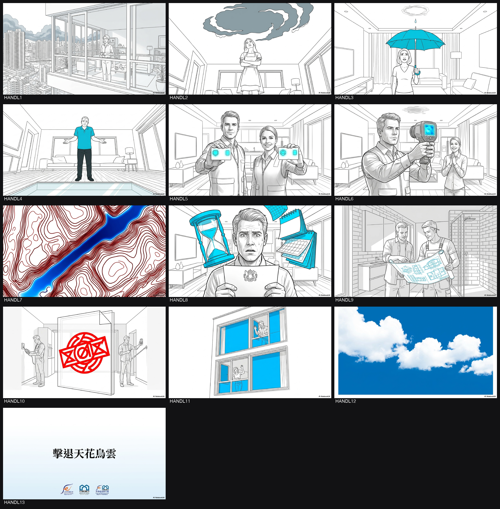
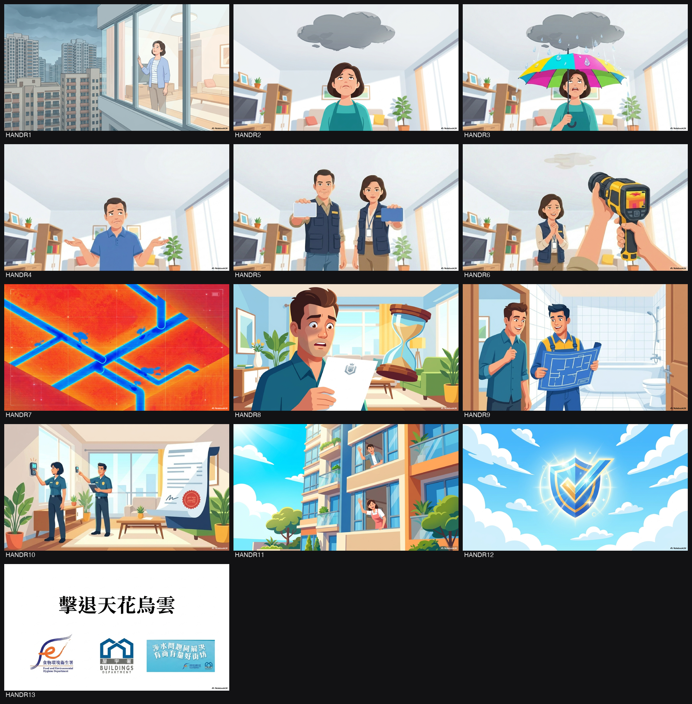
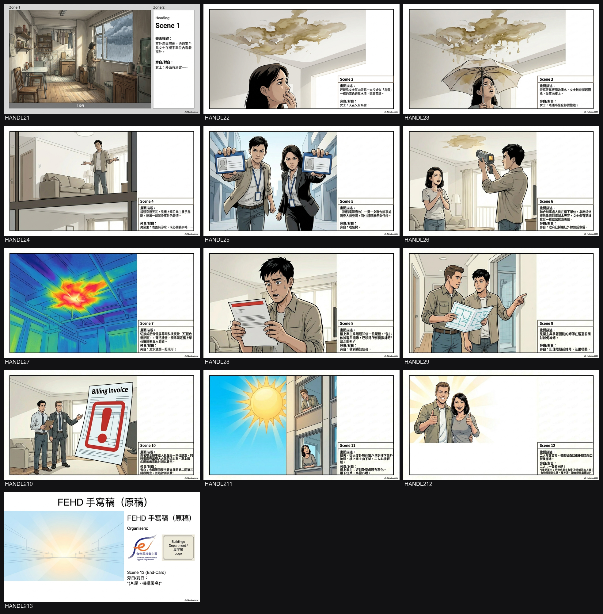
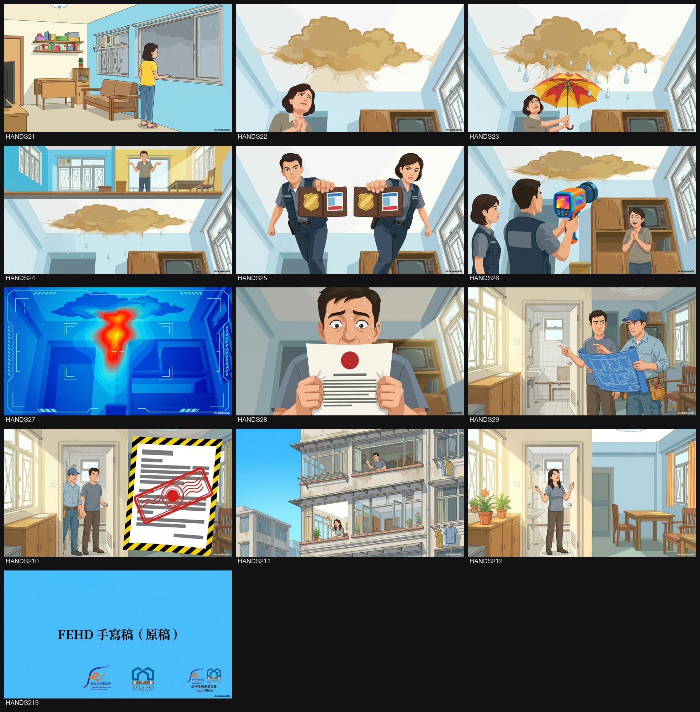
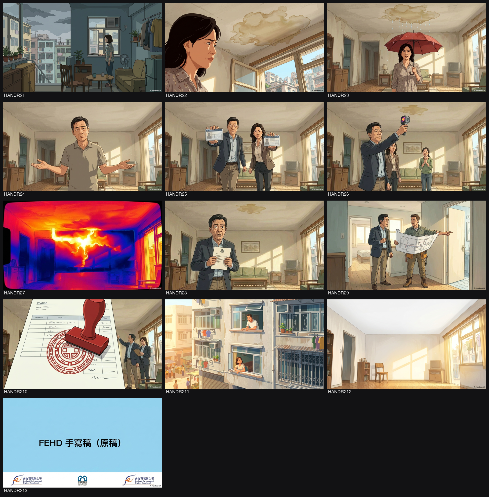
創作概念：用「真·聯合辦事處職員」做主線，跟拍佢哋入真私人樓宇現場：唔係上門幫你整，而係用紅外線熱成像同電子濕度計做 Stage I 初步檢測，喺走廊/外牆已經可以初步推斷源頭，打破「唔開門就查唔到」嘅僥倖。畫面去到疑似上層源頭位置，職員清楚講：會發出通知信，業主要喺限期內自查自修；如果到期滲水仍持續，聯合辦事處會同步進行後續調查，並向不合作業主追討相關測試費用。全片以真聲音＋實機畫面建立權威同「有牙力」。
人/景：
- 真·聯合辦事處職員：走廊度做檢測、手持紅外線熱成像儀（可出 POV 畫面）
- 真物業管理人員（管理處）：協助協調、帶路（點到即止，唔搶走 JO 角色）
- 真上層業主（門內/門口）：一句真心話「我以為唔開門就…」→轉為「而家收到通知信就即刻搵人整」
Visual Device：
- 「紅外線視角」：以紅外線熱成像畫面作為全片 signature look（一格格熱像色塊，對應牆身濕位），再用簡潔 motion graphic 標記「Stage I」→「通知信」→「追討相關測試費用」，令科技=證據=阻嚇一條線講清楚。
主打口號：「紅外線熱成像一照，源頭走唔甩。」
Proposed 明星/名人：不適用（用真前線職員+真個案更權威）
亮點扣連：用咗 #2 紅外線隔空找源頭（主視覺鉤）+ #3 28日倒數通知信（以期限推動行為）+（順帶）對應 brief 必須嘅「同步進行後續調查＋追討相關測試費用」阻嚇結構
紅外線實證視覺與28日通知信結構清晰有力，以真職員建立權威，科技即阻嚇的訊息鏈非常精準。
以真實前線執法結合紅外線科技視覺化，精準傳遞阻嚇訊息並高度契合服務創新要求，僅ESG著墨較少致微扣分。
創作概念:換一個最痛嘅角度落刀 —— 唔講道德,只講荷包。下層浴室天花一滴滴滲水落嚟,呢個全港最有既視感嘅標誌場景,透過 match cut 喺水珠著地嗰刻變成一張濕透嘅政府測試費用通知單,滴水聲同步變成打印機 / 收銀機「嗒嗒」聲。核心因果鏈講到明白:你唔補,水唔係漏向樓下,係漏緊你自己荷包;收到「通知信」唔合作、唔維修,JO 代勞之後就向你追討至少過萬蚊測試費。逐滴累加,計到你條數。守紅線:全程鋪明「係你收到信後不維修,政府代查先追討成本」,係 cost recovery 唔係斂財。
人/景:下層苦主單位浴室,天花石屎滲水位一滴滴滴落水窪;鏡頭 macro 貼住水珠。轉場去上層業主視角:枱面攤住封「通知信」,佢一路扮睇唔到,水滴聲 / 帳單卻一張張累加,逼到埋身。
Visual Device:「液態帳單」Match Cut —— 水珠落地嗰下變成摺疊濕透嘅政府測試費用通知單,水聲變打印機聲;畫面用紅色印章逐張蓋「追討」,一滴 = 一個金額單位,滴到最後砌成過萬蚊張單。全程用單據 / 收據 / 紅章等行政符號代表錢(唔飛銀紙,避詐騙廣告 cliché、亦貼「追討測試費用」性質)。
主打口號:你唔補,你嘔錢。
Proposed 明星/名人:不適用(此橋力量喺 macro 水珠 → 帳單嘅生理痛覺同聲音設計,真實場景 + 道具戲最入腦,明星搶 focus 反而削弱痛點)。
亮點扣連:用咗 [4. 浴室天花滴水共鳴] 做標誌場景 + [1. 硬食一萬七千蚊檢測費] 做痛覺核心,扣 [5. 每日加罰600蚊] 可做累加音效強化「拖得越耐罰得越甘」。
Match cut 由漏水視覺直接轉化為銀碼帳單，痛點清晰且生理聯想強，唯全片依靠單一場景，觸及面與 ESG 元素不足。
以「液態帳單」視覺隱喻精準傳遞追討測試費訊息，創意執行與痛點共鳴極強，惟ESG元素僅間接關聯故扣分。
創作概念：由最有共鳴嘅「浴室天花滴水」出發，真苦主講自己點樣被滴水聲折磨；畫面每滴一下，旁邊就「啪」一聲彈出一個好實在嘅數字提示（例如檢測費用起碼約 HK$17,000 / 後續每日加罰 HK$600），將「拖延」直接連到「荷包痛」。同時穿插真·聯合辦事處職員用紅外線熱成像喺走廊/外牆做 Stage I 初步檢測，最後落到關鍵：上層業主一收到通知信就要自查自修，否則會追討相關測試費用。
人/景：
- 真住戶（樓下苦主）喺自己浴室/廁所，天花滴水、牆身潮濕（真實環境，唔做過火）
- 真上層業主喺屋企開門口收信/睇信（唔需要扮衰人，係「後悔拖咗」嗰種真反應）
- 真·聯合辦事處職員（制服/證件、真儀器）喺私人樓宇走廊/外牆做檢測
Visual Device：
- 「滴答＝跳字數」：每一下滴水聲，就疊加一個大字數字/字卡（HK$17,000、HK$600/日、28日限期），由聲效帶動資訊入腦；最後「通知信」特寫一蓋字三連（紅外線熱成像／通知信／追討相關測試費用）。
主打口號：「收到『通知信』，唔好等。」
Proposed 明星/名人：不適用（全片靠真街坊/真從業員說服力）
亮點扣連：用咗 #4 浴室天花滴水共鳴（開場hook）+ #1 硬食一萬七千蚊檢測費（滴水連到金錢痛點）+ #5 每日加罰600蚊（拖延代價視覺化）
---
以真實苦主共鳴開場，滴水聲結合跳動罰款數字極具記憶點，訊息清晰且說服力強，唯ESG層面著墨較少。
以滴水聲效同步彈出罰款數字嘅視覺裝置精準傳遞拖延代價，真實場景與紅外線檢測展示有效提升說服力並扣連創新服務，惟ESG元素僅隱含於減少滲漏資源浪費而欠具體闡述。
創作概念:上層業主以為「鎖埋道門、唔開門畀人入屋」就政府奈佢唔何 —— 一個破防式反高潮撞散呢個僥倖。鏡頭一轉入聯合辦事處(JO)人員嘅紅外線熱成像 POV:牆後嗰團滲水唔再係肉眼睇唔到嘅暗病,而係一團高對比、脈搏式跳動嘅橙紅熱源,無視門鎖、穿牆過樓直指源頭。硬訊息扣連:政府已引入紅外線科技加快初步調查,毋須入屋都搵到源頭;收到「通知信」唔按時維修,JO 會同步展開後續調查並向違規業主追討相關測試費用。把客戶「政府有新科技、有牙力」一次過 show 出嚟,而唔係 tell。
人/景:JO 兩名人員企喺老舊私人樓宇走廊 / 外牆,手持紅外線熱成像儀同電子濕度計做 Stage I 初步檢測(只影牆身、天花結構熱力圖,避開人體輪廓,守私隱紅線)。對照面係門後上層業主,以為關咗門就安全、繼續嘆冷氣。
Visual Device:「熱能幽靈」 —— 滲水喺紅外線視角下變成一團有生命、脈搏式閃動嘅橙紅熱源,穿過牆壁地板,完全無視門鎖界線。配軍事夜視儀 UI 美學(數據讀數、十字準星、熱力色階條),令 JO 似裝備升級嘅專業執法者,而非上門驗樓師傅。
主打口號:鎖得住道門,鎖唔住滲水。
Proposed 明星/名人:不適用(此橋靠科技視覺破防,用真實 JO 人員質感更可信、更貼「執法者」角色,明星反而削弱權威 documentary 感)。
亮點扣連:用咗 [2. 紅外線隔空找源頭] 做畫面主軸破防,扣 [3. 28日倒數通知信] + [1. 硬食一萬七千蚊檢測費] 收尾帶出後果。
---
紅外線熱成像破防視覺衝擊力強，將滲水調查轉化為專業執法形象，訊息硬淨且記憶點高，唯ESG元素較弱。
以紅外線熱成像POV將抽象執法科技轉化為具象視覺衝擊，精準傳遞「隔空查證」訊息並有效打破業主僥倖心態，惟ESG著墨較少。
創作概念:
將成個世界觀變成「紅外線熱成像視角」——牆壁、傢俬係冷藍,唯獨滲水源頭發出高熱橙紅光,喺科技面前「現形」。核心橋係:以前係樓上樓下「你估我估」嘅羅生門,而家聯辦處引入「紅外線熱成像分析」,源頭客觀實證、無得狡辯。政府硬訊息(業主責任 + 拖延要被追討測試費用)自然接喺「源頭已鎖定」之後——既然證據確鑿,主動檢驗維修就係唯一出路。扣住客戶「show 唔 tell」要求:用真儀器、真畫面證明「政府有新方法解決舊問題」。
人/景:
典型香港私人住宅(中產、貼地,唔豪宅唔殘舊)。聯辦處人員(平實、專業形象)手持紅外線熱成像儀同電子濕度計,喺單位內進行同步調查。鏡頭由肉眼可見嘅尋常天花,切換成熱成像視角,源頭浮現。一位業主收到「通知信」嘅特寫。全程冇「奸角」,只有「程序」同「事實」。
Visual Device:
「偽色熱成像 UI」做全片視覺濾鏡——高端工業/軍事檢測級嘅銳利質感(避開新聞低解像度熱圖)。畫面在「真實單位」同「熱成像鎖定源頭」之間切換,源頭以橙白高熱光現形,旁邊疊加系統級 super:溫度讀數、座標、「源頭已辨識」。整支片就好似一份正在生成嘅「電子證供」。
主打口號:紅外線之下,源頭無得匿。
Proposed 明星/名人:
不適用。此 concept 靠「科技 + 程序」嘅權威感,用真實聯辦處人員 + 旁白主導更可信;加明星反而削弱「官方公告」嘅執法感,亦慳製作費。(如客戶堅持要權威背書,可考慮片中段插入李家超《2025 年施政報告》archive footage 作政策源頭,但非「代言明星」。)
---
運用紅外線熱成像將滲水源頭具象化，科學舉證與程序公義概念清晰有力，惟訊息轉化為具體公眾行動呼籲的層次可再深化。
以熱成像視覺化滲水檢測精準傳遞聯辦處科技執法訊息，惟ESG著墨不足略失分。
創作概念：將「拖延」視覺化為一個實體倒數。以樓上業主為主角，開頭佢對天花滲水視而不見、繼續睇電視食花生；畫面 split screen 同步 show 樓下鄰居舉頭望滴水。一滴水落下，觸發一個數字跳動——由 $0 開始累加，跳到 $17,000 定格同時畫面切去 JO 通知信同聯合辦事處調查員上門。最後 super：「通知信到期，第二三階段同步進行，費用業主承擔」。
人/景：男子(樓上拖延業主，家居服，沙發上懶散) / 樓下女子(抬頭望天花無奈) / 典型香港分層單位上下層 / 水滴 macro shot / 通知信特寫 / JO 職員上門(制服)。
Visual Device：「滴水變銀紙」——macro 拍一滴水由天花滲出、拉長、滴落；中途 morph 成數字跳動，最後凝結為 $17,000 金額。用一個物理動作串連「滲水」同「代價」，觀眾睇完記得「滴水=散財」。
主打口號：滲水唔處理，一萬七埋單 / Pay $17K? Fix it first.
Proposed 明星/名人：不適用。角色需要「令觀眾有少少反感又認到自己」嘅 everyday 感，明星會分散焦點，素人更貼地。
---
Raymond，兩個 concept 方向：
- Concept 1「紅外線上門」：穩陣、專業、政府慣性收貨風格，科技背書強，信息清晰。
- Concept 2「滴水計時」：少少 tension、視覺鉤更 sharp、針對「拖延業主」心理更直接，但處理唔好會似警告意味過重。
等你拍板，揀中邊條我哋 develop full storyboard。
視覺比喻極具原創性，將滲水直接掛鉤罰款金額，說服力強且記憶點深刻，但缺乏ESG元素，且警告意味需拿捏分寸。
「滴水變銀紙」視覺轉化精準直擊拖延業主痛點，訊息清晰且記憶點強，惟ESG著墨較少致未能滿分。
創作概念:滲水以前係樓上樓下嘅「羅生門」,口同鼻拗,各執一詞。今次政府唔再做和事佬,而係手持紅外線熱成像儀嘅「科學鑑證官」—— 紅外線一照,肉眼睇唔到嘅滲水路徑變成一道無法抵賴嘅「熱譜指紋」印喺牆身上。畫面本身就係證據,直接帶出硬訊息:聯辦處新程序用紅外線熱成像分析、同步進行第二和第三階段調查,業主有妥善保養物業嘅責任,唔合作將被追討相關測試費用。
人/景:典型香港私人住宅單位(中產、貼地,唔豪宅唔殘舊)。樓下住戶望住天花水漬無奈;聯辦處人員手持熱像儀、電子濕度計入屋工作。鏡頭跟儀器移動,牆身灰冷,熱源橙紅跳出。冇主角,焦點係「程序」同「業主」呢個身份。
Visual Device:「熱譜指紋」—— 將滲水痕跡處理成極高對比、邊緣銳利嘅橙紅熱譜,似一道蓋落牆身嘅簽名/罪證,印喺灰藍冷調牆面上。一照,痕跡現形,賴唔甩。
主打口號:一照現形,賴唔甩。
Proposed 明星/名人:不適用(品牌角色係冷靜中立嘅鑑證官,用明星反而削弱權威同公正觀感,亦容易踩「醜化一方」紅線)。
---
科學鑑證定位清晰有力，熱譜指紋視覺一針見血，但滲水責任宣傳易淪為單向恐嚇，需平衡業主共情。
以「熱譜指紋」視覺化紅外線檢測程序，精準傳遞新機制科學性與業主責任，創意執行貼地且具說服力，惟ESG連結較弱。
創作概念:
傳統滲水片多數由苦主投訴開始，再由旁白解釋流程；我哋反轉——由「紅外線熱成像分析」嘅視角做主角，觀眾一開片以為睇緊一場查案，鏡頭掃過天花、牆角、喉管位，肉眼睇唔清嘅滲水痕跡喺紅外線畫面入面慢慢現形。最後先揭曉：呢場「查案」唔係要搵人鬧交，而係聯合辦事處新程序用科技加快搵源頭；一旦發現滲水，樓上業主收到 建議維修通知（Notification Letter），就要於指定限期內主動 檢驗和維修。如果限期屆滿後滲水仍然持續，聯合辦事處會 同步進行第二及第三階段調查，並向不合作業主 追討相關測試費用。
人/景:
聯合辦事處兩名前線人員到樓下單位檢測：一位操作紅外線熱成像儀器，一位記錄及向住戶簡述程序；樓下單位有真實滲水痕跡但不誇張獵奇；上層業主收到建議維修通知後安排檢驗和維修。場景集中於香港私人樓宇室內、走廊、單位門口，避免過度外景或大製作感，保持 30 秒 API 清晰直接。
Visual Device:
「Thermal Camera UI POV」。畫面一半係普通實景，一半切入紅外線熱成像視角：冷熱色塊顯示疑似滲水位置，配合簡潔 super，例如「第一階段調查」、「紅外線熱成像分析」、「加快識別源頭」。最記得住嘅一刻係：肉眼只見一小點水漬，但紅外線視角一掃，源頭線索即時浮現——將抽象科技變成觀眾睇得明嘅「證據」。全片唔靠卡通動畫，最多只用儀器介面式 graphic overlay，符合真人實境方向。
主打口號:
紅外線快搵源頭，業主快做維修
Proposed 明星/名人:
不適用。建議用可信度高嘅專業素人型演員演聯合辦事處人員，重點放喺技術同程序可信性；唔用明星可避免分散對「紅外線熱成像分析」同「建議維修通知」嘅注意力。
亮點扣連：用咗亮點 1「紅外線快篩視覺」作全片主視覺，將隱藏滲水源頭變成可見線索；亦用亮點 6「JO 雙部門拍住上」——以前線聯合辦事處人員實地檢測，呈現食物環境衞生署與屋宇署共同處理新程序嘅專業感。
概念將抽象科技轉化為清晰視覺敘事，查案包裝有效提升說服力與記憶點，惟ESG元素可再加強。
以紅外線熱成像POV將抽象新程序轉化為直觀查案視覺，準確傳遞科技執法與業主責任訊息，創意執行貼題且具說服力，惟ESG著墨較少略為扣分。
創作概念：
將聯辦處的新調查程序比喻為一場針對滲水的「科學緝兇」。概念核心在於視覺化「以前找不到，現在一目了然」的轉變。透過紅外線熱成像這個新技術作為英雄，像照妖鏡一樣，讓隱藏在牆後、地板下的滲水源頭無所遁形，直接打破業主「證明不到是我」的僥倖心態，從而帶出必須主動處理的關鍵訊息。
人/景：
一個典型的香港私人屋苑單位內。鏡頭跟隨一名身穿制服、胸口有「聯辦處」標誌的調查主任，他手持紅外線熱成像儀，冷靜地在疑似滲水的牆壁和天花板掃描。另一邊廂，是神色無奈、受滲水困擾的下層住戶，以及一個表情迴避、略顯心虛的上層單位業主。場景真實，有生活氣息，但不是極端惡劣的環境。
Visual Device：
「紅外線透視分割畫面」。當調查主任舉起儀器，畫面一分為二：左邊是肉眼所見的正常牆壁，右邊則同步顯示該處的紅外線熱成像圖。在熱成像畫面中，一團不正常的藍色低溫區域（代表滲水濕氣）清晰可見，直接將「因」與「果」以最科學、最無可辯駁的方式呈現。這視覺裝置可反覆使用，成為全片的記憶點。
主打口號：
紅外線一照，滲水源頭無所遁形。
Proposed 明星/名人：
不適用。以專業、權威的調查人員形象作為代言，更能建立公信力。
---
概念精準將新技術比喻為「科學緝兇」，紅外線分割畫面極具說服力與記憶點，惟完全未涵蓋ESG元素。
以紅外線熱成像分割畫面直觀呈現新調查程序，訊息準確且具說服力，惟ESG元素僅隱含於減少重複檢測中而未明確闡述。
創作概念: 用「拖延 = 直接燒錢」做第一秒 hook。畫面由滲水滴答聲開始，每滴水都化成跳動嘅 「$17,000」數字倒數/累積，提醒觀眾：收到「通知信」唔處理，過期後聯合辦事處會同步進行第二及第三階段調查，並追討相關測試費用。全片用清晰圖像把新程序講到一眼明：Stage I 引入紅外線熱成像分析 → 有滲水就出「通知信」 → 過期仍滲水就同步展開 Stage II & III + recover costs。
人/景: 典型私人住宅；樓下單位天花小範圍滲水（乾淨處理、唔殘破）；樓上業主收信後猶豫；聯合辦事處人員用儀器做檢測（只呈現專業流程，唔英雄化）。
Visual Device: 「水滴 = 金錢」：每一下滴水，螢幕角落巨大 $17,000 數字閃一下／由透明變實色；配合倒數計時器（「通知信」限期概念）+ 流程 icon 動畫（Stage I/II/III）。
主打口號: 「收到『通知信』就整，唔好拖到要追討相關測試費用。」
Proposed 明星/名人: 不適用（以權威旁白 + 實景/程序畫面建立公信力，避免喜劇化或搶焦）。
---
將抽象程序轉化為「$17,000倒數」的視覺hook極具說服力，清晰傳達拖延後果，唯ESG元素薄弱。
以「滴水等於燒錢」視覺化新程序罰則與紅外線檢測流程，訊息精準、記憶點強且具創新說服力，惟ESG元素僅限於減少重複檢測之隱性效益。
創作概念：一個業主收到「建議維修通知」後選擇無視，時間快進到一年後——佢喺同一個單位，但以「苦主」身份出現（樓上單位滲水落嚟），JO 人員用紅外線熱成像掃描，螢幕上清晰顯示滲水源頭正正係佢當年拒絕維修嘅位置。時間錯位製造「因果輪迴」：你今日拖嘅單，他日變成你被查嘅案。最後 VO 點題：「妥善保養物業防止滲水，始終係業主責任——新程序下，唔處理就要找數。」
人/景：中年業主（同一演員分飾「上年懶理嘅上層業主」同「今年受害嘅下層業主」，靠妝髮同服裝區分時間線）、舊樓唐樓單位（天花水漬、牆身發霉剝落真實場景）、JO 調查員（女性，持紅外線熱成像儀）、熱成像儀 POV 畫面（真實 UI 介面）。
Visual Device：「同一個門牌，兩個時間」——鏡頭固定喺單位門口，門牌「12A」不變，第一次開門係業主收到通知後不屑撕掉信件（上年）；第二次開門係業主驚慌睇住 JO 人員掃描自己天花（今年）。門框做畫框，時間喺同一空間摺疊。
主打口號：滲水唔處理，遲早你要找數。
Proposed 明星/名人：不適用。選用素人演員增強紀實感，JO 人員可由真實部門人員客串（需申報）或專業素人演員。
亮點扣連：①紅外線快篩視覺（熱成像儀 POV 全程參與敘事，非裝飾性）；②硬食 $17,000 檢查費（快進後旁白帶出「追討相關測試費用」具體金額）；③上層業主自證清白（核心反轉：由「被通知者」變「被追討者」）；④發霉剝落共鳴（舊樓場景真實呈現，但唔誇張化怪物）；⑤每日跳錶式罰款（時間快進本身即係視覺化「拖延成本」）。
---
概念精準運用因果反轉與固定鏡框，將滲水責任與新程序罰則戲劇化，訊息清晰且具說服力，惟ESG層面著墨較少。
以熱成像POV結合時間錯位敘事精準傳遞業主責任與新程序後果，創意執行具紀實說服力且直接扣連服務創新。
創作概念: 將聯合辦事處嘅調查過程，塑造成一個專業、高科技嘅「鑑證過程」。唔再係苦口婆心嘅勸喻，而係一場基於科技同證據嘅執法行動。透過「紅外線熱成像分析」呢個視覺核心，將抽象嘅「調查」具象化成「睇穿牆壁、無所遁形」，強調新程序嘅精準同權威，令業主意識到拖延已無藉口。
人/景:
* 人: 聯合辦事處職員(著制服，專業、冷靜、唔英雄化)、樓下受困擾嘅業主(焦慮但唔誇張)、樓上業主(只出現手或背影，象徵性)。
* 景: 一個典型但整潔嘅香港私人住宅單位(樓上樓下)。重點場景係滲水嘅天花板、牆身，以及職員用儀器檢測嘅過程。
Visual Device: 紅外線視角(Thermal Vision)。畫面會喺正常視覺同紅外線熱成像畫面之間切換。當紅外線儀器掃過牆身，觀眾會見到肉眼睇唔到嘅藍色(正常)牆身，逐漸浮現出由黃到紅嘅滲水路徑，好似照妖鏡一樣，將「證據」視覺化。呢個 device 會貫穿成條片，成為最 signature 嘅畫面。
主打口號: 新科技，快狠準；業主責任，咪再等。
Proposed 明星/名人: 不適用。重點係制度同科技，唔係個人。
概念將滲水調查專業化為高科技鑑證，紅外線視覺隱喻極具說服力，精準命中目標痛點，惟ESG元素完全缺席。
以紅外線熱成像將抽象調查程序具象化，精準傳遞科技執法訊息並突顯創新，惟說服力略偏重威懾而欠缺對業主配合意願嘅情感共鳴。
創作概念:
傳統政府片通常將「通知信」放喺流程中段，用旁白講完就算；我哋反轉——全片由一封 建議維修通知（Notification Letter） 做主角，佢唔係一張普通信，而係「責任正式開始」嘅觸發點。觀眾一路見到信由信箱入屋，被放喺鞋櫃、餐枱、文件堆邊緣；但每次被忽視，畫面都即時切返樓下單位天花繼續滲水，令「你唔處理，問題唔會自己消失」好入屋。最後反轉：信唔係政府程序嘅終點，而係聯合辦事處下一步 同步進行第二及第三階段調查、並可能向不合作業主 追討相關測試費用 嘅起點。
人/景:
一個香港私人樓宇上層單位業主，日常返工、食飯、收信；樓下住戶屋內天花水漬、牆身發霉、油漆剝落；大廈信箱、走廊、升降機口；聯合辦事處人員到樓下單位以 紅外線熱成像分析 進行第一階段調查。角色性別、年齡可平衡配置，避免 stereotype，例如上層業主可以係中年男或女專業人士，樓下住戶可以係長者夫婦或年輕家庭。
Visual Device:
「信件 POV + 倒數感」。鏡頭好似跟住建議維修通知行：由信箱跌入手、放上枱、差啲被雜物遮住；每次信被擱置，畫面就以 match cut 轉去樓下滴水位置，滴水聲變成節拍。信封白色同紅外線熱成像嘅彩色熱點形成強烈記憶：一邊係「收到通知」，一邊係「源頭被看見」。唔需要用恐嚇字眼，靠「信一直喺度、滲水一直喺度」帶出責任壓力。
主打口號:
滲水唔好拖，收到建議維修通知就要做
Proposed 明星/名人:
不適用。呢條橋靠「每個業主都可能收到呢封信」嘅代入感，真人素人演員更貼地，亦符合部門無需名人偏好。
亮點扣連：用咗亮點 3「上層業主自證清白」——將建議維修通知變成責任轉移嘅視覺起點；亦用亮點 1「紅外線快篩視覺」——以聯合辦事處第一階段紅外線熱成像分析，清楚交代新程序點樣加快識別源頭。
---
以信件為敘事視角極具巧思，將被動通知轉化為主動責任，視覺比喻精準，唯ESG延伸可再加強。
以信件POV貫穿新調查程序與業主責任，訊息準確且視覺記憶點強，有效將行政通知轉化為推動行動嘅創新敘事。
創作概念:
直接觸發業主「怕蝕底」本能,將「拖延」量化成銀紙。滲水水漬隨時間推進逐漸凝聚、變形成具體金額,水越積越多,數字越滾越大,質感由「濕潤」變成「沉重」—— 最終定格喺「約 $17,000 測試費」嘅後果。核心扣政府硬訊息:新程序下,拖延維修者要承擔追討的測試費用;主動及早處理 = 成本最低。將抽象政策變成一道「計掂條數」嘅數學題。
人/景:
香港住宅單位 + 樓上業主信箱收到「通知信」。場景克制,唔煽情、唔做鄰里衝突(避紅線)。重點唔喺人嘅情緒,喺「水→數字→帳單」嘅視覺轉化同時間壓迫。
Visual Device:
「積水成帳單 — 液態數字化」。天花/牆角滲水,水漬形態隨時間凝聚成金額數字,越拖越大;配「通知信」化身倒數計時裝置,日期跳動。一滴水 = 一日拖延 = 多一分代價,將時間直接錨定喺視覺變形上。
主打口號:
拖得越耐,蝕得越多。
Proposed 明星/名人:
不適用。本概念力量喺「數字 × 時間 × 後果」嘅冷靜呈現,旁白權威帶訊息即可;用明星會分散「$17,000」呢個核心記憶點。
---
⚠️ 兩個概念共用同一套 style_anchor 同世界觀(冷靜·精準·證據搜集者),Raymond 揀中邊個,先 develop 足 12 格 board + 英文稿 + Radio 三語 + KV。兩條都已避開客戶紅線(無煽情衝突/無搞笑/無英雄化個人/無殘舊破敗),回歸「制度 + 科技 + 業主責任」。
概念將拖延量化為金錢非常精準清晰，倒數計時與液態數字的視覺設計極具巧思，但完全缺乏 ESG 元素，且宣傳規模感未展現。
將抽象政策後果轉化為具象視覺計數器，訊息精準且記憶點強，惟ESG元素僅間接體現於減少資源浪費。
創作概念: 將「聯合辦事處」人員塑造成專業嘅「滲水偵探」，用佢哋嘅新武器——「紅外線熱成像儀」——去破解懸案。全片以一種輕懸疑、類紀實（docu-style）嘅手法，展現佢哋點樣用科技「看穿」牆壁，令以往難以追尋嘅滲水源頭無所遁形，強調新程序嘅科學性、準確性同權威性。
人/景: 聯合辦事處人員（著制服，專業形象），喺典型香港私人住宅單位內工作。場景包括：受影響單位（天花有水漬、滴水），同埋樓上源頭單位（表面睇落正常嘅廁所/廚房）。
Visual Device: 「紅外線 POV 視角」。畫面會頻繁切換到紅外線熱成像儀嘅主觀視角，將肉眼睇唔到嘅濕氣、喉管熱點，用鮮艷嘅熱感顏色呈現出嚟。一個關鍵畫面係用分割畫面（split-screen），一邊係樓下單位滴緊水嘅天花，另一邊係樓上單位對應位置嘅紅外線畫面，一個紅色嘅「熱點」清晰標示出滲水源頭。
主打口號: 紅外線一照，滲水源頭無得拗。
Proposed 明星/名人: 不適用。主角係「聯合辦事處」嘅專業人員同佢哋嘅科技，更能建立公信力。
概念清晰，以「滲水偵探」及紅外線POV視角將專業程序可視化，科學說服力強，惟訊息傳遞略偏技術展示，情感共鳴及ESG延伸可再深化。
以紅外線POV直觀展示新程序科學性與準確度，訊息清晰且具說服力，惟ESG元素著墨甚少致該項得分偏低。
創作概念：第一人稱紅外線熱成像儀 POV，鏡頭掃過走廊外牆，原本隱藏的滲水裂縫即時以白熱色塊浮現；切到收件人拆開「通知信」，倒數 28 日字樣彈出；最後信封翻轉，露出「追討費用 HK$17,000」數字，打破「唔開門就冇事」的僥倖心態。
人/景：聯合辦事處職員手持儀器（走廊實景）+ 業主在單位開信。
Visual Device：紅外線熱成像即時顯像 + 通知信 28 日倒數計時器。
主打口號：通知信到，唔理就輸
Proposed 明星/名人：不適用
亮點扣連：用咗亮點 2（紅外線隔空找源頭）+ 亮點 3（28 日倒數通知信）。
紅外線POV視覺衝擊力強，精準打破僥倖心態，但缺乏ESG元素且宣傳延展性稍弱。
以紅外線熱成像POV直觀呈現滲水檢測技術並結合28日倒數與罰款金額，訊息精準、創意突出且具威懾力，惟ESG元素僅間接關聯故扣分。
創作概念: 以聯合辦事處前線人員嘅第一身視點出發，用紀實手法追蹤一單真實滲水個案。透過佢哋嘅專業操作同平實解說，展現「紅外線熱成像分析」點樣令隱藏嘅滲水源頭無所遁形，帶出新程序嘅效率同科學性，最後將個波交返俾業主，強調「建議維修通知」後嘅責任。
人/景: 兩名真實感強嘅聯合辦事處職員（一男一女，分別代表食環署同屋宇署），喺一個受滲水影響嘅舊樓單位內工作。會見到受困擾嘅樓下住戶（一個中年女士）同之後被通知嘅樓上業主。
Visual Device: 紅外線熱成像儀器嘅主觀視角 (POV)。畫面會頻繁切換到儀器嘅顯示屏，觀眾會由黑白或正常畫面，瞬間變成睇到代表濕氣嘅藍、紅色溫圖像，將肉眼睇唔到嘅「罪證」視覺化，極具說服力。
主打口號: 科技睇穿滲水源，業主責任唔好等。
Proposed 明星/名人: 不適用。
亮點扣連：用咗「🏷️ 紅外線快篩視覺」做核心視覺鈎，同埋「👤 JO 雙部門拍住上」做人物設定，強化專業同科學感。
紀實手法與熱成像POV視覺鈎極具說服力，科學感強，但ESG層面著墨較弱，整體訊息清晰且責任歸屬明確。
以熱成像POV直觀呈現新程序科學性與權責訊息清晰，惟ESG著墨不足略為扣分。
創作概念: 全片以「紅外線熱成像儀」嘅第一人稱視角（POV）作為敘事主體。鏡頭本身就係聯合辦事處（JO）調查員手中嘅儀器，將肉眼睇唔到嘅滲水問題，變成無可抵賴嘅熱能鐵證。由儀器「睇」到問題、到系統自動觸發「建議維修通知」、再到限時倒數提醒，全程以科技視角貫穿三大 Key Message，將「業主責任」同「追討費用」嘅硬訊息，包裝成客觀、精準、無法反駁嘅科學事實，完全避開傳統說教或恐嚇式語氣。
人/景: 真實私人樓宇單位內景（天花、牆身、地台），JO 調查員（只露手持儀器嘅雙手/制服局部）以專業姿態操作；樓上業主收到實體「建議維修通知」信件嘅特寫；真實家居環境光與熱成像畫面交替。
Visual Device: 「Thermal Vision UI Overlay」—— 全片關鍵幀均疊加真實紅外線熱成像儀嘅操作介面（包括色溫刻度、十字準星、溫度讀數、偵測鎖定框）。當鏡頭掃過牆身，熱能圖譜由藍轉紅鎖定滲水源頭；發出通知信時，UI 彈出「Notification Letter Issued」提示；結尾顯示網頁時，UI 框住網址並同步旁白讀出，視窗右下角預留 1/6 橢圓淺灰手語翻譯區，與 UI 風格融合。
主打口號: 紅外線一照，維修責任到你
Proposed 明星/名人: 不適用（標書明確無特別要求，且科技 POV 視角本身已係最強主角，真人演出僅作情境輔助）
亮點扣連: 用咗亮點 ①「紅外線快篩視覺」作為全片第一身敘事载体；同時扣連亮點 ③「上層業主自證清白」，透過 UI 彈出通知信提示，視覺化「責任轉移」嘅瞬間。
以熱成像POV將滲水責任轉化為客觀科學鐵證，創意極強且訊息清晰，唯ESG層面著墨較少。
以熱成像POV將滲水責任轉化為客觀科學證據，訊息精準且創新，惟情感共鳴與社會責任著墨稍弱。
創作概念:
將「拖延」呢個行為,直接同金錢成本做強制等價轉換。畫面入面,天花滲水嘅水漬唔再係水漬,而係一個冷酷跳動嘅 `$17,000` 計價器——每一滴水滴落,數字就「啪」一聲跳升、變紅。核心橋係打破業主「拖得就拖」嘅僥倖心理:新程序下,拖延嘅成本由「未知嘅麻煩」質變成「已知嘅金錢損失」。政府硬訊息(不合作會被「追討相關測試費用」)用最具阻嚇力嘅方式落地。關鍵守紅線:全程強調「主動處理就唔使畀」,將數字定性為「拖出嚟嘅代價」而非政府斂財,結尾扭返做正面出路(主動驗 = 歸零)。
人/景:
香港典型住宅天花/牆身滲水現場做主視覺舞台。一封「通知信」上嘅限期日期,設計成機場航班牌式機械翻頁質感,翻出嚟嘅唔係目的地而係累積金額。穿插聯辦處同步調查嘅紀實 shot 建立「新程序」可信度。人物克制——唔拍住戶慘況,焦點全放喺「時間 × 金錢」嘅冷感計算上。
Visual Device:
「液態數字」與「實體水漬」強制疊合——水漬即計價器。Monospaced / 數碼顯示字體嘅冷硬數字,撞落水漬有機形態,形成「自然 vs 人造」「無情 vs 民生」嘅張力。畫面要有銀行對數單式嘅精確冷酷,唔煽情。結尾數字「啪」一聲歸零(業主主動處理),畫面由冷藍轉清——畀出路。
主打口號:拖一日,多一筆;早處理,免追討。
Proposed 明星/名人:
不適用。此 concept 靠「數字衝擊 + 冷感精確」運作,明星反而會搶走數字焦點、削弱阻嚇力。旁白主導(冷靜、權威)更貼客戶「理性務實、非煽情」嘅調性要求。
---
⚠️ 兩個 concept 共用同一套 style_anchor 同熱成像/數字視覺語言,Round 2 揀中邊個都可以無縫 develop full board。Concept 1 走「科技權威」、Concept 2 走「後果阻嚇」,Raymond 揀中再拆 12 格。
概念將拖延成本精準量化為視覺衝擊，阻嚇力極強且緊扣新程序，惟完全未觸及ESG元素。
將抽象行政後果轉化為具象金錢損失嘅視覺計價器極具阻嚇力與記憶點，準確傳遞新程序核心訊息，惟需確保執行時避免令公眾誤讀為政府斂財以維持說服力。
創作概念:走貼地痛點路線(更入屋、更「忠誠」,符合長官「唔好恐嚇」)。聚焦樓上業主嘅「損失規避」心理:天花滴水,鏡頭跟住一滴水跌落——半空中 match cut 變成一張摺起嘅帳單/銀紙(配收銀機「叮」聲)。旁白帶出收到「建議維修通知」唔理會嘅真實代價:政府會同步做後續調查並追討測試費用,拖得越耐成本越滾。最後落「主動維修,唔使破財」嘅 CTA。痛得實在,但講「自己嘅錢」而唔係「政府嚇你」,姿態先禮後兵。
人/景:普通家庭單位,天花持續滴水入水桶。一個抱僥倖「等政府查」心態嘅樓上業主(收信扮睇唔到)。後段見 JO 人員上門,紅外線儀一照源頭即現,帳單概念落地。
Visual Device:水滴 Morph 帳單——水珠跌落瞬間 morph 成發票/銀紙質感,保留水嘅流動感同重量感,材質變錢。聲效設計:drip → ching(收銀機)→ 紙張落地。將「濕漉漉嘅煩」轉成「乾爭爭嘅痛」。
主打口號:滴落嚟嘅唔係水,係你張帳單
Proposed 明星/名人:不適用(真人實境拍攝為主)。
亮點扣連:用咗 💡 硬食 $17,000 檢查費——將天花水滴視覺化成帳單/銀紙做核心鈎;副線輕扣 💡 每日跳錶式罰款(拖得越耐成本越滾,但用「追討測試費」官方框架,唔誇罰款做恐嚇)。
---
⚠️ 只出 2 個概念,待 Raymond 揀中先 develop full 12 格 storyboard。Concept 1 主打差異化(科技搜證攻空白)、Concept 2 主打貼地痛點(更符合長官「忠誠入屋」期望)——兩條都避開咗黑名單嘅街坊和諧戲劇套路。
痛點轉化精準，水滴變帳單的視覺比喻極具說服力，唯訊息略偏重金錢後果，可稍平衡責任教育。
以「水滴變帳單」視覺隱喻精準傳遞損失規避訊息，創意執行力強且貼地，惟ESG元素僅間接扣連可持續維修，整體為高說服力之務實方案。
創作概念：以「紅外線熱成像」作為貫穿全片嘅視覺鈎，將抽象嘅科技程序轉化為觀眾一眼記得住嘅畫面語言。核心橋係「Before vs After」嘅調查速度對比——舊程序係漫長等待嘅黑白畫面，新程序係紅外線一掃即現真相嘅偽彩色世界。透過 split-screen 同時呈現「樓下住戶嘅困擾」同「樓上喉管嘅熱源蹤跡」，將「因」與「果」嘅責任關係視覺化，直接回應「業主有責任」嘅硬訊息。
人/景：典型香港私人住宅單位——樓下單位天花（實拍：水珠滲出、牆紙起泡、住戶抬頭無奈望）；樓上單位廁所/廚房喉管位置（紅外線熱成像畫面：喉管熱源呈亮黃色，滲水路徑呈紫色擴散）。聯合辦事處調查人員（實拍：手持紅外線熱成像儀、電子濕度計，制服為 FEHD/BD 標準裝備）。
Visual Device：Split-screen 分割畫面——左邊係樓下單位住戶嘅實拍畫面（冷色調、靜態、壓抑），右邊係同一時間樓上單位喉管嘅紅外線熱成像（偽彩色、動態、揭示性）。中間以一條幼細嘅光縫分隔，象徵「樓板」嘅物理界限。當調查人員掃描完成，光縫向兩邊擴展，畫面合成全屏，疊上「通知信」圖樣同「HK$17,000」罰則數字。
主打口號：紅外線一照，滲水無處藏
Proposed 明星/名人：不適用。調查人員以真實 FEHD/BD 聯合辦事處人員形象呈現（可考慮找真實人員或特約演員，但必須似真、有公信力），避免明星分散對政策權威性嘅注意力。
---
訊息清晰且視覺化出色，但創意執行與情感共鳴尚有提升空間。
以紅外線熱成像Split-screen直觀呈現滲水因果與執法權威，訊息精準且具創新說服力，惟ESG著墨較少略為扣分。
創作概念: 將「紅外線熱成像分析」從技術術語轉化為「睇穿隱瞞嘅眼睛」。針對公眾對 JO 調查「緩慢、依賴鄰居合作」嘅 cynicism，本片以紅外線鏡頭作為第一視角 (POV)，展示新科技如何無視表面掩飾、直接鎖定滲水源頭。強調「證據確鑿」令拖延變得毫無意義，從而帶出「早整早著數」嘅理性結論。將政府形象由「被動投訴處理者」重塑為「主動科技執法者」。
人/景: 同一空間嘅雙重現實：肉眼看到嘅潔白牆身 vs 紅外線視野下明顯嘅藍色冷斑/紅色熱源滲水路徑；JO 專業人員（穿著制服、佩戴證件）操作儀器嘅專注特寫；樓下單位天花板與樓上單位地板嘅垂直分屏同步展示。
Visual Device: 「熱成像掃描簾」(Thermal Scan Wipe)。畫面如被一道科技光束掃過，所到之處由普通实景無縫過渡至紅外線熱成像畫面，直觀呈現「睇穿牆壁」嘅過程。掃描線經過處，彈出精準標籤 (e.g. "滲水源頭確認")，將抽象科技變成易懂嘅視覺語言，同時暗示「無處遁形」嘅壓迫感。
主打口號: 紅外線揪出滲水源，萬七檢驗費何必付
Proposed 明星/名人: 不適用（科技權威感來自儀器與程序，非個人魅力）。
概念將紅外線技術轉化為「透視真相」視覺語言，精準有力，唯口號稍嫌功能導向，ESG層面著墨較弱。
以熱成像POV直擊滲水痛點並重塑科技執法形象，訊息精準且創新度高，惟口號略帶負面誘因或削弱說服力。
創作概念: 透過「看不見」與「看得見」嘅強烈對比，呈現新程序嘅威力。前半段描寫滲水問題對住戶嘅無形困擾，後半段以「紅外線熱成像」視覺，將隱藏嘅滲水源頭「顯形」，象徵政府新科技令責任變得清晰可見、無可抵賴，直接回應業主「證明唔到係我」嘅核心心態。
人/景:
- 一個受滲水困擾嘅家庭 (e.g. 中產夫婦望住天花發霉嘅角落)。
- 聯合辦事處職員，身穿制服，手持專業嘅「紅外線熱成像儀」同「電子濕度計」喺單位內進行檢測。
- 場景為典型香港私人屋苑單位。
Visual Device: 「紅外線視覺轉換」。畫面會由正常肉眼所見嘅平平無奇嘅天花/牆身，無縫轉換 (morph) 成紅外線熱成像畫面，當中隱藏嘅滲水管道或濕氣會以鮮明嘅藍色或橙紅色線條呈現，將問題源頭視覺化，極具衝擊力。
主打口號: 樓上滲水？咪再話唔關你事。新科技一照，責任分明。
Proposed 明星/名人: 不適用。
概念精準捕捉「紅外線熱成像」技術核心，視覺轉換極具說服力，能直接瓦解業主卸責心態，惟完全欠缺ESG元素。
紅外線熱成像視覺轉換精準傳遞新科技釐清責任嘅核心訊息，創意執行具衝擊力且直接回應持份者痛點，惟ESG元素著墨較少略為失分。
創作概念：
將政策的核心行動點——「收到通知信後有28日限期」——變成一個看得見的「倒數時鐘」。概念聚焦在「時間」和「金錢後果」的關係，營造一種「最後通牒」的輕微壓迫感。全片不渲染衝突，而是冷靜地展示一個事實：在新程序下，拖延不再是選項，因為每一日過去，不作為的代價（追討 HK$17,000 起跳的調查費）都在增加。這直接回應受眾洞察中「金錢是最直接驅動力」這一點。
人/景：
場景鎖定在一個上層單位的業主家中。主角是一位中年男業主，他剛剛從信箱取出那封由政府寄來的「通知信」。他看著信，神情由最初的不以為然，到看到信上明確的日期和罰則時，轉為凝重和計算。背景是看似正常、但他心知肚明可能有問題的室內環境（例如一處被傢俬遮住的牆角）。
Visual Device：
「燒印式動態倒數日曆」。從業主打開通知信的一刻開始，畫面角落或信件內容上，就會浮現一個模擬電子鬧鐘或牆上掛曆的動態圖像，日期數字從「28」開始，伴隨著模擬時鐘的「滴答」聲效，逐日遞減，直接將時間流逝的壓迫感視覺化。當數字歸零，畫面彈出巨大的金額「HK$17,000+」。
主打口號：
收到通知信，28日內要行動。
Proposed 明星/名人：
不適用。需要一個外表忠厚、略帶精明計算、像你我身邊普通中產業主的演員，才能讓觀眾代入「計算成本後決定行動」的心路歷程。
概念精準捕捉28日限期與金錢後果的核心驅動力，倒數視覺裝置直接有力，惟與部門服務的直接扣連及ESG元素可再加強。
訊息精準直擊痛點且視覺執行具壓迫感，惟ESG元素僅屬間接關聯致該項得分偏低。
創作概念:借「紅外線熱成像」做一隻睇穿一切嘅「天眼」。畫面由一幅平平無奇、乾淨企理嘅住宅牆開始,旁白冷靜帶出「以前,證據喺牆後睇唔到;而家唔同咗」——鏡頭一切換成熱成像,藍綠色滲水源頭即刻無所遁形。將抽象「新科技」變成觀眾肉眼睇得到嘅「證據浮現」,硬扣政府硬訊息:程序精準咗、調查快咗、再拖都瞞唔過,而業主責任同 $17,000 測試費就喺證據浮現嗰刻變得實在。
人/景:幾乎冇真人主角(避開英雄化),主體係香港典型私人住宅單位嘅牆身、天花、廁所喉位,整潔但有真實感。可有一個業主背影/手部特寫(收信、猶豫),但唔賣慘、唔賣情。
Visual Device:「熱像切換」——同一個畫面,正常視覺 vs 紅外線視覺一秒切換,滲水源頭由「隱形」變「發燙紅斑」。紅斑形狀可暗藏倒數/數字輪廓,科技=證據=代價三合一。
主打口號:牆後嘅水,瞞唔過熱眼
Proposed 明星/名人:不適用(策略定 Voice of God 客觀權威旁白,用真人/明星反而稀釋制度感)。
---
方案準確將熱成像技術轉化為清晰有力的視覺隱喻，科學權威感強，且巧妙融入業主責任與費用，創意出眾，惟在公眾情感共鳴及ESG具體延展上略有不足。
以熱成像視覺化隱蔽滲水證據，精準傳遞新科技執法訊息並強化業主責任認知，創意與服務高度契合惟ESG著墨較少。
創作概念:
用「通知信」做全片核心道具：同一封信，兩個選擇、兩個後果。上層單位業主收到「通知信」後，一邊係限期內主動檢驗維修；另一邊係拖延不理，最後滲水持續，聯合辦事處同步進行第二和第三階段調查，並追討相關測試費用。全片以權威旁白 + 大字 supers 把新程序（紅外線熱成像分析、同步調查）同責任/成本講到一清二楚。
人/景:
- 典型香港私人住宅：樓上單位（業主/住戶）、樓下單位（受影響住戶）同一座大廈兩層
- 聯合辦事處人員入屋做「紅外線熱成像分析」同基本量測（手持儀器、平板記錄）
- 信封/「通知信」特寫（桌面、門縫、手接信）
Visual Device:
「一封信」觸發 Split-screen 分叉宇宙：左邊「即刻跟進」，右邊「繼續拖」。畫面上用同款官方感圖章/標籤（例如「限期內完成」 vs「逾期」）一路疊加，最後兩邊收束回同一個結論：新程序更快，拖延成本更高（以大字打出追討相關測試費用、HK$17,000 等關鍵數字）。
主打口號:
滲水唔好拖，收到「通知信」就要即刻跟進。
Proposed 明星/名人:
不適用（保持持平公正同官方權威感；亦避免演員爭議風險）。
---
以分屏對比直觀呈現新調查程序與拖延代價，訊息準確清晰且具威懾力，惟ESG元素僅限於減少重複檢測之隱性效益，未見主動環保或社會責任措施。
創作概念：以「時間」作為壓力裝置，將抽象嘅法律程序轉化為觀眾肉身感受到嘅緊迫感。核心橋係一個巨型倒數計時器貫穿全片——由「通知信發出」開始倒數 28 日，畫面平行剪接「上層業主嘅拖延日常」（睇電視、飲茶、無視信件）同「滲水惡化嘅物理證據」（水漬擴大、霉菌蔓延、樓下住戶表情變化）。倒數歸零一刻，畫面切換至聯合辦事處人員同步展開第二、三階段調查，疊上「追討測試費用 HK$17,000」嘅蓋字。整條片係一個「選擇」嘅隨示：主動處理 vs 被動承擔後果。
人/景：上層單位業主（中年男性/女性，平實中產形象，非「惡人」設定，強調「普通人都可能拖」）；樓下單位住戶（只出現局部——天花、水滴、抬頭嘅眼神，避免過度煽情）；聯合辦事處人員（敲門、遞信、持儀器調查）。場景：典型香港私人住宅走廊、單位門口、信箱、客廳（業主睇電視時信件擺埋一邊）、廁所喉管位。
Visual Device：巨型倒數計時器作為畫面 overlay——數字以 bold sans-serif 佔畫面上方 1/5 位置，紅色漸變至黑色，配合電子「滴答」聲效。計時器下方畫面分為上下兩層：上層係業主嘅拖延行為（慢動作），下層係滲水惡化嘅微距特寫（正常速度）。倒數歸零時，計時器數字碎裂，切換為聯合辦事處人員手持「紅外線熱成像儀」嘅調查畫面，最後定格於「食物環境衞生署」及「屋宇署」標誌 + 查詢網址。
主打口號：收到通知信，廿八日內要搞掂
Proposed 明星/名人：不適用。業主角色需極度貼地、似真，用素人特約演員或真實業主訪談風格（若客戶容許），避免明星效應令觀眾分心或產生「唔係講我」嘅距離感。
---
Creative Team 內部備註（畀 Raymond）：
- Concept 1 較似 ISD 慣性嘅「資訊傳遞優先」路線，但用紅外線視覺升級咗質感，風險低、收貨穩。
- Concept 2 節奏更緊湊、戲劇性更強，但需小心控制「倒數」元素唔好太似電影預告或商業廣告，避免踩「過份戲劇化」紅線。建議若揀 Concept 2，倒數器設計要扁平化、官方感重啲，唔好太 Hollywood。
- 兩個 concept 都預留咗「李家超 2025 施政報告 archive footage」插入位（約 3-5 秒），建立政策源頭權威性，但唔作為主軸，避免變成政治宣傳片。
倒數裝置將法律程序轉化為切身壓力，戲劇張力強且貼地，唯需注意官方調性平衡以免過度煽情。
以倒數計時器將抽象法律期限轉化為具象壓迫感，訊息清晰且創意執行度高，有效強化業主責任意識與行動 urgency。
創作概念：以「專業檢測人員上門」做切入，實拍 JO 調查員攜紅外線熱成像儀入屋，30秒內 show 晒「科技點樣令舊程序變快」。觀眾跟住樓下業主嘅視角，由「無助等緊」變成「眼見為實」——幅牆由正常畫面漸變熱成像，滲水源頭無所遁形。最後 super 一彈「28日通知信 → 唔修 → 追討$17,000」，將「業主責任」由抽象變具體代價。
人/景：中年夫婦(樓下受害者) / 典型香港私樓單位，客廳天花板有輕微水漬但整潔 / JO 調查員(制服有 FEHD+BD 聯合辦事處标识) / 紅外線儀器特寫 / 最後 cut 去通知信同銀碼 super。
Visual Device：「牆壁漸變」——同一個畫面，現實牆壁 dissolve 成紅外線熱成像，水滲路徑由藍變紅像血管般浮現。觀眾一眼睇晒「肉眼睇唔到，科技睇得到」。
主打口號：紅外線睇穿，28日限期 / Infrared sees it. 28 days fixes it.
Proposed 明星/名人：不適用。用真實感素人演員 + 專業調查員形象，強化政府程序公信力，唔搶戲。
---
訊息清晰且科技應用具說服力，但情感共鳴與社會責任層面可加強。
以紅外線熱成像視覺化滲漏源頭並連結28日法定通知與具體罰款金額，訊息準確清晰、科技應用貼題且具說服力，惟ESG元素僅間接體現於減少重複上門檢測。
創作概念: 以「紅外線熱成像」嘅獨特視覺作為核心 device, 將肉眼睇唔到嘅滲水問題「視覺化」。透過執法人員嘅第一身視角(POV), 展現新科技點樣令滲水源頭無所遁形, 強力打破上層業主「唔開門就奈我唔何」嘅僥倖心態, 傳達政府執法能力已升級嘅硬訊息。
人/景: 兩名聯合辦事處人員(便裝但配有證件), 喺典型嘅私人屋苑走廊。受影響嘅下層單位(天花有水漬)。唔合作嘅上層單位(只見門, 唔見人)。
Visual Device: 紅外線熱成像儀嘅 POV 鏡頭。畫面會喺正常視覺同紅外線熱成像視覺(藍色代表正常, 紅色/黃色代表高濕度/滲水源頭)之間切換。當鏡頭掃過上層單位門口對上嘅天花/外牆時, 紅色區塊清晰浮現, 彷彿直接「睇穿」牆壁, 鎖定目標。
主打口號: 滲水問題? 紅外線一照, 荷包就知道。
Proposed 明星/名人: 不適用。用真實感嘅演員更能營造紀實風格。
亮點扣連：用咗「🏷️ 紅外線隔空找源頭」做核心視覺 device, 直接 show off 政府嘅新科技同執法牙力。
---
紅外線POV視覺化手法精準傳達執法升級訊息，震懾力強且記憶點高，惟ESG元素完全缺席，整體屬高水準硬橋硬馬式政府宣傳。
以紅外線熱成像POV直觀呈現新科技執法能力，訊息精準且創新度高，惟口號略帶威脅感或削弱公眾共鳴。
創作概念：
以「紅外線熱成像分析 (infrared thermography)」嘅第一人稱視角為核心，將平時肉眼睇唔到嘅滲水變成具體嘅紅藍色溫畫面。直接 show 畀觀眾睇科技升級令滲水源頭無所遁形，帶出妥善保養物業同防止滲水始終係業主責任，收到「建議維修通知 (Notification Letter)」後絕對無得再抵賴。
人/景：
聯合辦事處 (JO) 人員手持儀器喺樓下苦主單位（背景有輕微牆身發霉）天花進行掃描；鏡頭穿透天花，直接過渡到樓上業主屋企，樓上業主本來仲 un un 腳坐喺梳化，但喺紅外線視角下，佢腳下嘅滲水源頭已經發出高亮嘅紅色警告。
Visual Device：
【Thermal Camera UI 視角】—— 整個畫面瞬間切換成紅藍色溫嘅熱成像視覺，配合類似高科技特遣隊嘅電子鎖定音效 (Target locked)，將隱藏嘅水份化成強烈嘅視覺鐵證。
主打口號：
妥善保養物業業主有責，紅外線一照無所遁形。
Proposed 明星/名人：
不適用（採用素人演員增加真實感及貼地感）。
亮點扣連：用咗「1. 🏷️ 紅外線快篩視覺」，將隱藏嘅滲水源頭變成無所遁形嘅發光鐵證。
---
概念清晰運用紅外線科技視覺化滲水問題，說服力強且貼地，惟欠缺ESG元素，整體直接有效。
以熱成像第一人稱視角將抽象滲水問題轉化為直觀科技鐵證，訊息精準且創新地強化業主維修責任，惟ESG著墨較少。
創作概念: 針對上層業主「唔開門政府就奈我唔何」嘅僥倖心態，用【極端對比】呈現「肉眼隱蔽 vs 科技看透」嘅落差。前半段係業主自信滿滿閂門、以為滲水問題被牆身隔絕；後半段秒切換為聯合辦事處職員手持紅外線熱成像儀嘅 POV 視角，牆身瞬間變成熱力圖，滲水源頭無所遁形。強調新程序 Stage I 已引入紅外線熱成像技術，毋須入屋都能鎖定源頭，配合「通知信」發出，打破業主「拖得就拖」嘅幻想。
人/景: 上層業主閂門後背靠門板鬆一口氣（暖黃燈光）；Cut to 走廊外聯合辦事處職員（深色制服、專業裝備）舉起紅外線熱成像儀對準門外牆身（冷藍科技光），螢幕顯示鮮明熱力色塊。
Visual Device: 「紅外線熱成像 POV」作為主視覺鉤。全程保留熱成像儀螢幕介面 UI（包括溫度讀數、十字準星），將肉眼睇唔到嘅滲水路徑變成清晰可見嘅「證據級」影像，配合音效從沉悶環境音切換至科技偵測嘅「嗶—」鎖定聲，強化政府「有牙力、有新科技」嘅權威感。
主打口號: 紅外線一照，滲水源頭無處逃
Proposed 明星/名人: 不適用（重點在科技視覺裝置，非人物魅力；職員形象需專業中性，避免明星效應干擾政策訊息傳達）。
亮點扣連: 用咗亮點 #2「紅外線隔空找源頭」做核心視覺敘事，將技術細節轉化為觀眾可感知嘅「透視超能力」；同時扣連亮點 #3「通知信」作為科技檢測後嘅必然行動觸發點，形成「紅外線鎖定 → 發通知信 → 唔修就追討費用」嘅完整邏輯鏈，精準回應客戶「認知教育 + 行為阻嚇」雙重目標，且完全避開「政府幫你整」嘅錯誤解讀。
概念精準將紅外線技術轉化為強烈視覺對比，有效打破僥倖心態，惟ESG元素完全缺席。
以熱成像POV直觀呈現新程序科技優勢，訊息精準且具阻嚇力，完美扣連服務創新亮點。
創作概念：採用 split-screen (分割畫面) 視覺裝置，直接對比「業主拖延」與「政府程序啟動」兩條並行的時間線。一邊畫面顯示樓上單位業主收到「通知信」後的猶豫與拖延（日曆翻頁、時鐘特寫）；另一邊同步顯示樓下單位滲水惡化的慘狀，以及 JO 程序倒數啟動（紅外線檢測、文件蓋章、費用計算器跳動）。核心橋段在於「通知信」限期一到，拖延方的畫面變灰/鎖定，費用追討程序正式啟動，視覺上合二為一，強調「時間一到，後果自負」。
人/景：
- 人：兩位典型香港中產業主演員，分別飾演（疑似）源頭單位業主與受影響住戶。
- 景：兩個相鄰的住宅單位內景（樓上、樓下），JO辦公室。
- 其他：大量的文字與數字圖像化處理（如「28日」、「HK$17,000」）。
Visual Device：「動態分割畫面」。屏幕從中間分割，兩邊劇情同步推進。關鍵時刻（如限期屆滿），分割線會像閘門一樣關閉或畫面融合，視覺上宣告拖延選項結束，政府程序成為唯一主線。這手法直觀展現「選擇與後果」。
主打口號：滲水唔拖得，業主責任你要識。
Proposed 明星/名人：不適用。避免使用明星，以確保焦點在於「業主」這個身份群體與政策本身，而非個別名人。
雙線時計概念清晰具創意，直觀對比拖延後果，但說服力與創新技術應用可再強化。
分割畫面直觀呈現拖延後果與程序時限，訊息準確且具視覺衝擊力，惟ESG元素僅隱含於數碼化減紙，未見具體可量化之環保或社會責任措施。
創作概念: 將「拖延」呢個行為視覺化成一個倒數計時器。由樓下單位發現第一滴水開始，時間就開始流逝。畫面透過分屏，一邊展示受害業主嘅焦慮同等待，另一邊展示肇事業主嘅無視同拖延。當計時器去到某個點（政府介入），畫面風格即刻由生活劇轉為冷靜、具科技感嘅程序展示，強調「你嘅時間用完，而家到我哋」，直接呈現拖延嘅金錢後果。
人/景:
* 人: 樓下受困擾嘅年輕夫婦（強調對生活質素嘅影響）；樓上抱持「怕麻煩」心態嘅中年業主。聯合辦事處職員（著制服，專業、唔帶表情）。
* 景: 典型香港私人住宅單位。樓下單位天花有水漬、滴水；樓上單位睇落正常但暗藏問題。
Visual Device: 一個貫穿全片嘅數碼 「計時器」 Graphic。由「Day 1」開始跳動，隨時間變成紅色，最後停低，變成一個巨大嘅「$17,000*」賬單 super，將時間同金錢直接掛勾。
主打口號: 收到「通知信」即刻攪，唔使政府幫你埋單。
Proposed 明星/名人: 不適用。用素人演員更能令觀眾代入，避免模糊焦點。
訊息清晰準確，創意視覺化強，但說服力與共鳴略弱，創新提案尚可。
以倒數計時器將拖延行為具象化為金錢損失，訊息清晰且具威懾力，惟ESG元素著墨較少。
創作概念:走 Tech-thriller 搜證質感(克制版,唔恐嚇)。開場一滴水懸喺天花,JO 調查員手執紅外線熱成像儀一掃,肉眼正常嘅天花即刻「現形」成一團熾熱紅斑——隱藏滲水源頭無所遁形。鎖定嗰刻彈出「建議維修通知」,旁白清楚帶出:科技加快搵源頭,業主收信限期內要主動檢驗維修,逾期政府同步展開第二、三階段調查並追討相關測試費用。將「科技升級」「業主責任」「追討費用」三個硬訊息壓成一條連貫因果線。
人/景:私人樓宇單位內景(天花滴水、牆身發霉剝落嘅真實災情)。一男一女 JO 調查員(食環＋屋宇署,符合性別主流化),專業、貼地、唔惡;一個揸紅外線儀快篩,一個發出通知信。樓上業主收信反應。
Visual Device:Thermal Reveal 掃瞄線——一條掃瞄線掃過,正常天花「刷」成紅外線熱成像,滲水源頭變成一團熄唔到嘅熾熱紅斑(熱斑 = 鐵證)。配獨特「電子鎖定音」做記憶點。
主打口號:照得到 · 逃唔甩 · 荷包硬食
Proposed 明星/名人:不適用(客戶傾向真人實境,無特別要求名人)。
亮點扣連:用咗 🏷️ 紅外線快篩視覺——將隱藏滲水源頭變成發光鐵證做全片主視覺鈎;副線扣 👤 JO 雙部門拍住上(食環＋屋宇署一快篩一發信)。
---
概念將科技、責任、罰則壓縮成清晰因果鏈，視覺記憶點強，但ESG著墨較弱。
以熱成像視覺化隱蔽滲漏源頭，精準傳遞科技執法與業主責任訊息，兼顧創新應用與公眾說服力，惟ESG元素著墨較少。
創作概念: 以紅外線熱成像為核心 visual hook，展示肉眼看不見但熱像儀即時「揭發」滲水源頭的過程，直接對應 debrief 要求「show 唔 tell」，同時帶出新科技加快調查的關鍵訊息。
人/景: 典型中層居屋單位客廳，畫面左半正常視角，右半紅外線熱像；業主（40 歲師奶）接過 Notification Letter 後，畫面即切至天花牆身由藍轉紅的熱區。
Visual Device: 分屏同步顯示普通視野 vs 紅外線熱區，藍色冷區與橙紅熱區瞬間轉變，成為最易記的 3 秒視覺衝擊。
主打口號: 紅外線一睇，源頭無得走
Proposed 明星/名人: 不適用
熱像分屏視覺衝擊強、訊息直接，但缺乏ESG元素及公眾共鳴深度，整體屬高效技術展示型方案。
熱成像分屏視覺精準演繹「show唔tell」並突顯科技調查優勢，惟欠ESG元素且說服力略受局限於技術展示。
創作概念：由一部「紅外線熱成像儀」的第一身視角出發——開機、啟動、畫面由漆黑轉為偽彩色熱力圖。儀器「睇穿」舊樓外牆，熱力紅色滲透落樓下單位；追蹤水滴由浴室天花滲落，途中「見到」樓下住戶抬頭、抹面、無奈。儀器越過走廊、登樓梯、停喺上層單位門前，熱力圖顯示門後持續高溫滲漏源。畫面突然 split：左邊係儀器偽色熱力圖，右邊係正常視覺——門打開，業主驚訝表情。旁白（儀器聲線，冷靜機械感）：「我毋須入你屋，已經搵到你。你收過通知信，28日期限過。聯合辦事處，追討測試費用。」最後 frame：$17,000 疊喺熱力圖上，fade to JO logo。
人/景：舊樓走廊（手持 POV 搖鏡）、樓下單位浴室天花滴水（macro 轉 thermal overlay）、樓梯間聲控燈明滅、上層單位鐵閘、聯合辦事處人員手部操作儀器（唔見樣）、熱力圖中嘅人形輪廓。
Visual Device：「紅外線熱成像偽色畫面」作為全片主軸畫面——觀眾全程透過儀器「睇嘢」，打破「上層業主唔開門就奈我唔何」嘅僥倖心態。Thermal-to-normal 嘅切換係關鍵 transition，製造「科技揭穿真相」嘅戲劇性。關鍵 frame：水滴喺熱力圖中由紅變藍（熱流失），墜落過程化作一枚金幣翻轉（樓下苦主視角嘅「錢跌落嚟」倒轉——其實係樓上業主嘅錢即將流失）。
主打口號：紅外線睇穿你，通知信追到門。
Proposed 明星/名人：不適用。紅外線儀器嘅「機械聲線」已經有足夠 character，明星會削弱科技權威感。
亮點扣連：用咗「紅外線隔空找源頭」（亮點2）——將紅外線熱成像嘅獨特視覺效果做畫面主軸，全程 POV 顛覆業主「唔開門就安全」嘅認知；同「硬食一萬七千蚊檢測費」（亮點1）——以熱力圖疊金額數字，將科技效率同財務阻嚇結合。熱力圖中水滴變金幣嘅 visual pun 暗扣「浴室天花滴水共鳴」（亮點4）嘅上下層因果。
---
> 俾 Raymond：兩條橋都係「第一身視角」，一軟一硬。「通知信」走心理驚悚（被監視感），「紅外線之眼」走科技冷酷（無所遁形）。建議 Raymond 揀一條，揀中我哋先落 12 格 storyboard 同埋諗 radio 點 adapt。若果要安全啲，「通知信」情感共鳴強、易記；若要差異化搶眼，「紅外線之眼」視覺上冇政府片做過。
以紅外線POV建立強烈視覺記憶點，科技權威感與阻嚇力兼備，唯ESG元素較弱。
以熱成像POV直觀呈現執法科技與財務後果，訊息精準且視覺創新，惟ESG元素僅間接關聯故扣分。
創作概念：將滲水調查拍成一齣高科技懸疑搜證片。全片以「肉眼視覺」與「紅外線熱成像視覺」不斷切換，製造「你看不到，但科技看得到」嘅強烈對比。核心係將聯合辦事處人員塑造成配備精良儀器嘅調查專家，而滲水源頭就係無所遁形嘅「疑犯」。
人/景：兩名 JO 人員 (一男一女，專業冷靜)、樓下苦主單位 (典型香港家居，有發霉天花)、樓上單位 (企理但暗藏問題)。
Visual Device：第一人稱熱成像儀視角 (Thermal POV)。當 JO 人員舉起儀器，畫面即時切換成帶有 UI 數據嘅熱能掃描畫面。冷色調嘅正常牆身，喺儀器下一照，即刻浮現出觸目驚心嘅橙紅色滲水路徑，好似追蹤緊目標嘅熱能鎖定一樣。
主打口號：牆身現形，荷包現形。
Proposed 明星/名人：不適用。
亮點扣連：用咗「紅外線快篩視覺」做核心視覺手法，同埋「JO 雙部門拍住上」嘅專業團隊形象。
概念清晰且科技感強，但說服力與共鳴度稍弱。
以熱成像POV懸疑手法精準傳遞JO專業搜證形象，訊息清晰且具創新科技感，惟社會責任元素著墨較少。
創作概念:用「穿牆斷面」打破樓上樓下嘅物理隔閡,將抽象嘅「責任界定」變成一條睇得到嘅「因果線」。畫面一分為二:一邊樓下天花水漬(果),一邊樓上喉管熱源路徑(因),兩邊水點完美對齊,視覺上直接 link 起「邊個漏」同「邊個受苦」。帶出新程序「同步進行第二和第三階段調查」嘅核心 —— 以前要逐層逐階段慢慢查,而家一次過貫穿、提速提效,源頭一現形,測試費就追返。持平呈現,唔標籤任何一方,只係 show 個客觀因果。
人/景:同一棟樓嘅上下兩個典型住宅單位,split-screen 並置。下層:水漬、無奈等待嘅日常;上層:喉管、熱成像顯示嘅滲水源。聯辦處人員兩邊同步工作,呈現「同步調查」嘅程序感。
Visual Device:「因果對齊線」—— 一條貫穿 split-screen 嘅垂直線,上下兩邊嘅水點/熱源精準對位,一眼睇穿兩層樓嘅因果關係。配合官方數字(如 HK$17,000 測試費)以蓋字務實彈出,唔誇張。
主打口號:樓下睇到水,樓上睇到數。
Proposed 明星/名人:不適用(同 Concept 1,維持公正執法者形象,避免任何一方被聯想成「惡人」)。
概念精準將抽象程序轉化為直觀視覺因果，專業且持平，唯情感共鳴稍弱，ESG著墨較少。
以視覺化因果對齊線精準演繹同步調查新程序，訊息清晰且具說服力，惟ESG元素僅間接體現於減省重複測試資源。
創作概念:
舊程序靠鄰里猜疑、口水拉鋸,新程序靠「紅外線熱成像分析」一照穿牆。全片建立一個冷靜權威嘅「證據搜集者」視角 —— 牆身表面乾爽,但紅外線一掃,內裏濕透嘅真相由藍變紅,無所遁形。核心扣政府硬訊息:精簡後的調查程序更快更準,業主再「當睇唔到」都冇用,責任走唔甩。理性、權威、解決問題,啱晒客戶 problem-solver 調性。
人/景:
典型香港私人住宅單位(整潔,唔殘舊)。一個對滲水「拖得就拖」嘅樓上業主;一面表面平靜嘅牆。聯合辦事處以「程序/科技」現身,唔英雄化個人 —— 鏡頭跟住紅外線儀器掃描,而唔係跟住職員塊面。
Visual Device:
「熱成像透視 — 真相由藍變紅」。同一面牆,現實層(乾爽冷漠)與數據層(紅外線熱斑、隱藏水跡)交替閃現/疊化。每一次「照」,都係一次「真相顯形」。微距影水珠喺牆內聚集,長焦做監視審視感。
主打口號:
以前靠估,而家靠照。
Proposed 明星/名人:
不適用。本片靠「第三方權威旁白(Voice of God)+ 科技證據」帶動,加名人反而溝淡「制度/程序」嘅權威感,亦避免英雄化個人,貼合紅線。
---
概念精準扣連程序革新，熱成像視覺比喻強而有力，唯ESG著墨較弱，整體理性權威且執行度高。
以紅外線熱成像視覺化精準傳遞新程序權威性與科技感，訊息清晰且具說服力，惟ESG元素著墨較少。
創作概念: 將政府發出嘅「通知信」塑造成一張具象化嘅「紅色帳單」。故事由一個上層業主收到信後不屑一顧開始，透過視覺特效，將滴水聲轉化為銀幣跌落嘅聲音，天花滲出嘅水漬，亦慢慢變成信封上滲出嘅紅色墨水，最終信件變成一張寫住「$17,000」嘅血色帳單。核心橋係將「拖延」呢個行為同「即時金錢損失」畫上等號，強烈衝擊業主最痛嘅「荷包」神經。
人/景: 主角係一個睇落有啲「滑頭」嘅中年上層業主，住喺一個典型嘅香港私人單位。場景主要係佢屋企嘅客廳同走廊，以及樓下單位飽受滲水困擾嘅天花板特寫。
Visual Device: 「帳單滲血」(The Bleeding Invoice)。一封平平無奇嘅白色政府公函，被主角隨手棄置後，因為樓下嘅濕氣影響，信封開始由邊緣滲出紅色，好似流血一樣，最終將成封信染紅，並浮現出具體嘅追討金額數字。
主打口號: 一張通知信，一張過萬蚊帳單。
Proposed 明星/名人: 不適用。選用素人演員更能營造「呢件事可能發生喺你身上」嘅代入感。
亮點扣連：主要運用咗「💡 硬食一萬七千蚊檢測費」，將抽象嘅追討機制變成一個具體、有痛感嘅視覺化銀碼；同時扣連「🇭🇰 浴室天花滴水共鳴」，由最為香港人熟悉嘅場景切入，再將滴水視覺轉換為業主嘅金錢損失。
訊息視覺化清晰有力，痛點轉化具創意，但創新提案及ESG元素略顯薄弱。
以「紅色帳單」視覺隱喻將抽象罰則轉化為具體金錢痛感，訊息傳遞精準且具強烈警示作用，惟ESG元素著墨較少。
創作概念: 將抽象嘅「業主責任」轉化為具體可見嘅「$17,000 金錢紅線」。利用視覺對比，左邊係業主收到「通知信」後主動維修嘅「零成本」路徑，右邊係忽視通知後觸發「同步進行第二及第三階段調查」並被追討費用嘅「萬七代價」路徑。核心橋在於將罰則金額變成一條貫穿全片嘅視覺警戒線，直接回應受眾「怕麻煩多過怕責任」嘅心態，用痛感驅動行為改變。
人/景: 典型私人屋苑客廳與廚房實景；樓上單位業主（30-40歲，衣著整潔平民化）手持「通知信」面帶猶豫 vs 果斷致電師傅；配合乾淨利落嘅維修師傅入場畫面；對比畫面顯示 JO 職員持儀器檢測及帳單特寫。
Visual Device: 「$17,000 動態計價器」。畫面右下角（避開手語視窗）常駐一個數字顯示器，當業主選擇「拖延」時，數字由 $0 急速滾動至 $17,000 並閃爍琥珀色警示光效；當選擇「維修」時，數字鎖定綠色 $0。此裝置將「後果」即時視覺化，無需旁白解釋計算過程。
主打口號: 滲水唔整罰萬七，紅外線一照無得避
Proposed 明星/名人: 不適用（避免明星效應削弱執法嚴肅性，聚焦制度本身）。
概念將罰則金額轉化為清晰視覺紅線，痛點驅動精準，惟ESG元素著墨較弱。
以動態計價器將抽象罰則轉化為直觀痛感，訊息精準且具行為驅動力的務實創意，惟ESG元素欠奉。
創作概念: 用「紅外線熱成像分析」呢個新科技做 Big Idea。成條片嘅視覺語言模仿偵探片或鑑證實錄，將聯合辦事處嘅調查過程塑造成一個「搵出真相」嘅專業行動。強調喺新科技面前，所有滲水問題都無所遁形，業主嘅藉口同拖延都係徒勞。核心訊息由「勸喻」轉為「證據確鑿，無從抵賴」。
人/景:
* 人: 聯合辦事處職員二人組，形象專業、冷靜，手持紅外線儀器等專業工具，似 CSI 鑑證人員。唔會見到業主嘅正面，只用佢哋嘅主觀視角 (POV) 或背影，代表所有潛在嘅肇事者。
* 景: 多個唔同風格嘅住宅單位內部（客廳、廁所、廚房），集中拍攝牆身、天花、水管等結構。
Visual Device: 「紅外線熱成像」 畫面。全片不斷喺正常肉眼視覺同紅外線視覺之間切換。正常畫面見唔到問題，一切換到紅外線畫面，牆身內部嘅滲水路徑即刻以藍、紅、黃等鮮豔顏色清晰呈現，形成強烈視覺對比，將抽象嘅「滲漏」具象化成一幅「罪證地圖」。
主打口號: 科技睇穿滲水源頭，業主責任無得走。
Proposed 明星/名人: 不適用。重點係「科技」同「程序」本身嘅權威性，任何明星反而會削弱呢種客觀、專業嘅感覺。
概念將滲水調查包裝成鑑證行動，紅外線熱成像的視覺對比極具說服力，專業感強但略欠公眾共鳴與ESG延伸。
以紅外線熱成像將抽象滲漏具象化為罪證地圖，訊息精準且創新地確立聯合辦事處專業權威，惟語調偏強硬或略減對業主嘅說服共鳴。
創作概念:
騎劫香港電視新聞專題節目（如《新聞檔案》或《鏗鏘集》）嘅紀實格式，用「個案重演」手法將一宗真實嘅滲水投訴變成一個「政府新機制實戰示範」。全片以一個下層苦主報案做主軸，鏡頭隨即切換至聯合辦事處人員手持紅外線熱成像儀喺走廊進行 Stage I 檢測，畫面以熱成像嘅藍橙溫度視覺呈現「隔牆搵源頭」。關鍵轉折位係上層業主收到「通知信」後撕爛封信掟入垃圾桶，畫面立即 insert 一個巨型紅色數字倒數計時器「28日」，再以 split-screen 左邊顯示上層業主繼續嘆茶、右邊顯示日曆逐日飛走同罰款數字「HK$17,000」不斷跳升。結尾以新聞 archive 式定格畫面加 cap 圖字幕：「聯合辦事處將向不合作業主追討全部檢測費用」，配低沉權威男旁白作結。全片用新聞專題嘅權威 tone 包裝，實質做緊「行為阻嚇」，將「唔理封信」直接視覺化為「燒錢」。
人/景:
- 下層單位浴室天花漏水實景（macro 拍攝水珠凝聚、牆身發霉）
- 公屋/私樓走廊，聯合辦事處人員穿制服手持紅外線熱成像儀進行檢測（POV 熱成像畫面）
- 上層單位業主（中年男子）喺客廳嘆茶、撕信、丟信
- 全片穿插 motion graphics：28 日倒數計時器、HK$17,000 / HK$600 per day 跳字罰款錶
Visual Device:
「紅外線熱成像 POV」+「倒數跳字罰款錶」雙視覺鈎。熱成像畫面對應「新科技加快搵源頭」，跳字罰款錶對應「拖延嘅財務代價」。兩者交替出現，形成「科技偵測 → 時間倒數 → 罰款累積」嘅視覺敘事鏈。
主打口號:
滲水拖，罰單到。28 日唔整，萬七蚊找數。
Proposed 明星/名人:
不適用。以紀實重演風格為主，旁白用權威新聞男聲（類似 TVB 新聞檔案旁白 tone）。
亮點扣連:
用咗亮點 ②「紅外線隔空找源頭」做畫面主軸（熱成像 POV）、亮點 ③「28 日倒數通知信」做視覺道具（紅色倒數計時器）、亮點 ①「硬食一萬七千蚊檢測費」同 ⑤「每日加罰 600 蚊」做跳字罰款錶，三個亮點貫穿全片因果鏈。
---
創意出色地將政策亮點轉化為具阻嚇力的視覺敘事，唯ESG元素完全缺失，略為可惜。
以新聞紀實格式包裝執法程序，訊息準確且具權威感；熱成像POV與罰款跳字錶創意結合科技亮點，有效強化行為阻嚇與記憶點，惟ESG元素著墨較少。
創作概念：JO 調查員手持紅外線熱成像儀，喺一個滲水單位進行「時間考古」——熱成像畫面穿透牆身，revealing 過去十年間嘅滲水痕跡層層疊疊，如同地質斷層。每層痕跡對應一個被忽視嘅維修時機：三年前小修唔做、一年前裝修掩飾、六個月前裝修師傅話「冇事」。熱成像將「隱藏歷史」變成「可視證據」，最後定格喺最新一層——「建議維修通知」發出日期，VO：「新程序下，紅外線熱成像第一階段就搵到源頭。28 日內不修，同步二三階段，費用由你承擔。」
人/景：女 JO 調查員（專業冷靜，性別主流化示範）、老年業主（由抗拒到震驚嘅情緒轉折）、舊樓單位（牆身故意做舊多層水漬，配合後期熱成像疊層效果）、紅外線熱成像儀真實操作畫面。
Visual Device：「熱成像分層透視」——真實紅外線畫面無法穿透牆身，但創意上將熱成像效果後期化為「時間斷層掃描」：畫面由正常視角漸變為熱成像視角，牆身發霉位置逐層剝離，顯示歷年滲水擴散路徑，每層浮現年份標記同假設性維修成本（「2022 小修 $3,000」→「2024 裝修掩飾 $15,000」→「2026 全面檢測 + 追討 $17,000+」）。最後層層收縮，壓縮成一封「建議維修通知」信封特寫。
主打口號：紅外線一照，冇得賴。
Proposed 明星/名人：不適用。JO 調查員角色可由具專業氣質嘅素人演員擔任，強化「科技執法」真實感而非明星光環。
亮點扣連：①紅外線快篩視覺（全片核心視覺語言，「透視歷史」upgrade 純紀錄式儀器畫面）；③上層業主自證清白（每層熱成像痕跡都係業主「唔作為」嘅證據）；④發霉剝落共鳴（多層水漬真實呈現香港舊樓痛點，但用科技視角重新包裝）；⑥ JO 雙部門拍住上（可由另一名調查員入鏡遞交通知信，暗示聯合辦事處雙部門協作，但不搶戲）。
---
Raymond，兩個 concept 都係「時間錯位」進路：
- Concept 1 玩「快進/因果輪迴」，情感衝擊強，業主「親歷後果」最具貼地警惕性。
- Concept 2 玩「倒帶/歷史透視」，科技美感突出，最配合「紅外線熱成像」新措施嘅形象升級。
揀中邊個，我哋開 full board。
紅外線考古學概念將科技執法轉化為極具電影感的時間斷層視覺，訊息精準且說服力強，唯ESG元素著墨極少略顯不足。
以「熱成像分層透視」將抽象執法程序轉化為直觀時間證據，準確傳遞新措施效率與威懾力，科技敘事兼備專業性與記憶點，惟ESG連結較弱。
創作概念: 將抽象嘅「新調查程序」轉化為可視化嘅「科技偵查過程」。以「紅外線熱成像分析」作為貫穿全片嘅視覺核心，直觀呈現聯合辦事處如何運用新技術加速鎖定源頭；再以分割畫面動態圖解「同步進行第二和第三階段調查」嘅流程革新，強調政府解決積壓問題嘅決心與科學根據。成條片係一場「程序升級嘅實證示範」，用科技畫面取代人物對白，建立權威公信力。
人/景: 聯合辦事處人員（著制服/專業裝束）於典型私人住宅單位內手持紅外線熱成像儀進行檢測嘅真實工作場景；配合乾淨嘅動態圖形背景，展示程序流程。
Visual Device: 「熱成像視窗 + 程序時間軸」雙軌視覺。畫面左側或主視覺係紅外線熱成像儀嘅實時偵測畫面（色溫對比鮮明），右側或底部同步顯示精簡嘅程序時間軸動畫（Stage I → Notification Letter → Parallel Stage II & III），兩者聯動推進，令觀眾一眼睇到「科技」與「流程提速」嘅因果關係。
主打口號: 滲水調查新程序，科學溯源快準狠
Proposed 明星/名人: 不適用（以聯合辦事處專業人員嘅真實工作形象為主，強化政府公權力與科學性，避免明星效應稀釋政策嚴肅性）。
概念以熱成像視覺化科技偵查，清晰傳遞程序提速訊息，專業實證風格強化公信力，惟ESG著墨較弱。
以熱成像雙軌視覺精準演繹新程序提速邏輯，科技實證感強且高度貼題，惟情感共鳴與社會責任延伸稍弱。
創作概念：整條片由一封「通知信」的第一身視角出發——信紙由聯合辦事處印製、摺好、入信封，跟住「我」被投遞、塞入信箱、躺喺枱面，最後被無視。信紙嘅「内心獨白」直接同觀眾對話：「你見過我，但你冇理我。」時間流逝（枱面月曆翻頁、陽光變角度），最後聯辦處人員上門，紅外線儀器掃描，$17,000 數字喺信紙邊緣像血滲出。信紙最後一句：「我畀過你機會。」——全程無真人對鏡頭講嘢，只有信紙嘅「聲音」同環境音。
人/景：舊式唐樓信箱特寫、木紋大門縫隙、茶几上積塵嘅信件、浴室天花滴水（macro 鏡）、聯合辦事處人員背影（唔見樣，只見制服同儀器）、業主收到追款通知嘅手部反應。
Visual Device：「通知信」實體化為帶 28 日倒數計時嘅角色——信封正面印住動態 LCD 風格數字，每日減一，數字由黑變紅；最後一日數字碎裂，切換成紅外線熱成像畫面。Split-screen：左邊信紙靜止，右邊時間流動。
主打口號：封信唔理，荷包自理。
Proposed 明星/名人：不適用。信紙本身係主角，用明星會搶走「物件 POV」嘅核心張力。
亮點扣連：用咗「28日倒數通知信」（亮點3）——將通知信實體化為帶倒數計時嘅角色，營造收到信必須立即行動嘅急迫感；同「硬食一萬七千蚊檢測費」（亮點1）——最後信紙邊緣滲出 $17,000 數字，將拖延同荷包痛感直接掛鈎。
---
概念極具創意，將通知信擬人化與倒數計時巧妙結合，信息清晰且記憶點強，可惜完全沒有ESG元素。
以通知信第一人稱視角結合倒數視覺裝置，精準傳遞拖延後果並具高度創意與說服力，惟ESG著墨較少。
創作概念: 將「拖延」直接量化為「金錢倒數」。我們展示一個業主收到「通知信」後猶豫不決的日常片段 (檢視漏水、嫌麻煩、想拖)。畫面關鍵處會出現一個視覺化的「$17,000 倒數器」，隨著他的拖延，數字開始每秒跳動減少 (如 $16,950...)。旁白權威點出新舊程序分別：舊制是漫長等待，新制下政府會用紅外線快速鎖定源頭並同步展開後續調查，拖延者將直接面對這筆不斷「蒸發」的費用。概念核心是將抽象的「追討費用」變得極具壓迫感與即時性。
人/景: 一位中年男業主 (典型中產打扮) 在其現代化但略顯凌亂的香港住宅單位廚房/浴室中，面對牆角滲水痕跡；穿插 JO 技術人員在走廊使用紅外線熱成像儀檢測的專業場景。
Visual Device: 動態的「$17,000 倒數器」。以紅色數字形式，疊加在猶豫的業主畫面上，隨著時間 (或他的拖延行為，如關上門不理會) 而跳動減少，創造「錢在流失」的強烈心理暗示與視覺記憶點。
主打口號: 拖得愈耐，條數愈甘。
Proposed 明星/名人: 不適用。採用專業旁白與素人演員，保持公信力與真實感。
---
訊息精準且倒數裝置創意突出，恐懼訴求具即時壓迫感，能有效觸發行動；惟與政府服務核心價值的正面連結可再加強，且未見ESG元素。
以動態金額倒數器將抽象罰則轉化為具壓迫感嘅視覺記憶點，有效傳遞新制效率與拖延代價，惟ESG元素欠奉略為失分。
創作概念:
用「紅外線熱成像分析」做主角，將以往「口同鼻拗」嘅滲水羅生門，轉化成「科學查證、快速鎖定」。開場用滴水/牆身潮濕霉點極端特寫做 3 秒 hook，隨即切入聯合辦事處採用紅外線熱成像分析作第一階段，加快識別滲水源頭；如確認後會向上層單位業主發出「通知信」要求限期檢驗維修。若滲水持續且「通知信」逾期，就同步進行第二和第三階段調查，並追討相關測試費用——用「見真章」但唔妖魔化任何一方。
人/景:
- 樓下住戶牆身/天花受滲水位置（不過份慘、以「滋擾」為主）
- 上層單位業主（普通中產形象）聽旁白/睇信、做檢驗維修動作（搵師傅、檢查去水位/喉位等）
- 聯合辦事處人員：示範儀器掃描牆身/喉管位置
- 屏幕/牆身疊加「紅外線熱成像分析」色階圖（熱區/濕區視覺化）
Visual Device:
「現實畫面 + 紅外線熱成像分析 Overlay」：同一個牆角/喉位，畫面一半係正常影像，一半係紅外線色階；再用簡潔 motion graphics 把新流程三點釘死：
1) 第一階段：紅外線熱成像分析
2) 發出「通知信」→ 限期內檢驗維修
3) 逾期且滲水持續：同步進行第二和第三階段調查＋追討相關測試費用（HK$17,000 等關鍵數字大字置中）
主打口號:
新程序更快更準：紅外線熱成像分析，快啲搵到源頭。
Proposed 明星/名人:
不適用（避免娛樂化；以「聯合辦事處」專業形象建立公信力）。
科學查證定位清晰，紅外線視覺化有效降低對抗感，但口號記憶點可再加強。
以紅外線熱成像視覺化精準傳遞新查證流程，兼顧科學公信力與程序透明度，惟ESG著墨較少致總分未達頂尖。
創作概念：
利用【快進 (Fast-forward)】嘅時間錯位手法。上層業主收到「通知信」後隨手扔埋一邊，畫面隨即極速快進 28 日。喺快進期間，聯合辦事處人員已經用「紅外線熱成像」鎖定源頭，並同步展開第二及第三階段調查。時間停止喺第 29 日，業主因為無妥善保養物業解決滲水，直接收到政府「追討相關測試費用」嘅巨額帳單（高達萬七蚊）。帶出拖延維修嘅即時財務痛點。
人/景：
一個心存僥倖嘅私人樓宇上層業主（喺自己客廳）；聯合辦事處 (JO) 職員（喺大廈走廊外牆）。
Visual Device：
牆上嘅實體日曆以極快速度瘋狂翻頁（Time-lapse 效果），伴隨住樓下浴室天花滴落嚟嘅一滴水，視覺轉換成上層業主銀包跌落嚟嘅一個十蚊金幣，跌入一個無底洞。
主打口號：
收到滲水通知信即刻跟，拖延唔理，過萬檢測費你畀！
Proposed 明星/名人：
不適用（用素人演員更能營造貼地真實感）。
亮點扣連：用咗 💡 硬食一萬七千蚊檢測費 + 🏷️ 28日倒數通知信（將唔理通知信同荷包唔見過萬蚊直接掛鈎）。
`style_anchor: "fast-forward motion, high contrast, dynamic lighting, macro-lens on water dropping turning into coin, 16:9 cinematic"`
---
概念精準捕捉拖延痛點，視覺轉化（水滴變金幣）極具記憶點，惟ESG元素完全缺失，略為可惜。
以「28日快進」視覺化行政程序並直擊萬七元檢測費痛點，訊息準確且具強烈財務威懾力，有效推動業主即時行動。
創作概念: 聚焦喺「責任」同「後果」之上。成條片以「通知信」為核心，將佢塑造成一個啟動咗嘅「倒數計時器」。透過強烈嘅視覺同聽覺節奏（時鐘滴答聲、日曆快揭），營造一種時間壓力，直接向可能造成滲水嘅業主傳達一個訊息：觀望期已過，拖延將會直接導致金錢損失。呢個概念唔係講故仔，而係一個視覺化嘅「懶人包」，清晰解釋新程序下嘅「行動 vs 後果」。
人/景: 唔需要特定角色，主要係業主嘅手部特寫（收信、睇信、打電話俾師傅）。場景集中喺一個普通家居嘅書枱/飯枱，信件同日曆係主角。會穿插聯合辦事處人員工作嘅 montage 片段。
Visual Device: 「Motion Graphic 時間線」。畫面底部會有一條由左至右推進嘅時間線 graphic，由「收到通知信」開始倒數。當時間線推進，畫面會用 pop-up motion graphics 疊加關鍵字，例如「28日限期」、「同步調查」、「HK$17,000*」，將抽象嘅程序同罰則具象化、圖像化，確保觀眾喺無聲狀態下（搭車碌手機）都完全收到 message。
主打口號: 收到通知即刻搞，拖延費用自己找。
Proposed 明星/名人: 不適用。呢個概念係資訊主導，用明星會削弱官方公告嘅嚴肅性同直接性。
資訊清晰直接，Motion Graphic時間線設計出色，惟略欠情感共鳴，ESG元素較薄弱。
以動態時間線將行政程序轉化為具壓力的視覺倒數，訊息精準且兼顧無聲傳播，惟ESG元素欠奉略為失分。
創作概念: 透過兩個真實街坊嘅訪問構成強烈對比：一個係飽受滲水困擾多年、而家終於靠新程序解決問題嘅樓下苦主；另一個係當初無視「建議維修通知」、最後要硬食過萬蚊檢驗費嘅樓上業主。用佢哋嘅親身經歷，帶出「拖延」嘅沉重代價，直接用金錢痛點警示公眾，強調業主責任同不合作嘅財務後果。
人/景: 一個住喺唐樓、天花剝落發霉嘅伯伯（苦主）；一個住喺私人屋苑、睇落斯文但當初懶懶閒嘅年輕業主（過來人）。場景包括伯伯家中嘅慘況，同年輕業主拎住張真實政府費用通知單嘅特寫。
Visual Device: 水滴變銀仔。開場時，天花滴落嚟嘅水滴，用 CG 慢鏡變成一個個硬幣跌落地。隨住劇情發展，硬幣會越變越大、變成銀紙，最後定格成一張銀碼為 HK$17,000+ 嘅真實帳單特寫，將「拖延 = 倒錢」呢個概念視覺化。
主打口號: 拖延滲水唔處理，張單遲早要你俾。
Proposed 明星/名人: 不適用。
亮點扣連：核心利用咗「💡 硬食 $17,000 檢查費」呢個最強痛點，並結合「💡 上層業主自證清白」嘅倒數壓力感，同埋「🇭🇰 發霉剝落共鳴」嘅真實場景。
概念精準捕捉拖延滲水嘅財務痛點，水滴變銀仔視覺化強烈，但ESG元素可再深化以達更高分。
以真實帳單痛點結合水滴變銀仔視覺裝置，精準傳遞拖延代價並有效推動新程序認知，惟ESG元素僅限於維修減廢層面稍欠深度。
創作概念: 用「同一幅牆、兩個單位」做核心對比：樓上覺得「未必關我事」，樓下已經「滴到心煩」。聯合辦事處新程序就好似「一次過開兩條線」：Stage I 先用紅外線熱成像分析快速鎖定可疑位置；若發出「通知信」後仍未處理而滲水持續，就同步進行第二及第三階段調查，加快解決，同時表明後果：會追討相關測試費用。用分屏同牆體剖面式 graphic，將「快咗、準咗、唔再等」視覺化。
人/景: 兩個相鄰上下層單位（乾淨、正常生活狀態）；樓下住戶用盆接水但情緒克制；樓上業主睇到「通知信」後開始搵師傅/檢查水喉；聯合辦事處到場檢測。
Visual Device: Split-screen + 牆體剖面 overlay：左邊樓下滴水、右邊樓上正常；一按切到紅外線熱成像分析畫面（藍轉紅），再用「兩支箭頭」同時指向 Stage II & Stage III，具象化「同步」。
主打口號: 「新程序，快啲搵到源頭；唔處理，就同步調查並追討相關測試費用。」
Proposed 明星/名人: 不適用（用真實香港家居 + 專業程序視覺更貼政府權威調性）。
訊息清晰對比強、同步調查視覺化夠新，但ESG元素薄弱，整體屬穩健實用型創意。
以紅外線熱成像及分屏剖面圖精準視覺化同步調查新程序，訊息清晰具說服力且創新貼題，惟ESG元素較薄弱。
創作概念:
騎劫香港人日日睇嘅「股市報價」電視畫面格式。開場係一個下層單位浴室天花特寫，一滴水由天花滴落，鏡頭跟住嗰滴水做 transition——水滴變成一粒金幣跌落地下，畫面隨即 cut 去一個仿財經台嘅「滲水責任報價表」full screen graphic。畫面以 stock ticker 形式列出「上層業主（單位 X）責任狀態：未處理」、「罰款報價：HK$17,000」、「每日附加費：HK$600」、「限期倒數：28 日」。全片由一個仿財經主播旁白（女聲）以專業冷靜嘅 tone 逐行「報價」，解釋新機制下嘅「責任走勢」。當報到「若業主未能於限期內維修，聯合辦事處將同步展開 Stage II 及 Stage III 調查，並全數追討測試費用」時，畫面嘅罰款數字即時由 HK$17,000 開始逐秒跳升，配 ticker tape 不斷彈出「警告：拖延增加財務風險」字樣。結尾定格喺報價表上嘅紅色大碼「HK$17,000」，加 tagline「業主有責，唔修就賠」。
人/景:
- 開場：下層單位浴室天花漏水 macro 特寫（一滴水變金幣 CG transition）
- 主體：全 CG 財經報價表介面，仿 Bloomberg Terminal 或 CNBC 股票報價畫面
- 穿插小視窗：聯合辦事處人員手持紅外線熱成像儀進行檢測嘅實景 footage（作「新聞畫面」feel insert）
- 結尾：報價表定格，紅色大字「HK$17,000」
Visual Device:
「仿財經報價表」做全片主視覺框架。將抽象嘅「業主責任」同「罰則」轉化為香港人最熟悉、最敏感嘅「股票報價」格式——有即時報價、有走勢、有風險警告。罰款數字實時跳升嘅動態效果對應股市報價嘅即時波動，令「拖延 = 燒錢」呢個訊息用最 financial literacy 嘅方式入腦。
主打口號:
滲水責任，即時報價。萬七蚊起，逐日計息。
Proposed 明星/名人:
不適用。以仿財經節目格式為主，旁白用專業財經女主播 tone（冷靜、權威、快節奏）。
亮點扣連:
用咗亮點 ①「硬食一萬七千蚊檢測費」同 ⑤「每日加罰 600 蚊」做報價表嘅核心「報價數據」，亮點 ④「浴室天花滴水共鳴」做開場 hook（水滴變金幣），亮點 ③「28 日倒數通知信」做報價表內嘅「限期倒數」欄位。將所有財務罰則包裝成「股票報價」，令上層業主一睇就明「呢盤數拖唔過」。
---
將複雜罰則轉化為港人秒懂的財經報價視覺，比喻精準且震懾力強，唯ESG元素完全缺失。
以仿財經報價形式將罰則數據化，訊息精準且極具本地共鳴，有效將業主責任轉化為即時財務風險認知。
創作概念: 以「一幅正在發霉剝落嘅牆壁」作為第一身敘事者。牆壁唔會講對白，但透過極近距離微距鏡頭（Macro POV）展現水滴滲入、油漆起泡、霉斑蔓延嘅質感，配合聲音設計（滴水聲逐漸變成收銀機「嗒」聲、紙張摩擦聲），將「滲水」直觀連結到「金錢損失」。當聯合辦事處人員以紅外線儀器照射牆壁時，牆身熱能顯現，象徵問題被偵測；隨後一封「建議維修通知」貼上牆面，倒數計時開始。若限時屆滿牆壁仍未修復，畫面閃現「追討相關測試費用」字卡配搭銀紙飛散音效。將抽象嘅「業主責任」同「費用轉嫁」，變成一幅牆親身經歷嘅痛感敘事。
人/景: 極近微距拍攝真實發霉/滲水牆身質感；JO 人員手持紅外線儀器貼近牆面操作嘅局部特寫；「建議維修通知」信件被貼上牆面嘅動作；結尾實景展示 JO 網站頁面（旁白同步讀出網址）。
Visual Device: 「Sound-to-Cost Synesthesia（聽覺轉化成本）」—— 全程以牆壁 POV 配合聲音敘事：滲水聲 → 儀器偵測嗶聲 → 通知信紙張聲 → 倒數滴答聲 → 追討費用收銀機聲。視覺上以牆身霉斑擴散 vs 熱成像鎖定 vs 通知信覆蓋 三重疊加，形成「問題→偵測→責任」嘅視覺遞進。手語翻譯員置於右下角橢圓淺灰區，動作節奏與聲音設計同步。
主打口號: 防滲新程序，拖延隨時要付鈔
Proposed 明星/名人: 不適用（以牆壁 POV + 聲音設計為主軸，真人僅以手部/制服局部出現，符合部門「真人實境」偏好同時避開戲劇套路）
亮點扣連: 用咗亮點 ④「發霉剝落共鳴」作為第一身敘事基礎；扣連亮點 ②「硬食 $17,000 檢查費」，將水滴聲轉化為銀紙/賬單聲效，聽覺化「拖延=付鈔」嘅痛點；同時帶出亮點 ⑤「每日跳錶式罰款」嘅倒數壓迫感。
概念極具原創性，以牆壁POV與聲音設計將滲水問題轉化為金錢損失的感官體驗，訊息精準且記憶點強，唯ESG元素著墨較少。
以牆壁POV結合聽覺轉化成本嘅創意敘事精準傳遞拖延罰款訊息，兼顧創新表達與服務推廣，惟ESG元素僅間接體現故扣分。
創作概念: 將「通知信」比喻成一個倒數中嘅計時器。當樓上業主收到信一刻，一個無形嘅「代價時鐘」就開始倒數。呢個概念將「拖延」同「金錢損失」直接掛勾，製造一種緊迫感。核心唔係講滲水有幾慘，而係講「唔行動」嘅後果有幾實在、有幾準時，用「時間=金錢」呢個普世價值，穿透所有拖延嘅藉口。
人/景:
* 人: 一個典型嘅樓上單位業主(中年、怕麻煩嘅形象)。
* 景: 樓上業主嘅屋企。成條片嘅視覺焦點會跟隨佢嘅日常生活，但背景總係有「倒數計時」嘅元素存在。
Visual Device: 代價倒數器 (The Cost Ticker)。由收到「通知信」開始，畫面會出現一個半透明嘅 graphic overlay，上面有兩個數字不斷跳動：一個係倒數日數(e.g. 28 DAYS)，另一個係不斷累積嘅「潛在費用」，由 $0 一路跳到 "$17,000"。呢個 ticker 會巧妙地融入唔同場景(e.g. 浮現喺電視螢幕、日曆上、甚至水杯嘅倒影)，時刻提醒主角同觀眾，時間一分一秒流逝，代價亦隨之增加。
主打口號: 滲水拖延，代價一萬七。
Proposed 明星/名人: 不適用。用一個素人演員演活「怕麻煩」嘅心態，更能引起目標受眾共鳴。
概念將拖延直接量化為金錢損失，緊迫感強且記憶點清晰，但缺乏ESG元素及對政府服務流程的正面引導。
以「代價倒數器」將拖延後果量化為金錢損失，訊息清晰且具壓迫感，有效針對怕麻煩業主心態，惟ESG元素僅屬間接關聯。
未有概念全文
訊息清晰具財務衝擊力，視覺創意強，但說服深度與長期共鳴感稍弱。
以金幣蒸發視覺化維修延誤的財務損失，訊息精準且具痛點說服力，惟ESG連結較弱。
創作概念：用第一人稱紅外線熱成像儀視角，掃過天花滴水同發霉牆身；紅藍熱能畫面一閃即現源頭位置，旁白帶出「第一階段 14 日內發出 Notification Letter」，直接將隱藏滲水變成無所遁形嘅發光鐵證。
人/景：一個中女業主喺廳企定低頭睇到天花水漬，畫面 cut 去樓上單位業主收到信嘅特寫。
Visual Device：全程紅外線 POV 視角 + 熱能彩色 overlay，28 日倒數數字浮現鎖定目標。
主打口號：紅外線一照，責任即刻現形
Proposed 明星/名人：不適用
亮點扣連：用咗亮點 1（紅外線快篩視覺）
---
紅外線POV視覺衝擊強，將滲水源頭「罪證化」極具記憶點，但側重單一技術展示，對整體公眾說服力及ESG著墨不足。
紅外線POV視覺精準傳遞快篩服務亮點且具創新說服力，但ESG著墨不足略為拉低總分。
創作概念:以 28 日倒數 clock + 特寫「通知信」實物，由聯辦處職員親手遞上，緊接 cut 至紅外線儀器及「同步進行第二和第三階段調查」文字，配「追討費用」大字，強調業主拖延將有金錢後果，扣緊「有責 + 有後果」硬訊息。
人/景:香港中型私人樓宇信箱及單位門口，聯辦處職員遞信；收信業主中景特寫。
Visual Device:倒數動畫 + 信件特寫 + 儀器特寫三者快速 cut-to-cut。
主打口號:通知信一到，修好先止罰。
Proposed 明星/名人:不適用。
硬訊息清晰有力，倒數與金錢後果的結合能有效製造迫切感，唯創意執行較為直白，且缺乏ESG相關的具體延伸。
訊息清晰且具威懾力，倒數視覺有效強化後果意識，惟創新與ESG元素較薄弱，說服力偏重懲罰而欠缺正向引導。
創作概念：以「紅外線熱成像」作為貫穿全片的視覺隱喻與核心賣點。畫面呈現紅外線視角下，隱藏在牆身、樓板後的「水跡熱能圖」逐漸顯現，象徵新程序如同「透視眼」，能快速、科學地穿透表象，直擊滲水源頭。這直接扣連政府「引入新技術、提速提效」的硬訊息，並暗示拖延將無所遁形。
人/景：
- 人：聯合辦事處 (JO) 調查員 (專業、幹練形象)，手持紅外線熱成像儀工作。
- 景：典型香港私人住宅單位內部 (客廳、浴室天花)、大廈外牆、JO辦公室內的監測屏幕。
- 其他：動態圖像輔助說明流程。
Visual Device：「紅外線視角切換」。畫面在正常視覺與紅外線熱成像視角之間流暢切換。正常畫面中的水漬，在切換後呈現為鮮明的彩色熱能圖，並有動畫箭頭指向源頭方向。這個視覺鈎子新穎、科技感強，易於記憶。
主打口號：紅外線追源頭，新程序快解決。
Proposed 明星/名人：不適用。建議使用專業演員飾演 JO 調查員，以建立程序本身的權威性。
---
概念清晰且科技感強，緊扣主題，但說服力與社會共鳴稍弱。
紅外線熱成像視覺隱喻精準傳遞新程序科技提速訊息，具創新性與記憶點，但ESG元素著墨甚少略為失分。
創作概念: 將處理滲水問題塑造成一場與時間嘅競賽。透過分割畫面 (split-screen) 同倒數計時器，一邊展示受影響住戶日復日嘅困擾，另一邊展示上層業主收到「通知信」後，解決問題嘅「黃金時間」正一分一秒流逝。核心係強調「拖延」將引致更嚴重嘅金錢後果，將抽象嘅「程序」變成具體、有壓迫感嘅「時限」。
人/景:
- 分割畫面左邊：樓下住戶嘅日常生活被滲水滋擾 (e.g. 用水桶接水、牆紙剝落)。
- 分割畫面右邊：樓上業主收到「通知信」嘅特寫，以及一個不斷倒數嘅大型電子計時器 (e.g. 由 28 日開始倒數)。
- 聯合辦事處職員同步進行第二、三階段調查嘅快速剪接畫面。
Visual Device: 「分割畫面 + 倒數計時器」。畫面大部分時間會以垂直分割形式呈現，強烈對比樓上樓下兩個世界。一個置於畫面中央嘅巨型 digital clock/calendar 會成為視覺焦點，不斷提醒觀眾時間嘅流逝。當限期一到，畫面會疊加「HK$17,000」等追討費用嘅巨大數字，視覺上直接將「時間」同「金錢」掛鈎。
主打口號: 聯辦處新招：快查、快證。拖延處理，費用自理。
Proposed 明星/名人: 不適用。
將程序轉化為具壓迫感嘅時間競賽概念精準，分割畫面視覺對比強烈且直接將時間金錢掛鈎，說服力強，但與聯辦處服務嘅創新流程扣連可更具體，ESG層面著墨薄弱。
分割畫面配倒數計時器將抽象程序轉化為具體金錢後果，訊息清晰且具壓迫感，有效推動業主盡快配合調查。
創作概念:以「拖得多，畀得多」為敘事主軸，用一張不斷跳動累積到$17,000的電子帳單，配上倒數計時器滴答聲效，讓「14日發信、28日限期」直接轉化為金錢倒數壓力，從而驅使業主收到通知信後即時行動。
人/景:中年男業主獨自喺廁所天花下面對鏡頭，只見半邊臉，目光與不斷閃動嘅帳單重疊；其後切到聯合辦事處職員用紅外線儀器掃描嘅背影（只見手同儀器）。
Visual Device:半透明浮動電子帳單由$0即時跳至$17,000，同時環境滴水聲隨金額上升愈嚟愈密，形成ASMR壓迫感。
主打口號:拖得多，畀得多。
Proposed 明星/名人:不適用。
亮點扣連：用咗亮點1，將「拖延即要畀錢」具象化為即時跳動嘅帳單，強化金錢阻嚇力。
將抽象罰則轉化為跳動帳單與ASMR壓迫感，手法新穎且訊息清晰，但ESG元素完全缺席。
以跳動帳單與ASMR聲效將抽象罰則轉化為具壓迫感嘅金錢損失，訊息清晰且創意執行力強，惟ESG元素欠奉略為失分。
創作概念:將現實家居空間「程序化」。業主收到「通知信」一刻,屋企空間疊上一層冷靜、政府風格嘅 HUD 介面——一個唔可以暫停嘅「28 日」進度條啟動,狀態顯示「等待業主行動」。業主坐喺度唔郁,進度條照樣推進,時限一到,$17,000 測試費 super 浮現。核心橋:時間主導權已經轉移,拖延唔再令時間停低。硬扣硬訊息:新程序有時限、有後果、依法辦事,將「同步進行第二及第三階段調查」轉化成觀眾睇得明嘅「系統強制推進」。
人/景:典型香港住宅客廳/廁所,一位業主(中性、唔妖魔化),手揸通知信。空間整潔,但被冷藍 HUD 線條、進度條、計時器接管,形成「現實被程序接管」嘅壓迫感。
Visual Device:「不可暫停嘅進度條」——畫面中央一條冷靜推進嘅「28 日」進度條 + 狀態標籤,業主任你坐定定唔郁,個 bar 都唔等你;時限一到,數字「咔」一聲跳成 $17,000。
主打口號:收到通知信,時限就開始
Proposed 明星/名人:不適用(制度=主角,旁白主導,用明星會搶走「程序冷靜感」)。
以冷靜壓迫的視覺化程序精準傳達「不可拖延」訊息，但缺乏服務創新與ESG元素。
以HUD進度條將抽象行政程序轉化為具壓迫感嘅視覺語言，準確傳遞時限與後果，創意執行高度貼合服務本質惟ESG元素欠奉。
創作概念: 利用【極端對比】將抽象嘅「拖延」轉化為具體、不斷累積嘅「金錢損失」。將「通知信」實體化為一個懸喺上層業主頭頂嘅 28 日倒數計時器，每過一日，畫面中代表檢測費嘅數字就跳升（隱喻每日加罰 $600 及最終 $17,000 成本），直到期限屆滿，數字變成紅色「HK$17,000+」並鎖死，直擊業主最怕「破財」嘅痛點，帶出「早修早著，拖貴過整」嘅硬訊息。
人/景: 上層單位業主（40-50歲男性，典型僥倖心態）坐喺梳化睇電視/玩手機，對門縫塞入嘅「通知信」視若無睹；背景係一個巨大、風格化嘅數字倒數投影，由綠色變橙色再變血紅色。
Visual Device: 「水珠變金幣」嘅 Morphing 特效。天花滴落嘅一滴水（Macro 特寫），喺落地瞬間變形為一枚硬幣/鈔票，再疊加分屏顯示「通知信 28 日限期」與「追討相關測試費用 HK$17,000」嘅賬單特寫，視覺化「滴水 = 跌錢」。
主打口號: 忽視通知信，萬七檢測費要你孭
Proposed 明星/名人: 不適用（避免明星光環弱化警示訊息，素人演出更貼地、更具代入感）。
亮點扣連: 用咗亮點 #1「硬食一萬七千蚊檢測費」做核心視覺錨點，結合亮點 #3「28日倒數通知信」將時間壓力轉化為金錢壓力；同時融入亮點 #5「每日加罰600蚊」嘅跳字鐘動態，令「拖延」呢個行為有即時、可見嘅財務代價，完全對應客戶「行為推動與阻嚇」目標。
概念精準將拖延轉化為具體金錢損失，視覺衝擊強且訊息直白，惟ESG元素幾乎完全缺席。
將抽象違規成本轉化為具壓迫感嘅視覺倒數與金錢損失，訊息精準且行為阻嚇力強，惟ESG元素僅間接扣連可持續社區維護。
創作概念: 把「追討 $17,000 測試費」做成具倒數壓力的視覺元素，當 Notification Letter 超時，畫面即出現由 $0 快速累積至 $17,000 的大字，配合旁白「新程序有牙」，直接以金額阻嚇潛在拖延者。
人/景: 業主（中年男士）打開信箱取出 Notification Letter，隨後畫面切至廚房水喉位，超時後即顯示不斷跳動的金額數字。
Visual Device: 整數金額以大字體動畫倒數累加，顏色由綠轉黃再轉紅，營造「錢就係咁樣蝕」的緊張感。
主打口號: 新程序有牙，$17,000 即刻見真章
Proposed 明星/名人: 不適用
訊息極度清晰精準，以金錢倒數製造壓迫感，創意與阻嚇力兼備，唯完全缺乏ESG元素。
以動態金額累加視覺化罰款後果，訊息清晰且具阻嚇力，惟社會責任元素較薄弱。
創作概念: 採用分屏 (Split Screen) 視覺手法，同步展示「樓上」與「樓下」單位的處境與新舊程序對比。左屏 (樓上)：業主對通知信視若無睹，生活如常。右屏 (樓下)：住戶面對滲水困擾，舊制下只能無助等待。關鍵轉折：旁白解釋新措施時，畫面變為上下分屏。上屏 (JO 行動)：展示紅外線掃描，牆面由藍變紅鎖定熱源。下屏 (流程解說)：動畫圖示清晰展示「同步進行第二、三階段調查」的新流程，與舊制的線性流程形成對比。最後，兩屏合一，顯示 $17,000 的費用追討警告。強調政府行動的「同步」與「提速」。
人/景: 樓上單位：年輕租客/業主在客廳看電視、淋浴 (間接導致滲水)。樓下單位：一對夫婦在睡房天花板下用臉盆接水，面露煩惱。JO 人員在樓層公共空間作業。
Visual Device: 動態分屏 (Split Screen) 與流程動畫對比。用左右分屏呈現問題，上下分屏 (資訊層) 展示解決方案。核心是將「同步進行調查」這個抽象政策，轉化為一目了然的並行動畫圖示，視覺化「快咗」的優勢。
主打口號: 樓上唔整，樓下頭痕。政府幫你「睇穿」。
Proposed 明星/名人: 不適用。分屏手法依賴清晰演繹與圖像資訊，明星可能分散對核心機制的注意力。
分屏對比與流程動畫將政策提速視覺化得極清晰，唯缺乏ESG元素及情感共鳴稍弱。
分屏動畫精準將抽象的同步調查流程視覺化，訊息傳遞清晰且具說服力，惟ESG元素著墨較少。
Creative Concept 創作概念：以「紅外線箭咀」作為清晰導航，貫穿整個片段。開首一刻紅外線即鎖定漏源，隨即展示「通知信」有效期倒數；若業主錯過時限，畫面即分裂為堆疊文件與費用結算單，視覺化「程序同步追討」的後果。整段以「一秒安心 vs. 持續麻煩」作強烈對比，驅使業主即時行動。
TV API Storyboard(30 秒,12 格):
格號 | 畫面(visual) | 廣東話對白/旁白(標明邊個讀)
---|---|---
1 | 極近特寫：手緊揸通知信，紙張微皺，背景模糊滲水牆。 | （無對白）
2 | 手微顫一下，信封上「聯辦處」Logo 清晰。 | 旁白（男，專業）：收到通知信……
3 | 手鬆開，畫面急速拉遠，牆上紅外線熱點閃一下。 | 旁白：第一階段紅外線已經鎖定源頭。
4 | 橙色箭咀彈出，精準指向最熱點，發出「嗶」聲。 | 旁白：一眼見到，唔使估估下。
5 | 箭咀旁浮現半透明標籤：「$0 檢測費」。 | 旁白：限期內自修，零檢測費。
6 | 時間進度條由綠轉橙，快速倒數。 | 旁白：拖得耐……
7 | 畫面瞬間「撕裂」，左邊箭咀變暗，右邊湧出堆疊文件、測試清單及費用結算單。 | 旁白：程序同步展開。
8 | 費用結算單由模糊變清晰，紅字「測試費用自付」。 | 旁白：測試費用就要自己畀。
9 | 箭咀再次閃現，鎖定同一熱點，旁邊標籤轉為紅色。 | 旁白：一箭鎖漏，拖過時限程序就追到。
10 | 畫面切回業主手持通知信的特寫，手指輕觸「自修」選項。 | 旁白：自己決定，源頭自己修。
11 | 0.5 秒 freeze frame：箭咀鎖定＋「咔」聲音效。 | （無對白）
12 | 黑底白字 super：聯辦處 Logo + 「一箭鎖漏，拖過時限程序就追到。」 | 旁白：聯辦處，專業斷症，助你履行業主責任。
概念以紅外線箭咀作清晰導航，將抽象程序實體化，視覺對比強烈；惟完全未見任何ESG措施，該項失分。
以紅外線箭咀視覺化技術檢測並結合時限後果對比，訊息準確且具說服力，有效推動業主履行責任，惟ESG元素著墨較少。
創作概念：
以「滴水聲變跳錶聲」為核心視覺與聽覺 device。將業主拖延唔理嘅抽象時間，轉化為真金白銀嘅流失。強調若果無視「建議維修通知」，聯合辦事處會同步進行第二及第三階段調查，並向不合作業主「追討相關測試費用 (recover the examination costs incurred)」，用財務痛點直擊業主僥倖心態。
人/景：
一個心存僥倖嘅樓上業主將收到嘅「建議維修通知」隨手掉喺枱面；畫面分割或疊加樓下天花板滴水嘅特寫，每滴一滴水，業主身邊就彈出一張越來越大嘅政府帳單。
Visual Device：
【跳錶式巨型帳單】—— 一張印有「追討相關測試費用」嘅半透明虛擬帳單懸浮喺業主面前，數字 ($17,000...) 跟住滴水聲「滴、滴、滴」瘋狂向上跳錶，配合收銀機及的士跳錶嘅逼切聲效。
主打口號：
滲水通知咪亂掉，過期唔理要找數！
Proposed 明星/名人：
不適用。
亮點扣連：用咗「2. 💡 硬食 $17,000 檢查費」及「3. 💡 上層業主自證清白」，將天花板滴落嚟嘅水滴視覺化成跳動嘅銀紙同帳單，帶出「拖延等於倒錢」嘅痛點。
將抽象拖延轉化為跳錶式金錢流失，痛點清晰且極具說服力，唯獨完全缺乏ESG元素。
以跳錶聲效將抽象違規成本具象化，精準傳遞追討費用訊息並有效擊破業主僥倖心態，惟ESG元素欠奉。
創作概念: 聚焦「業主責任」與「金錢後果」嘅直接連結，以「通知信」作為觸發行動嘅核心符號。全片模擬一份「通知信」嘅生命周期：從發出、限期、到逾期後觸發「同步調查」及「追討相關測試費用」嘅連鎖反應。用動態排版將 HK$17,000 等真實數字與程序節點綁定，將抽象責任轉化為具體、可計算嘅成本，直接回應受眾「拖得就拖」嘅心態，強調新程序下「不合作＝付費」嘅明確後果。
人/景: 典型私人住宅門外/信箱特寫（接收通知信）；聯合辦事處人員手持文件與檢測設備嘅專業鏡頭；配合全畫面動態資訊圖形，呈現數字與程序嘅壓迫感。
Visual Device: 「通知信 + 費用計時器」視覺錨點。畫面以一封設計還原嘅「通知信」為起點，隨旁白推進，信件元素動態拆解為程序步驟，同時疊加一個由零遞增至 HK$17,000+ 嘅費用計時器/數字跳動動畫，每觸發一個程序節點（如逾期、同步調查），數字即顯著放大並配以警示音效，形成強烈嘅行為制約視覺暗示。
主打口號: 業主有責防滲水，違規追討測試費
Proposed 明星/名人: 不適用（以文件、數字、程序畫面為主體，避免任何人物角色引發標籤化或情緒化解讀，確保訊息持平公正）。
訊息清晰且策略精準，但ESG元素完全缺失，整體屬高效合規的硬性勸導廣告。
以動態數字錨點將抽象責任轉化為具體金錢後果，訊息精準且具行為制約力，惟ESG元素著墨較少致該項得分偏低。
未有概念全文
概念清晰將聯辦處專業形象CSI化，紅外線透視與同步追費雙重阻嚇的訊息精準有力，唯ESG著墨較隱性。
以CSI探員形象包裝紅外線檢測技術，訊息清晰且具創意，有效提升公眾對聯辦處專業執法與追費機制的認知，惟ESG元素着墨較少。
創作概念:以 split-screen 同時展示樓下滴水滋擾與樓上喉管紅外線熱成像，視覺對比直接呈現「因果關係」，同時以彈出「HK$17,000」費用數字，show 出新程序更快、更科學，扣緊政府「提速、提效」硬訊息。
人/景:典型中層私人住宅走廊及單位內，聯辦處職員手持紅外線熱成像儀及電子濕度計；樓下業主特寫表情。
Visual Device:左右 split-screen，一邊實景滴水、一邊紅外線彩色熱圖；中間再 pop-up 罰款數字。
主打口號:紅外線一照，源頭即現形。
Proposed 明星/名人:不適用。
紅外線對比概念清晰直擊痛點，科技感強且扣連提速提效，惟缺乏ESG元素及公眾共鳴層面稍弱。
紅外線熱成像對比直觀呈現新程序科學性與提速成效，訊息準確且具創新說服力，惟ESG元素著墨較少。
創作概念：
利用【倒帶 (Rewind)】嘅時間錯位手法。影片一開場就係最痛嘅結局：上層業主對住一張過萬蚊嘅政府繳款單抱頭痛哭。然後畫面撳下「Rewind」，時光倒流，見到聯合辦事處職員用「紅外線熱成像」隔牆測出滲水高溫紅區、倒流回業主對住滴水地板置之不理、最後倒流回佢將「通知信」掉入垃圾桶果一刻。旁白帶出：「時光無法倒流，妥善保養物業防止滲水係業主責任，收到信即刻整，政府就唔會向你追討相關測試費用。」
人/景：
極度懊悔嘅上層業主（手持帳單）；聯合辦事處 (JO) 職員手持電子儀器（真實公屋/私人樓宇走廊）。
Visual Device：
「反重力倒帶」視覺效果（例如拋入垃圾桶嘅紙團飛返上手、滴落地下嘅水珠反向飛上天花板），強烈對比穿插「紅外線熱成像」第一人稱視角 (POV)，將肉眼睇唔到嘅滲水源頭變成高科技解謎畫面。
主打口號：
聯辦處紅外線測滲水，源頭無所遁形，過期唔修，費用追究！
Proposed 明星/名人：
不適用（重點放喺視覺特效同紅外線儀器）。
亮點扣連：用咗 🏷️ 紅外線隔空找源頭 + 💡 硬食一萬七千蚊檢測費（用紅外線高科技視覺打破業主「唔開門就查唔到」嘅僥倖心態，直擊破財結局）。
`style_anchor: "rewind effect, reverse gravity, teal and orange color grading, thermal imaging POV overlay, dramatic lighting, 16:9 cinematic"`
倒帶手法與紅外線POV視覺衝擊力強，精準擊中僥倖心態，唯ESG元素著墨較少。
倒帶特效結合紅外線POV精準傳遞「拒修即破財」訊息，科技應用直擊痛點且具高度說服力，惟ESG著墨較少。
創作概念：將「建議維修通知」呢份文件，變成一個具生命力、會倒數嘅「計時炸彈」。故事核心由樓上業主收到信一刻開始，佢嘅拖延同無視，會令封信本身產生視覺變化，由一張紙變成一張不斷跳錶嘅電子帳單，將「拖延 = 燒錢」呢個概念極致視覺化。
人/景：一個典型嘅上層單位業主 (怕麻煩、有僥倖心態)、一個簡潔嘅屋企環境。
Visual Device：實體化計時信件 (The Ticking Notification)。業主收到通知信後，隨手放喺枱面。鏡頭特寫信件，上面嘅政府標誌開始發出微弱紅光。每次業主諗起但又唔行動，信件上就會用 glitch effect 浮現出「28日」、「$17,000」等數字，伴隨微弱嘅電子跳錶聲。最後，信件完全變成一張半透明、發光嘅巨額帳單，壓喺業主身上。
主打口號：封信唔係建議，係限期通知。
Proposed 明星/名人：不適用。
亮點扣連：用咗「上層業主自證清白」嘅責任轉移概念，同埋「硬食 $17,000 檢查費」同「每日跳錶式罰款」嘅金錢痛點。
將行政文件轉化為具壓迫感嘅計時炸彈，視覺衝擊強，但忽略咗 ESG 元素，且對不識字或長者嘅共鳴度稍弱。
將維修通知轉化為視覺化倒數帳單，精準傳遞拖延代價且創意執行力強，惟ESG元素著墨較少略為失分。
未有概念全文
將滲水調查包裝成高科技搜證，比喻精準且視覺衝擊強，有效轉化專業技術為公眾警示。
以紅外線熱成像將抽象滲水問題視覺化並結合執法威懾，訊息精準且具創新科技應用，但語氣偏強硬或略減說服力與社會責任連結。
創作概念：由一滴水由樓下浴室天花滴落，聲效同步放大成心跳；滴落同時上層業主推門，發現一疊 $600 鈔票正逐日消失，視覺轉化為「拖一日、貴 $600」的反轉結局，直接扣連「追討測試費用」。
人/景：中年男業主（上層）、昏黃燈光的唐樓單位浴室 + 走廊。
Visual Device：水滴變鈔票的轉場，疊加紅外線熱成像（白熱區）閃現，強化科技阻嚇。
主打口號：拖一日，貴 $600
Proposed 明星/名人：不適用
亮點扣連：用咗亮點 1（硬食一萬七千蚊）+ 亮點 5（每日加罰 $600）。
---
將滲水困擾轉化為鈔票消失的視覺比喻極具衝擊力，精準命中罰則痛點，但缺乏ESG元素。
以水滴變鈔票視覺化每日罰款金額，訊息精準且具痛感，有效結合科技元素強化阻嚇力與記憶點。
創作概念：以 MTR 電子倒數牌格式騎劫，模擬「Notification Letter 28 日倒數」；業主收到信後，畫面即刻變成倒數鐘，同時天花水滴變銀紙掉落，強調「拖延等於倒錢」。
人/景：師奶打開信箱抽出信，信封放大變成車站倒數屏；畫面切至收銀機跳數 + 日曆撕頁。
Visual Device：用 MTR 倒數牌格式逐格減數，同時水滴變現金音效，結尾畫面定格喺「0 日」。
主打口號：收到信，28 日自己搞掂
Proposed 明星/名人：不適用
亮點扣連：用咗亮點 2（硬食 $17,000 檢查費）同亮點 3（上層業主自證清白）
概念將抽象期限轉化為倒數視覺，比喻生動易明，但ESG元素完全缺席，且過度依賴單一視覺裝置，公眾影響廣度稍弱。
以MTR倒數牌視覺化28日限期及$17,000罰款痛點，訊息清晰且具創意衝擊力，惟ESG元素薄弱略為拉低總分。
創作概念: 以「一滴水」嘅變奏作為核心 device, 將抽象嘅「金錢代價」同具體嘅「滲水」動作直接掛鈎。每一滴滴落嚟嘅水, 都會變形成為一個具體嘅金錢懲罰, 由小到大, 層層遞進, 視覺化「拖延」行為帶嚟嘅沉重財務後果, 強烈衝擊上層業主最痛嘅「荷包」神經。
人/景: 一個典型香港住宅單位浴室, 天花正中不斷滴水。一個上層單位嘅業主, 對住一張枱面上嘅「通知信」視若無睹。
Visual Device: 水滴變形 (Drip Morphing)。開頭, 天花滴落一滴水, slow-motion 下跌, 落地時變成一個硬幣($1)。跟住滴落嘅水, 變成一張紙幣($100)。最後, 一大滴水凝聚, 跌落時變成一個巨大、沉重、刻住「$17,000」嘅金屬數字模型, 砸穿枱面, 極具衝擊力。
主打口號: 樓上滲水唔理? 政府幫你埋單, 再寄返張單畀你。
Proposed 明星/名人: 不適用。素人演員更能代表普遍業主, 增強代入感。
亮點扣連：用咗「💡 硬食一萬七千蚊檢測費」同「🇭🇰 浴室天花滴水共鳴」, 將香港人最熟悉嘅滲水場景, 同最驚嘅具體金錢罰則做直接因果串連。
水滴變形視覺裝置將抽象罰則具體化，衝擊力強且精準命中業主痛點，惟ESG層面著墨較弱，可補強環保訊息。
以水滴變形為硬幣及$17,000金屬模型嘅視覺device精準傳遞拖延維修嘅財務代價，訊息清晰且具強烈痛點共鳴，惟ESG元素僅間接扣連節約用水，創新度集中於視覺執行而非服務流程優化。
未有概念全文
比喻強烈、記憶點高，但訊息準確度與法規銜接可再斟酌，ESG著墨較弱。
創意以計時炸彈比喻限期雖具視覺衝擊與記憶點，但恐嚇式語調欠說服力且與政府專業形象不符，ESG元素亦近乎缺失。
創作概念:把新科技「紅外線熱成像分析」和「電子測濕儀」變成兩把「透視眼」，以分屏同步展示樓上、樓下單位；證明新程序只需一次入屋就能鎖定源頭，呼籲業主收到通知信後主動維修，避免政府啟動第二及第三階段調查。
人/景:舊式唐樓單位內，上下兩層同步拍攝：樓下師奶抬頭望天花，樓上男業主坐廁所；中間以紅外線畫面作分屏橋樑。
Visual Device:紅外線熱圖由藍轉紅嘅瞬間，緊接手持儀器掃描嘅特寫，視覺化呈現政府「快、準」升級。
主打口號:新程序：紅外線即見真章。
Proposed 明星/名人:不適用。
亮點扣連：用咗亮點2，將紅外線+測濕儀變成視覺鈎，直接展示政府查滲水嘅科技升級。
分屏對比直觀展示新科技優勢，訊息準確且扣連服務升級，惟滲水責任說服力稍弱，ESG元素可再加強。
以紅外線熱成像分屏視覺化精準傳遞新程序優勢，科技應用直擊痛點且具說服力，惟ESG元素著墨較少。
未有概念全文
概念直接有力，紅外線透視漏水極具視覺衝擊，唯訊息略欠層次，可補充具體效益數據以增強說服力。
以POV紅外線視覺直觀呈現偵漏技術優勢，訊息精準且具創新說服力，惟ESG連結較弱略為扣分。
未有概念全文
訊息清晰具創意，視覺化比喻有效，但創新技術應用與ESG連結可更強。
以金幣水滴結合熱像儀視覺化漏水財務損失，訊息清晰且具創意說服力，惟ESG著墨較淺。
Creative Concept 創作概念：以「透視牆」為視覺主軸，紅外線成為業主與鄰里之間的「無聲橋樑」。片中先呈現和諧走廊（樓上樓下無人敲門），再切入紅外線箭咀鎖定漏點，讓業主在投訴發生前已掌握證據與解決方案。強調「預警」而非「監控」，同時回歸「業主責任」法律基礎。
TV API Storyboard(30 秒,12 格):
格號 | 畫面(visual) | 廣東話對白/旁白(標明邊個讀)
---|---|---
1 | 走廊中景，和諧寧靜，門縫無人影。 | （無對白）
2 | 特寫門鈴，無人按動。 | 旁白（男，專業）：樓上樓下未投訴之前……
3 | 畫面切至室內滲水牆，熱圖暖橙色浮現。 | 旁白：聯辦處紅外線已經見到源頭。
4 | 箭咀彈出，鎖定漏點，發出「嗶」聲。 | 旁白：一秒斷症，唔使等到鄰里敲門。
5 | 畫面一分為二：左邊箭咀鎖定，右邊是和諧鄰里聊天畫面。 | 旁白：修好你層，上下安心。
6 | 箭咀旁浮現標籤：「$0 檢測費」。 | 旁白：趁早自修，零檢測費。
7 | 畫面切回單一畫面，箭咀持續閃爍。 | 旁白：收到通知信，就係你嘅責任。
8 | 時間進度條出現，由綠轉橙。 | 旁白：拖得耐，程序同步展開。
9 | 畫面右下角彈出費用結算單，紅字「測試費用自付」。 | 旁白：到時費用就要自己畀。
10 | 箭咀再次閃現，旁邊標籤轉紅。 | 旁白：一箭鎖漏，拖過時限程序就追到。
11 | 0.5 秒 freeze frame：箭咀鎖定＋「咔」聲。 | （無對白）
12 | 黑底白字 super：聯辦處 Logo + 「一箭鎖漏，拖過時限程序就追到。」 | 旁白：聯辦處，專業斷症，助你履行業主責任。
概念清晰將紅外線技術轉化為「預警」視覺語言，精準緊扣業主法律責任，節奏緊湊且記憶點強，惟ESG層面可再深化環保物料或社會共融元素。
以紅外線透視牆視覺化『預警勝於補救』訊息清晰有力，兼顧科技應用與業主責任教育，惟ESG著墨較少略為扣分。
未有概念全文
概念清晰有力，將行政程序視覺化為倒數炸彈極具創意，但訊息精準度與ESG連結可再加強。
創意視覺衝擊強且記憶點高，但將政府通知單比喻為炸彈過於恐嚇，嚴重削弱訊息準確度與說服力，並可能引發公眾對政府形象的負面觀感。
未有概念全文
比喻直接易明，將漏水後果與金錢損失掛鉤，說服力強，惟ESG元素較薄弱。
以熱成像科技直擊漏水痛點並連結罰款後果，訊息精準且具創新說服力，惟燃燒金錢視覺或略帶負面觀感影響共鳴。
未有概念全文
以違規業主第一視角結合熱成像科技與巨額帳單視覺衝擊，有效傳遞執法決心並具創新威懾力，但說服力稍偏恐嚇而欠正向引導。
創作概念: 全片以「聯合辦事處」人員手持「紅外線熱成像儀」嘅第一人稱視角（POV）貫穿。觀眾跟隨儀器嘅鏡頭，睇到牆壁背後嘅水管網絡同滲水源頭，以一種冷靜、客觀、不帶感情嘅科技視角，呈現「問題無所遁形」嘅事實。旁白模擬儀器嘅系統語音，掃描到源頭後，畫面直接彈出「鎖定目標」、「啟動追討程序」等字樣，強調新科技下，業主「唔開門就查唔到」嘅僥倖心態已徹底失效。
人/景: 幾乎無「人」嘅正面鏡頭，主角係「紅外線熱成像儀」本身。場景係典型嘅住宅大廈走廊、外牆，畫面充斥住代表冷暖色溫嘅紅、藍、黃色塊，營造一種高度科技化、非人性化嘅執法氛圍。
Visual Device: 「科技天眼」(The Tech POV)。觀眾所見即儀器所見。所有滲水問題都被數據化、視覺化，牆身嘅濕氣唔再係一片水漬，而係一幅清晰嘅「熱能地圖」。呢個裝置打破咗室內室外嘅物理隔閡，將執法過程描繪成一場精準嘅「科學解謎」。
主打口號: 新科技睇穿，拖延要你找數。
Proposed 明星/名人: 不適用。任何名人面孔都會削弱呢個 concept 嘅「非人性化科技執法」冰冷感。
亮點扣連：完美扣連「🏷️ 紅外線隔空找源頭」呢個核心亮點，將新科技嘅檢測能力作為成個 concept 嘅視覺主軸，直接打破上層業主「唔合作就奈我唔何」嘅舊有思維。
科技視覺化清晰有力，但冰冷風格略削弱說服力與共鳴。
以熱成像POV精準演繹新科技執法優勢，訊息清晰且創新度高，惟非人性化視角或略減對普羅市民嘅情感說服力。
未有概念全文
比喻精準，將專業儀器轉化為大眾易懂的「照妖鏡」，直接連結漏水後果，說服力強且貼合部門服務。
以紅外線熱像儀具象化執法科技，訊息清晰且創新貼題，惟罰款警示語氣略硬或稍減公眾共鳴。
Creative Concept 創作概念: JO 用紅外線熱成像報告將模糊水漬轉化為清晰工程圖則，業主用紅筆圈出源頭後，雙軌進度條同步推進；透過「一圈即行動」的視覺對比，展示業主掌握話事權，就能加速程序、控制成本，避免延誤引致嘅更大損失。
TV API Storyboard(30 秒,12 格):
| 格號 | 畫面(visual) | 廣東話對白/旁白(標明邊個讀) |
|---|---|---|
| 1 | 全黑。突然亮起冷灰水漬紋理，邊界模糊，隨輕微水滴聲擴散。 | （環境音：滴水聲） |
| 2 | 業主 POV，手持冷調手機，對住潮濕牆身，畫面微晃。 | 業主（喃喃）：又滲水？ |
| 3 | 冷暖對比切：左側灰暗水漬，右側切入橙紅熱圖，漸層清晰。 | 旁白（JO專業語氣）：聯合辦事處嘅紅外線熱成像。 |
| 4 | 熱圖疊加 A4 工程圖則，抬頭顯示 "Infrared Thermography – Joint Office (JO)"。 | 旁白：將水漬變工程圖則。 |
| 5 | 業主手持紅色 Marker，筆尖接觸圖則邊緣。 | （音效：清脆 marker 聲） |
| 6 | 紅筆快速一圈，圖則上熱源點被紅圈鎖定。 | 旁白：一圈。 |
| 7 | Match Cut：紅圈同時出現在真實牆身相同位置。 | （音效：確認低沉聲） |
| 8 | 雙軌 UI 出現：藍軌（JO Stage II）、紅軌（Stage III），由業主手指輕點啟動。 | 旁白：程序同步進行。 |
| 9 | 雙軌同時狂飆填滿，視覺節奏加速。 | 旁白：你一動，調查就快。 |
| 10 | 邊緣冷色水漬紋理迅速收縮消失，轉為清晰線條。 | 旁白：成本自己控。 |
| 11 | 業主打電話，維修師傅入畫，雙軌完成。 | 業主（對電話）：即刻嚟。 |
| 12 | 黑底白字：「圖喺手，漏喺你控」。JO 標誌 + 網址。 | 旁白：聯合辦事處（JO）。 |
概念將抽象程序轉化為「紅筆一圈即同步」的強視覺隱喻，精準傳達JO賦權業主加速解困的核心，專業感與行動力兼備，唯ESG連結可更外顯。
以紅外線熱成像疊加工程圖則及雙軌進度條視覺化呈現JO服務流程，訊息精準且具創新說服力，惟ESG元素僅隱含於減損節能而未明確闡述。
同上 5 個 field（創作概念 / 人景 / Visual Device / 主打口號 / Proposed 明星）。
⚠️ 淨係出 2 個概念（Concept 1 + Concept 2），唔好多過 2 個（Raymond 2026-06-06：寧願諗深兩個好橋，唔好濫出 3-5 個行貨）。
⚠️ 唔好寫 12 格 storyboard / 版式 / 模板（揀中先 develop）。寫稿/口號必須用官方正名（跟下面 grounding）。對白/口號寫廣東話口語（ISD 借橋唔抄書面語）。唔好提 Master GSheet/GSlide。
=== 你間 agency 嘅創意進路（死命令：兩個 concept 都必須由呢個進路出發） ===
【極端對比】用一個極端 before/after 或 with/without 對比，將件事推到盡頭先拉返嚟，靠落差製造記憶點。
=== 📋📋 標書 TAB（你嘅 BRIEF — 全份標書要求，每個概念必跟） ===
標書 TAB（你嘅 BRIEF — 全份，必跟）
📋 標書撮要
你好！身為準備投標嘅廣告公司，要精準擊中呢份標書嘅核心要求非常重要。根據你提供嘅標書文件（Quotation Document）及簡介會錄音內容，我為你詳細、有條理咁梳理出呢份「食環署（FEHD）處理私人樓宇滲水新程序」宣傳片標書嘅重點：
① 背景同目的
* 背景：為配合 2025 年施政報告，由食環署（FEHD）及屋宇署（BD）組成嘅「滲水投訴調查聯合辦事處」（Joint Office，簡稱聯辦處或 JO）將推出優化樓宇滲水調查嘅新程序及測試。政府預計於 2026 年 8 月初推出全新嘅電視及電台宣傳運動（API）以作配合 。
* 目的：
1. 提升公眾對聯辦處即將推出嘅新滲水調查程序及優化措施嘅認知 。
2. 強調業主在妥善保養物業及防止滲水方面嘅責任 。
3. 解釋精簡後嘅調查程序，包括第一階段引入「紅外線熱成像分析」，以及「同步進行第二及第三階段調查」 。
4. 提醒業主收到「建議維修通知（Notification Letter）」後，必須主動進行檢查及維修 。
5. 若限期屆滿後滲水持續，聯辦處將向不合作嘅業主收回所涉及嘅檢驗費用，帶出阻嚇性 。
② 目標受眾
* 普羅大眾（General public） 。
③ 傳意目標 / 核心訊息
標書硬性規定宣傳片必須包含以下三大核心訊息（Key Messages）：
1. 妥善保養物業及防止造成滲水，始終是業主嘅責任 。
2. 在新程序下，聯辦處會喺第一階段引入紅外線熱成像分析（Infrared thermography）以加快找出源頭。若發現滲水，會向樓上業主發出「建議維修通知」，要求於指定限期內進行檢查及維修 。
3. 若「建議維修通知」限期屆滿後滲水仍然持續，聯辦處將同步進行第二及第三階段調查，並向不合作的業主收回檢驗費用（recover the examination costs） 。
④ 影片 / 製作規格
* 集數及長度：1 條電視宣傳短片（TV API）及 1 條電台宣傳聲帶（Radio API），每集片長均為 30 秒 。
* 語言及字幕：
* TV API：包含廣東話版（須配繁體中文書面語字幕）及英文版（須配英文字幕）。英文版對白盡量以英語表達 [8-10]。
* Radio API：包含廣東話、英文、普通話三個版本。英文版硬性規定為獨白形式（Monologue-style） 。
* 手語視窗（強制）：TV API 中、英文版均必須加入「香港手語翻譯」。規定為橢圓形、佔畫面 1/6 大小、置於右下角、背景為不反光淺灰或淺藍色，翻譯員須穿深色衣服，並盡量與字幕同步。最終版本須由手語員親自核對準確性 。
* 配音員要求：普通話版配音員最好考獲國家語委普通話水平測試「一級乙等」或以上。若播出後被政府法定語文事務部評為發音不準，承辦商須自費重錄任何語言版本並替換 。
* 拍攝及輸出格式：建議用 HDCam 或 RED ONE 拍攝；提交檔案須為 16:9 HD XDCAM HD422 (50Mbps) in MXF 及 HDCAM 等格式 。
* 配樂：屬意度身訂造（tailor-made）或原創配樂 。
⑤ 指定班底
* ERB 導師：標書原文內無任何相關要求。
* 名人 / KOL / 明星：部門於簡介會明確表示「無特別要求需要名人」，選角上無特殊偏好 。
* 吉祥物 / 動畫：部門於簡介會表明，希望以真人實境拍攝為主，暫時「唔會太過希望」使用吉祥物或動畫形式來表達 。
⑥ 創意及策略重點 / 風格要求
* 風格基調：簡介會上長官明言，風格不需是「恐嚇式」或「嚴厲式」，希望「忠誠啲（貼地）」，能入屋帶出新措施，提醒市民切勿對通知信置之不理 。
* 原創及中英 Slogan：需創作中、英雙語 Slogan 貫穿主題；橋段必須為原創，不可曾售予第三方，中標後亦不可將橋段轉售 。
* 雙語獨立實拍 (Double-shoot)：若 TV API 內有角色在鏡頭前講對白，必須分開獨立實拍中文及英文版本，嚴禁中英夾雜 。
* 旁白配合畫面（重要）：畫面上若出現網站網址、電話號碼或電郵地址等關鍵資訊，必須同時配有相應的旁白讀出 。
* 性別主流化 (Gender Mainstreaming)：所有提交內容必須確保無性別偏見或不平等，需以性別敏感的方式呈現 。
⑦ 交付物同時間表
* 投標階段（Technical Proposal）須交文件 [21-25]：
1. 填妥並簽名嘅 Offer to be Bound。
2. TV API 中、英文對應版 Draft Storyboard（含視覺描述及劇本）。
3. TV API 中、英 Draft Script。
4. Radio API 粵、英、普 Draft Script。
5. 填妥嘅 Schedule 2（報價表，需另紙附前期、製作、後期詳細分項）。
6. 填妥嘅 Schedule 4（創新及 ESG 建議）。
7. 填妥嘅 Annex 4（反圍標證明書）。
* 重要時間表 ：
* 截標時間：2026 年 6 月 17 日 下午 3:00。
* 評審簡報會 (Presentation)：2026 年 6 月 23 日（以廣東話進行）。
* 批出合約及 Storyboard 會議：2026 年 6 月 29 日。
* 提交初剪版 (Rough cut)：2026 年 7 月 22 日。
* 完成最終版 (Final cut)：2026 年 7 月 31 日。
* 送交各大電視台及電台：2026 年 8 月 3 日。
* 最終交付物細節：除交片俾電視台外，還須向 ISD 提交每種語言版本各 12 張從完成影片截取嘅 JPEG 劇照 ，以及向 ISD 申報填妥的配樂版權表格 (Annex 2) 。
⑧ 任何強制要求或紅線 (DQ 風險)
1. 雙信封制（絕對紅線）：技術建議（Technical Information）與價格文件（Price Information）必須一式兩份分開放入兩個獨立、密封且無標籤嘅信封內。信封表面絕不可出現任何公司名稱或標誌 。
2. 技術標絕不可含價格：技術信封（包括 Storyboard 等）如有任何價格資訊，會即時被 DQ 。
3. 報價規定：報價必須為固定價格（Fixed prices），不接受價格變動條款或局部報價（Partial quotation）。價格須維持 90 天有效期 [34-36]。
4. 分判（Sub-contracting）申報：投標者如擬將合約工作分判，必須披露並事先獲得政府的書面同意 。
5. 保險要求：承辦商必須自費購買最低保額為 1,000 萬港元的保險，並須將政府列為共同被保險人（co-insured）以涵蓋索償 。
6. 國家安全及防貪條例：承辦商不得從事危害國家安全嘅行為；嚴禁向公職人員提供利益，違者會即時被取消資格及終止合約 [40-43]。
⚠️ 製作要求（標書硬性，每個概念必跟，違 = 廢稿）
- 手語：要（標書原文：Inclusion of sign language interpretation，p35）
- W3C影片：唔使
- 明星：無 Preference（標書原文：選國嗰度我哋亦都冇特別要求 需要明人啊，p0）
- Mascot：無 Preference（標書原文：我哋就比較係希望係真人 即係如果你說其他形式動畫嗰啲，p0）
- 動畫：無 Preference（標書原文：including animations, if specified in the storyboa，p35）
📑 要交文件
- Reply Slip（2026年5月27日下午3時前交，以確認出席簡介會）
- Offer to be Bound（必須填妥及簽署，限時前隨標書遞交（補充電郵有附上表格））
- Price Proposal (Schedule 2)（一式兩份，須放入標明 Price Information 的獨立、無標籤密封信封內）
- Technical Proposal (Schedule 3)（一式兩份，包含 Storyboard 及中英劇本，須放入標明 Technical Info）
- Pro-innovation Proposals and ESG Proposals (Schedule 4)（必須填妥，並包含在 Technical Proposal 的信封內一併遞交）
- Non-collusive Bidding Certificate (Annex 4)（必須填妥及簽署，隨標書一併限時前遞交）
⛔ 注意事項 / 紅線
- [手語] 手語視窗規格及驗收：TV API 必須加手語，佔畫面1/6、橢圓形、右下角，最終版須由手語翻譯員親自核對準確性。
- [無障礙] 必須提供雙語字幕：電視版廣東話版須配繁體中文書面語字幕，英文版須配英文字幕。
- [明星] 無需特定名人演出：部門對選角無特別要求，沒有硬性規定或偏好邀請名人及明星參與。
- [mascot] 不傾向使用吉祥物：部門偏好真人實境拍攝，表明暫時不傾向使用吉祥物形式。
- [其他] 動畫形式無特定偏好：標書無講明偏好 2D 定 3D，僅指若 Storyboard 有指定則需製作動畫。
- [其他] 視覺關鍵資訊須配旁白：畫面若出現網頁網址、電話號碼或電郵地址，必須同時配有相應的旁白讀出。
- [其他] 雙信封制且絕不可有標籤：技術與價格文件須分開放入獨立、密封信封，信封表面絕不可有任何公司名稱或標誌。
- [其他] 技術標絕對不可含價格：技術資料信封內（如 Storyboard 等）不能包含任何報價資料，否則會被 DQ。
- [其他] 固定價格及拒絕局部報價：報價必須為固定價格，不接受任何價格浮動條款或不完整的局部報價。
- [其他] 中英對白嚴禁夾雜須獨立拍：若 TV API 角色在鏡頭前講對白，必須分開獨立實拍中、英文版本（Double-shoot）。
- [其他] 發音不準須自費重錄：任何語言版本若被評發音不準確或不恰當，承辦商必須自費安排專業配音員重錄。
- [其他] 英文電台版須為獨白：英文版 Radio API 硬性規定必須採用獨白形式（Monologue-style）製作。
⚡ 創意亮點（research 掘出嘅真嘢）
⚡ 創意亮點 — FEHD·Water Seepage APIs（research 掘出嚟，可以做橋嘅真嘢）
1. 🏷️ 紅外線快篩視覺
- 事實：新流程第一階段會用紅外線熱成像 (infrared thermography) 儀器初步判斷滲水源頭。（出處：背景 research ②）
- 💡 可以點做橋：可以用紅外線熱能畫面作為全片主視覺，將隱藏嘅滲水源頭變成無所遁形嘅發光鐵證。
2. 💡 硬食 $17,000 檢查費
- 事實：業主收到建議維修通知後若 28 日內不處理，最少要承擔 HK$17,000 嘅政府檢查成本。（出處：背景 research ② (SCMP)）
- 💡 可以點做橋：可以將天花板滴落嚟嘅水滴視覺化成一張張銀紙或帳單，帶出「拖延等於倒錢」嘅痛點。
3. 💡 上層業主自證清白
- 事實：政策由「政府代查」轉為「先由上層單位承擔初步檢查責任」，收到通知信就要限期內自行處理。（出處：背景 research ①）
- 💡 可以點做橋：可以用「倒數計時鐘」概念，強調收到信後個波已經喺上層度，唔郁就會引爆罰款。
4. 🇭🇰 發霉剝落共鳴
- 事實：香港高頻民生糾紛中，滲水最常見嘅災情畫面就係「天花滴水、牆身發霉、油漆剝落」。（出處：背景 research ④）
- 💡 可以點做橋：可以將發霉同剝落嘅天花誇張化成屋企入面不斷蔓延嘅怪物，直到紅外線儀器一照就即刻停止。
5. 💡 每日跳錶式罰款
- 事實：違反 Nuisance Notice 唔單止最高罰 $25,000，持續違例每日仲會另罰 $450。（出處：背景 research ②）
- 💡 可以點做橋：可以用日曆撕頁配搭的士跳錶或者收銀機嘅聲效，帶出拖得越耐每日罰得越痛嘅壓迫感。
6. 👤 JO 雙部門拍住上
- 事實：前線處理滲水嘅「聯合辦事處」(Joint Office) 係由食環署 (FEHD) 同屋宇署 (BD) 共同運作。（出處：背景 research ③）
- 💡 可以點做橋：可以安排兩個不同專長嘅調查員角色拍住上，一個揸紅外線儀器快篩，一個負責發出維修通知。
📅 日程
- 2026-08-03 Station copies of the TV and radio APIs shall be completed and delivered to broadcasting stations
=== ⚡ 創意亮點（research 掘出嚟嘅真嘢；每個 concept 末尾必須加一行「亮點扣連：用咗邊個亮點/點用」，真係冇就寫「無」）===
⚡ 創意亮點 — FEHD·Water Seepage APIs（research 掘出嚟，可以做橋嘅真嘢）
1. 🏷️ 紅外線快篩視覺
- 事實：新流程第一階段會用紅外線熱成像 (infrared thermography) 儀器初步判斷滲水源頭。（出處：背景 research ②）
- 💡 可以點做橋：可以用紅外線熱能畫面作為全片主視覺，將隱藏嘅滲水源頭變成無所遁形嘅發光鐵證。
2. 💡 硬食 $17,000 檢查費
- 事實：業主收到建議維修通知後若 28 日內不處理，最少要承擔 HK$17,000 嘅政府檢查成本。（出處：背景 research ② (SCMP)）
- 💡 可以點做橋：可以將天花板滴落嚟嘅水滴視覺化成一張張銀紙或帳單，帶出「拖延等於倒錢」嘅痛點。
3. 💡 上層業主自證清白
- 事實：政策由「政府代查」轉為「先由上層單位承擔初步檢查責任」，收到通知信就要限期內自行處理。（出處：背景 research ①）
- 💡 可以點做橋：可以用「倒數計時鐘」概念，強調收到信後個波已經喺上層度，唔郁就會引爆罰款。
4. 🇭🇰 發霉剝落共鳴
- 事實：香港高頻民生糾紛中，滲水最常見嘅災情畫面就係「天花滴水、牆身發霉、油漆剝落」。（出處：背景 research ④）
- 💡 可以點做橋：可以將發霉同剝落嘅天花誇張化成屋企入面不斷蔓延嘅怪物，直到紅外線儀器一照就即刻停止。
5. 💡 每日跳錶式罰款
- 事實：違反 Nuisance Notice 唔單止最高罰 $25,000，持續違例每日仲會另罰 $450。（出處：背景 research ②）
- 💡 可以點做橋：可以用日曆撕頁配搭的士跳錶或者收銀機嘅聲效，帶出拖得越耐每日罰得越痛嘅壓迫感。
6. 👤 JO 雙部門拍住上
- 事實：前線處理滲水嘅「聯合辦事處」(Joint Office) 係由食環署 (FEHD) 同屋宇署 (BD) 共同運作。（出處：背景 research ③）
- 💡 可以點做橋：可以安排兩個不同專長嘅調查員角色拍住上，一個揸紅外線儀器快篩，一個負責發出維修通知。
=== 📡 差異化雷達（近期同類宣傳/競品已做過乜 → 唔好重複，要攻空白/超越）===
Deep Research — FEHD · Water Seepage APIs
1. 議題深度背景(近期發展,補充事實)
- 2025 施政報告其後，環境及生態局局長喺 2026 年 4 月向立法會再交代「調查私人樓宇滲水的新程序」，確認 2026 年年中由聯合辦事處（食環署＋屋宇署）推行先導計劃，全港試行新檢測程序，核心就係「促使業主盡快履行妥善維修責任」。[1]
- 新程序 3 個關鍵位：
- Stage I 加入紅外線熱成像分析：初步調查時即可在樓下單位以紅外線熱成像檢測，毋須即時入樓上單位，快速判斷可能滲水源頭。[1]
- 大幅縮短時間：就較簡單個案，由以前約 71 個工作天先可發出通知，壓縮到約 14 個工作天就可向上層業主發「通知」，要求限期檢查及維修。[1]
- Stage II / III 深入調查 + 高成本檢測技術：如限期後滲水仍持續，聯辦處會全面使用先進科技（例如微波斷層掃描）作深入調查，加快鎖定源頭，同時會考慮向不合作業主收回檢測費用。[1]
- 聯辦處近期開始用社交媒體預熱「加快處理樓宇滲水新策略」：透過 Instagram 帖文解釋會「多管齊下」，包括新科技、優化流程、加強巡查等，為先導計劃鋪路。[6]
- 與此同時，食環署喺「冷氣機滴水」問題上亦強調用創新科技、主動「洗樓」巡查、重點處理約 300 個冷氣機滴水黑點，突顯部門近年形象想由「被動投訴制」轉為主動執法＋科技化。[7]
> 對我哋呢條 API 嚟講：「紅外線熱成像」、「時限通知」、「費用轉嫁」 已被官方公開講明，2026 前後會有愈來愈多相關資訊宣傳。
---
2. 近期同類宣傳掃描(香港政府 + 相關機構)
2.1 極直接同題：樓宇滲水 / 聯辦處
官方「滲水事宜」網站有專頁列出宣傳短片(video corner)，係最直接嘅過往做法參考。[3]
現有片主要包括：
- 《滲水問題同解決 有商有量好街坊》(2016，TV API)[3]
- 主題：鼓勵鄰里就滲水問題「有商有量」，透過協商解決，減少紛爭。
- 形式 / 調性：
- 真人演出、單一情境戲劇（樓上樓下因滲水爭拗 → 最終協商）。
- 傳統政府戲劇式 API：有對白＋旁白 VO，加字幕，主角係街坊/家庭。
- 調性偏溫和、勸喻，強調「好街坊」「互相體諒」，少講執法成本。
- 重點訊息：
- 滲水唔一定要政府介入，鼓勵先自我協調。
- 有列出 JO 熱線 / 網站等資訊。
- 對我哋嘅 implication：「樓上樓下吵架／後和解」戲劇套路已經用過，而且 2016 版已明確用「有商有量」角度。
- 《滲水問題易辦妥 – 滲水責任與處理》(2023)[3]
- 目標：更新市民對「滲水責任」嘅理解，講解 JO 角色。
-
極端對比策略精準命中記憶點，視覺衝擊強，唯訊息準確度可再微調以確保官方用名零誤差。
提交內容僅為標書指引與評分框架，並無實際創意概念可供評審，故各項均評0分。
Creative Concept 創作概念:以「三階段欄柵式索引」呈現法定程序，首階段置入通知信與熱成像摘要，其餘階段以低視覺權重列示，強調程序嚴謹、步驟有序，業主按通知信要求行動即可履行責任。
TV API Storyboard(30 秒,12 格):
格號 | 畫面(visual) | 廣東話對白/旁白(標明邊個讀)
1 | 畫面左側浮現三組垂直細線，標註 I、II、III。 | （旁白）滲水調查程序。
2 | 第一欄（I）向右展開，顯示通知信。 |
3 | 通知信表面疊加熱成像摘要。 | （旁白）紅外線輔助定位。
4 | 熱成像異常區域與信件欄位對位重合。 |
5 | 第二、三欄保持收合，僅顯示法定條文編號。 |
6 | 底部小字列明「限期內完成維修」。 |
7 | 畫面轉灰白底、深藍線條。 | （旁白）逾期不修，依法執行後續程序。
8 | 第二欄輕微高亮，顯示「第二、三階段調查」。 |
9 | 第三欄輕微高亮，顯示「追討測試費用」。 |
10 | 第一欄重新聚焦，通知信與熱成像靜態停留。 |
11 | 畫面出現「聯合辦事處 Joint Office」標誌。 | （旁白）程序升級，責任明確。
12 | 畫面定格，標誌及階段編號停留。 |
概念以索引式結構清晰傳達程序嚴謹性，專業感強，但情感共鳴與ESG連結可再深化。
以三階段欄柵索引清晰呈現法定程序並結合熱成像技術，訊息準確且具創新性，但後續階段視覺權重過低或削弱公眾對完整流程之記憶與說服力。
Creative Concept 創作概念:以「通知信與熱成像圖精準疊合」為核心視覺，強調調查已完成，通知信即為證據。紅外線熱成像化作法定文件附件，避開即時探測或透視意象，突顯業主收到信後責任清晰，需按程序處理。
TV API Storyboard(30 秒,12 格):
格號 | 畫面(visual) | 廣東話對白/旁白(標明邊個讀)
1 | 全黑背景，一封政府通知信由上垂直落入畫面中央。 | （旁白）收到通知信。
2 | 信件靜止，信封印有「聯合辦事處」標誌。 |
3 | 信紙展開，顯示「滲水位置」欄位。 |
4 | 信紙表面緩緩浮現熱成像色階濾鏡。 | （旁白）紅外線分析已完成。
5 | 濾鏡覆蓋信中「滲水位置」欄位。 |
6 | 熱成像異常區域與信件欄位精準對位。 |
7 | 對位完成，濾鏡轉為靜態印記。 | （旁白）源頭位置已鎖定。
8 | 畫面顯示「新程序2026」字樣。 |
9 | 底部小字顯示「逾期不修，政府將追討測試費用」。 |
10 | 信件淡出，畫面轉為灰白底、黑字。 |
11 | 畫面出現「聯合辦事處 Joint Office」標誌。 | （旁白）程序清晰，責任自現。
12 | 畫面定格，標誌及程序編號停留。 |
概念精準將法律文件與熱成像疊合，清晰傳達責任，但視覺風格偏靜態，在公眾情緒共鳴與ESG創新上著墨較少。
以熱成像疊加通知信精準傳達新程序證據效力與責任歸屬，創意貼題且具說服力，惟ESG元素著墨較少略為扣分。
未有概念全文
比喻精準，將漏水點擬人化為「自爆」罪犯，視覺衝擊強，惟訊息略需消化，ESG扣連可更顯著。
以紅外線熱成像視覺化漏水點精準傳達技術優勢，創意強烈且記憶點高，惟說服力稍欠實際成效數據支撐。
未有概念全文
概念清晰將調查員包裝成X光神探，視覺衝擊力強，惟滲水主題較窄，大眾共鳴與ESG延伸可再深化。
以熱成像透視比喻精準定位滲水源頭，訊息清晰且具科技威懾力，惟社會共鳴感略遜於技術展示。
未有概念全文
將水務署塑造成高科技執法者概念清晰新穎，惟信息由「主動檢測」滑向「強制追討」或引起公關風險，宜平衡利民與威懾。
以紅外線雷達比喻查冊執法極具創意與科技感，但強調巨額罰款或削弱公眾共鳴與說服力。
未有概念全文
醫療比喻生動震撼，有效傳達拖延滲水代價高昂，但ESG連結薄弱。
以醫療診斷比喻滲水檢測及費用追討，訊息準確且創意突出，惟「天價醫療單」用詞略帶負面聯想或影響公眾說服力。
創作概念：big idea 敘述（2-4 句，核心橋 + 點扣政府硬訊息）。
人/景：大概出咩人、咩景（e.g. 一個師奶喺街市 / 維港晨曦航拍）。
Visual Device：吸睛視覺手法（一個記得住嘅視覺鈎，e.g. 一條金線串連全城 / 門逐扇打開）。
主打口號：呢個 concept 嘅一句主 slogan。
Proposed 明星/名人：若用明星 → 建議邊個 + 一句點解；唔用就寫「不適用」。
提交的創意內容為空模板，未能提供任何具體概念、訊息或視覺手法以供評審，故所有項目均無法給予分數。
提交內容僅為空白模板，欠缺實質創意細節，無法按評分標準進行評審。
Creative Concept 創作概念: JO 將通知信重塑為可即時標註嘅工程圖則，業主手持圖則圈出問題後，畫面 Match Cut 回真實維修現場；強調「證據在手＝話事權在手」，透過雙軌進度條視覺化「你一動手，程序即加速」，確立專業、迅捷嘅品牌角色。
TV API Storyboard(30 秒,12 格):
| 格號 | 畫面(visual) | 廣東話對白/旁白(標明邊個讀) |
|---|---|---|
| 1 | 業主 POV，推門入屋，牆身水漬特寫，環境音煩躁。 | 業主（自言自語）：呢滴水，煩到爆。 |
| 2 | 門縫滑入 A4 工程圖則，無信封，抬頭 "Infrared Thermography – Joint Office (JO)"。 | （音效：紙張輕滑聲） |
| 3 | 手持圖則，紅筆懸停於熱感色塊上方。 | 旁白（JO專業語氣）：收到通知信，證據已經喺你手。 |
| 4 | 紅筆快速畫圈，熱源被紅線鎖定。 | 旁白：源頭，一圈即明。 |
| 5 | Match Cut：紅圈同時出現喺真實牆身。 | （音效：確認聲） |
| 6 | 畫面下緣雙色進度條出現，藍／紅兩軌靜止。 | 旁白：Stage II 同 Stage III。 |
| 7 | 業主手指輕點圖則，雙軌同時啟動並快速填滿。 | 旁白：你一行動，程序同步加速。 |
| 8 | 冷色水漬紋理由邊緣向中心收縮，消失。 | 旁白：拖得越耐，費用越高。 |
| 9 | 業主撥打電話，維修師傅帶工具入畫。 | 業主（對電話）：有圖則，嚟度睇。 |
| 10 | 師傅用工具對準紅圈位置，雙軌完成填滿。 | 旁白：自己搞掂，成本最精明。 |
| 11 | 業主滿意點頭，畫面轉為明亮暖調。 | 業主（微笑）：搞掂。 |
| 12 | 黑底白字：「證據喺手，漏喺你控」。JO 標誌 + 網址。 | 旁白：聯合辦事處（JO）。 |
以工程圖則結合Match Cut視覺化證據與進度，精準傳遞主動解困訊息並展現服務創新，惟ESG元素著墨較少。
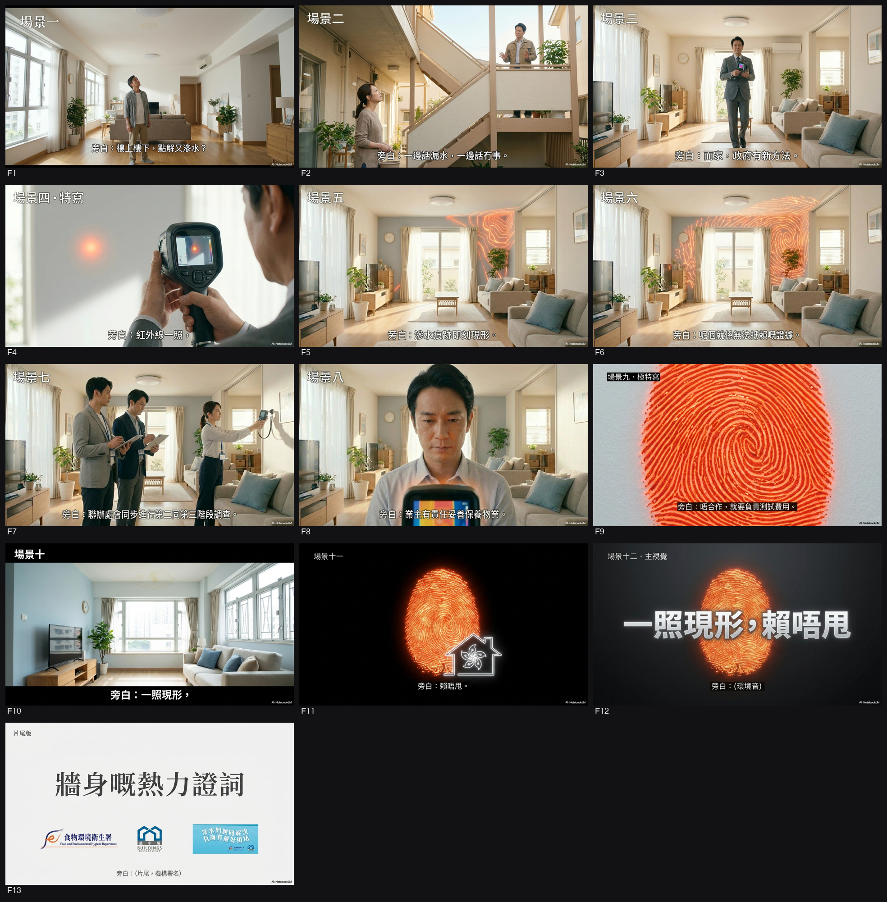
📋 睇 SCRIPT（每格畫面截 2 行,撳開睇全文）
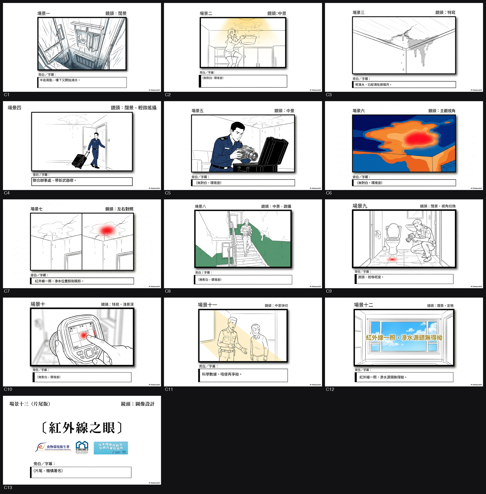
📋 睇 SCRIPT（每格畫面截 2 行,撳開睇全文）
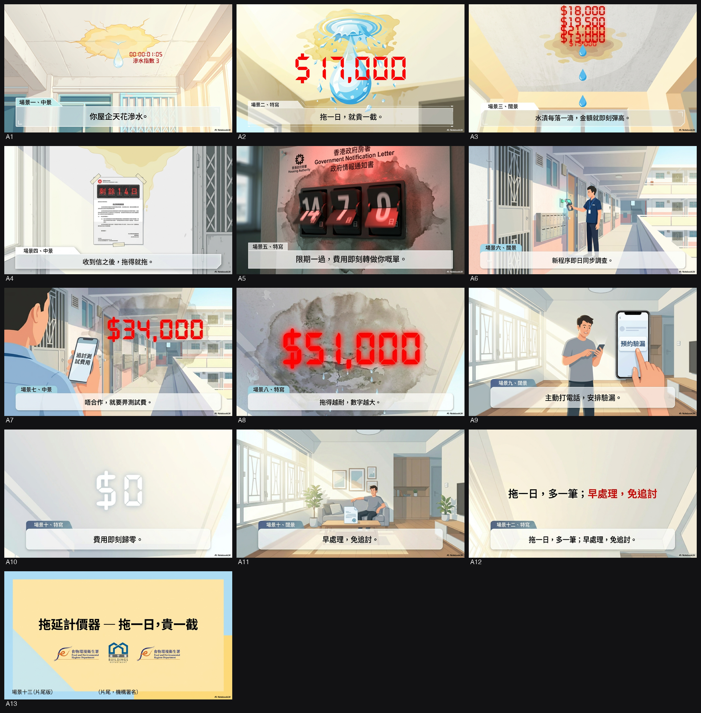
📋 睇 SCRIPT（每格畫面截 2 行,撳開睇全文）
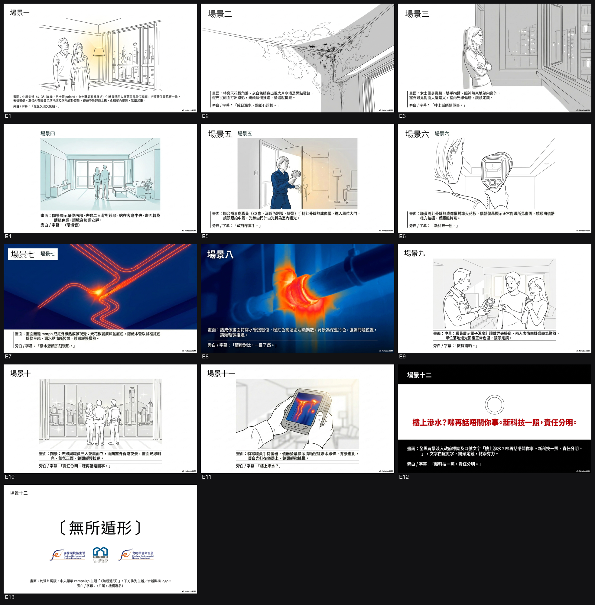
📋 睇 SCRIPT（每格畫面截 2 行,撳開睇全文）
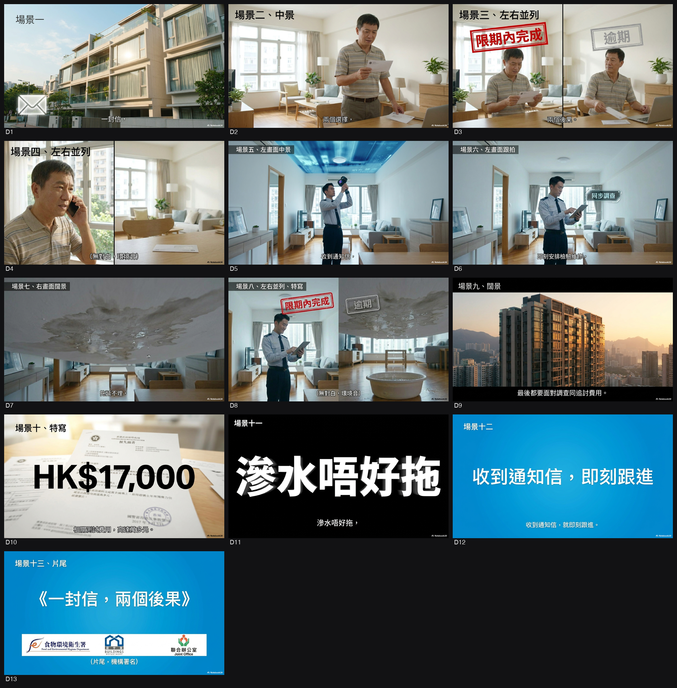
📋 睇 SCRIPT（每格畫面截 2 行,撳開睇全文）
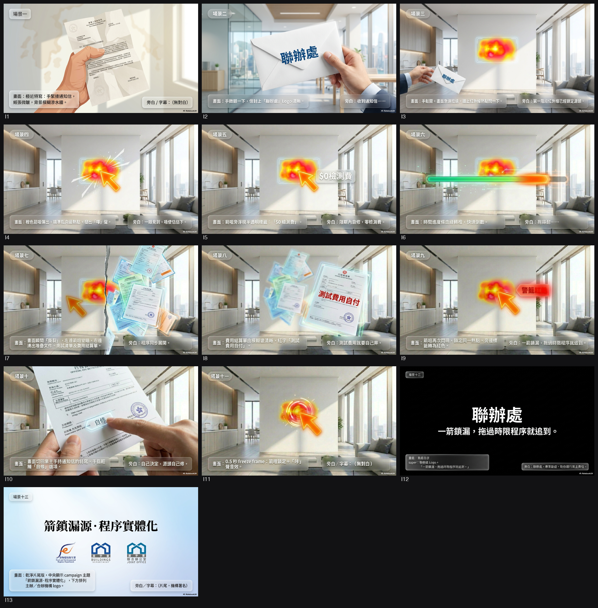
📋 睇 SCRIPT（每格畫面截 2 行,撳開睇全文）
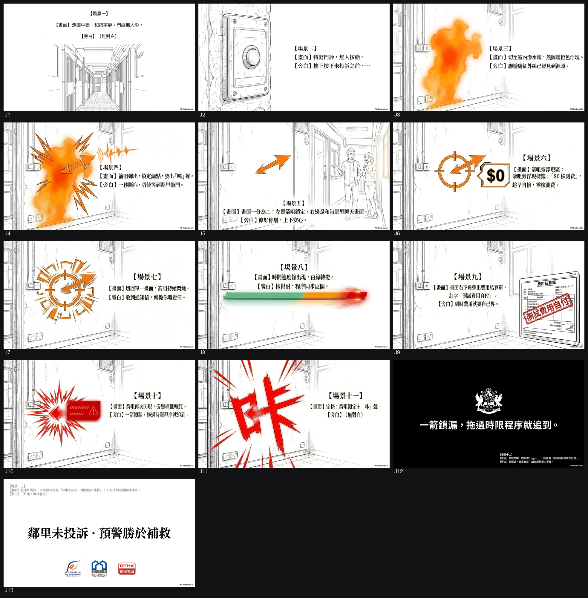
📋 睇 SCRIPT（每格畫面截 2 行,撳開睇全文）
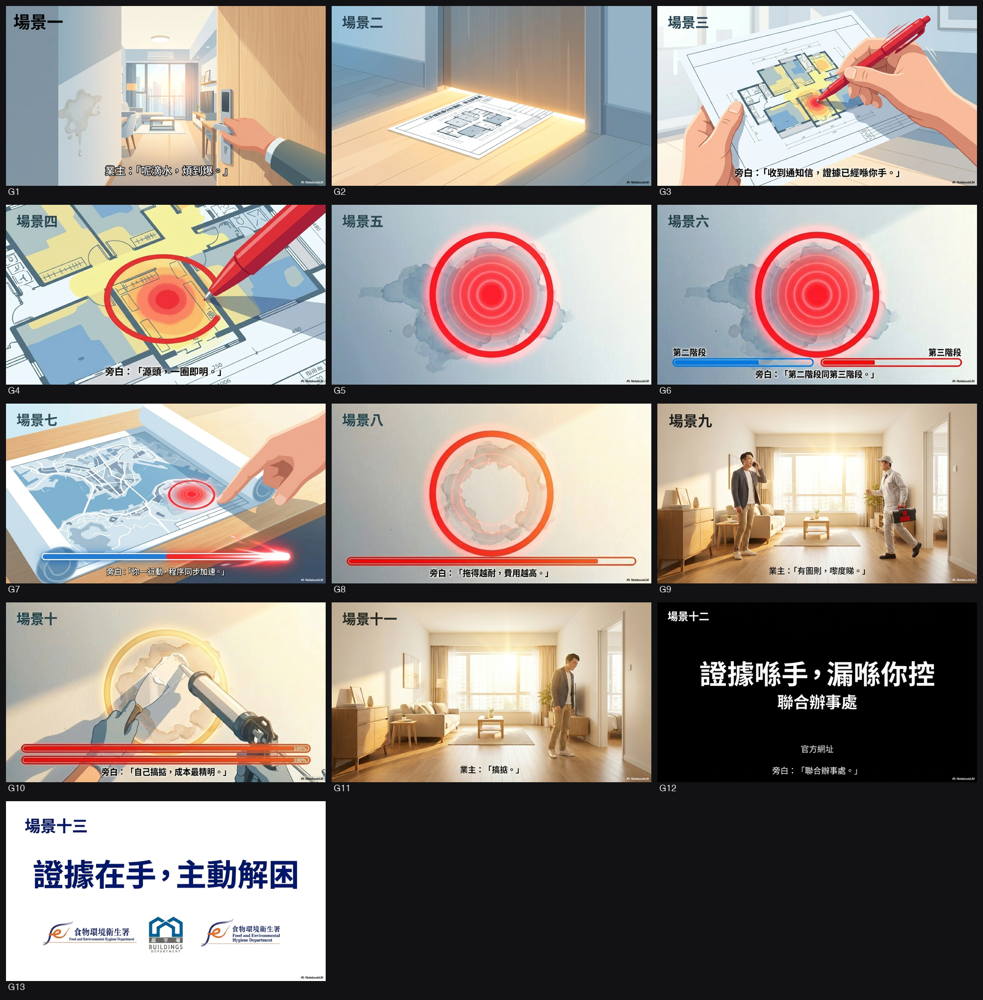
📋 睇 SCRIPT（每格畫面截 2 行,撳開睇全文）
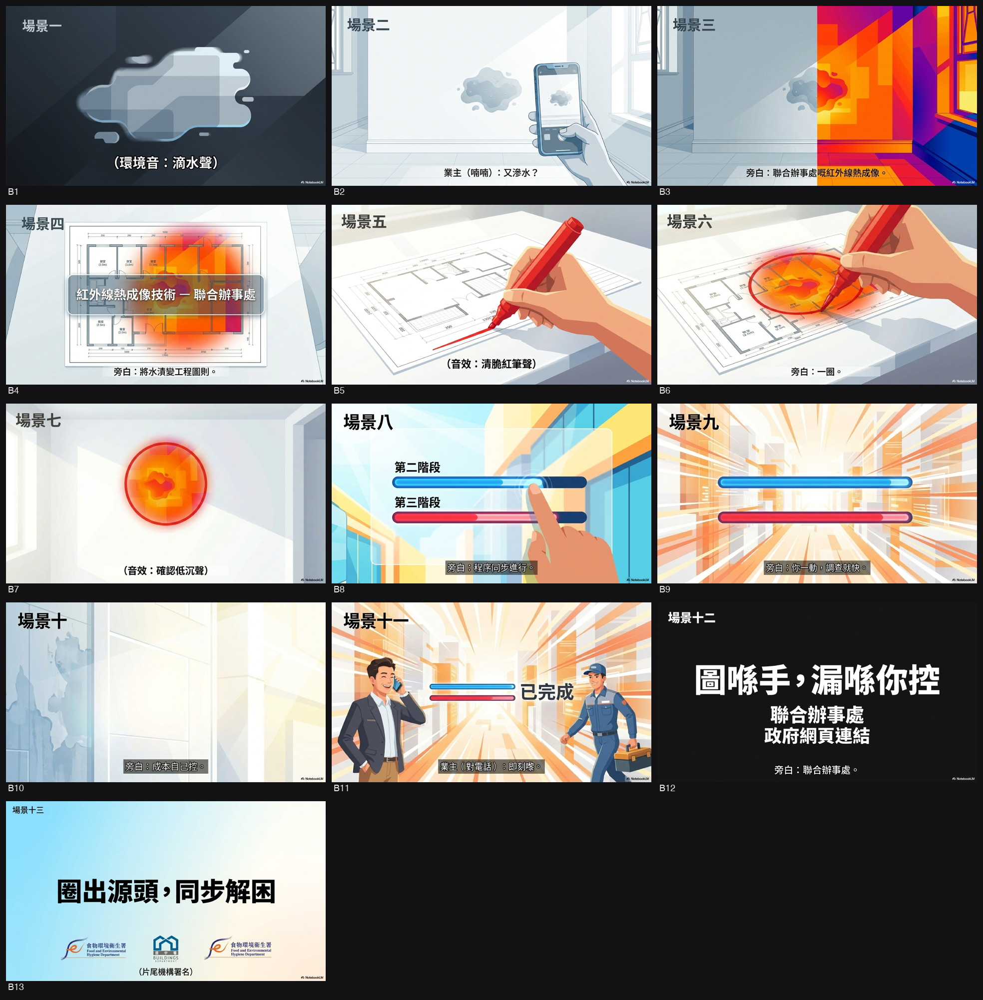
📋 睇 SCRIPT（每格畫面截 2 行,撳開睇全文）
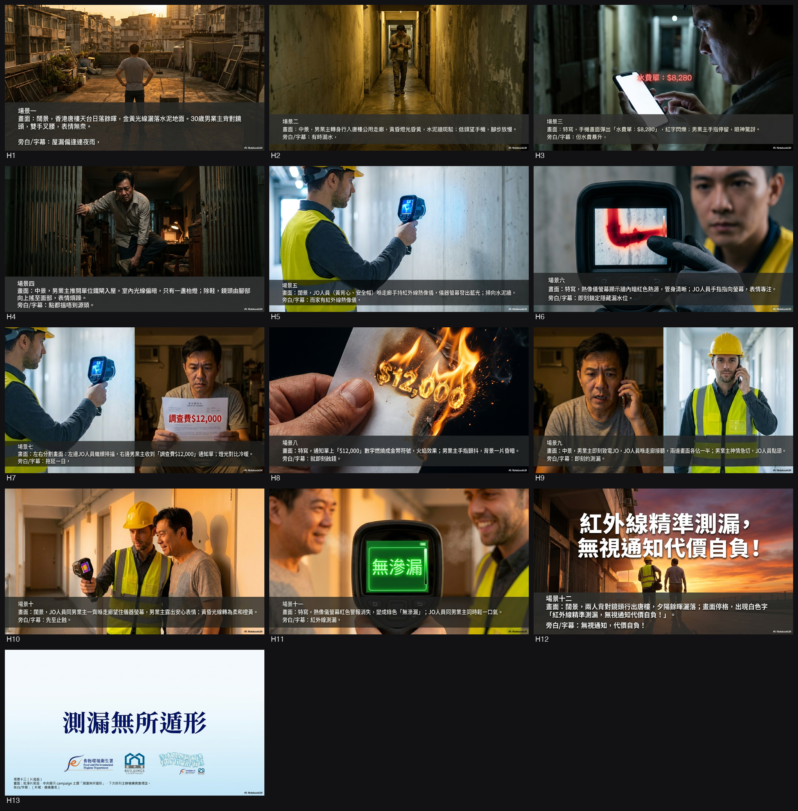